॥ श्रीहरिः ॥
शिवपुराण-कथासार
[ शिवमहापुराण–एक सिंहावलोकन ]
त्वमेव माता च पिता त्वमेव
त्वमेव बन्धुश्च सखा त्वमेव।
त्वमेव विद्या द्रविणं त्वमेव
त्वमेव सर्वं मम देवदेव॥
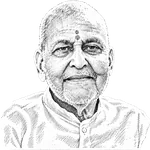
राधेश्याम खेमका
गीताप्रेस के मूल ग्रंथ — सरल एवं सुगम पठन के लिए नवीन प्रस्तुति।
॥ श्रीहरिः ॥
निवेदन
अठारह महापुराणोंमें शिवमहापुराणका विशेष गौरव है। इस पुराणके श्रवण एवं पारायणकी सुदीर्घ परम्परा चली आ रही है। इसमें मुख्यरूपसे भगवान् सदाशिव एवं जगज्जननी माता पार्वतीकी लीला–कथाओंका विस्तारसे प्रतिपादन हुआ है। भक्ति, ज्ञान, सदाचार, शौचाचार, उपासना तथा मानव–जीवनके कल्याणकी अनेक उपयोगी बातें इसमें निरूपित हैं। कथाओंका तो यह आकर ग्रन्थ है। शिवज्ञान, शैवीदीक्षा तथा शैवागमकी अत्यन्त प्रौढ़ सामग्री इसमें विद्यमान है।
वर्तमानमें उपलब्ध शिवमहापुराणमें सात संहिताएँ हैं, पहली संहिताका नाम विद्येश्वरसंहिता है। दूसरी संहिता रुद्रसंहिता है, जो सृष्टिखण्ड, सतीखण्ड, पार्वतीखण्ड, कुमारखण्ड तथा युद्धखण्ड–इस प्रकारसे पाँच खण्डोंमें विभक्त है। तीसरी संहिता शतरुद्रसंहिता है, चौथी संहिता कोटिरुद्रसंहिता है, पाँचवीं संहिता उमासंहिता है, छठी संहिताका नाम कैलाससंहिता है और सातवीं संहिता वायवीय संहिताके नामसे कही गयी है, जो दो भागों में विभक्त है। इस प्रकार अत्यन्त विस्तृत इस पुराणमें लगभग चौबीस हजार श्लोक हैं।
भगवत्कृपासे कुछ वर्षोंपूर्व कल्याणके विशेषांकके रूपमें दो वर्षोंमें क्रमशः शिवमहापुराणका हिन्दी भाषानुवाद श्लोकांकके साथ प्रकाशित हुआ है। उन दोनों अंकोंके प्रारम्भमें ‘शिवमहापुराण–एक सिंहावलोकन’ शीर्षकसे कल्याणके यशस्वी सम्पादक श्रीराधेश्यामजी खेमकाका एक सम्पादकीय आलेख प्रस्तुत हुआ था, जिसमें सम्पूर्ण शिवमहापुराणका कथासार तथा उस पुराणकी विशेष–विशेष बातोंका सरल एवं रोचक शैलीमें निरूपण किया गया था। दो वर्षोंके उसी कथासारको एक पुस्तिकाके रूपमें अलगसे भी प्रकाशित किया जा रहा है, ताकि जो पाठक महानुभाव समय आदिके अभावमें सम्पूर्ण शिवमहापुराण न पढ़ सकें, उन्हें भी इसके अध्ययनसे शिवमहापुराणकी बातोंका ज्ञान हो जाय। पुस्तकमें यथासम्भव स्थान–स्थानपर कथासे सम्बद्ध रेखाचित्र भी दिये गये हैं।
आशा है, इसके पढ़नेसे सम्पूर्ण शिवमहापुराणके अध्ययनके प्रति जिज्ञासा उत्पन्न हो सकेगी तथा यह संक्षिप्त ग्रन्थ पाठकोंको इस ओर प्रेरणा प्रदान करनेमें सहायक हो सकेगा।
महाशिवरात्रि, सं० २०७५
–प्रकाशक
॥ श्रीहरिः ॥
शिवमहापुराण—एक सिंहावलोकन
ॐ नमः शम्भवाय च मयोभवाय च
ॐ नमः शङ्कराय च मयस्कराय च
ॐ नमः शिवाय च शिवतराय च॥
कल्याण एवं सुखके मूल स्रोत भगवान् सदाशिवको नमस्कार है। कल्याणका विस्तार करनेवाले तथा सुखका विस्तार करनेवाले भगवान् शिवको नमस्कार है। मंगलस्वरूप और मंगलमयताकी सीमा भगवान् शिवको नमस्कार है।
पुराणोंमें शिवमहापुराणका अत्यन्त महिमामय स्थान है। पुराणोंकी परिगणनामें वेदतुल्य, पवित्र और सभी लक्षणोंसे युक्त यह चौथा महापुराण है। इस ग्रन्थरत्नके आदि, मध्य और अन्तमें सर्वत्र भूतभावन भगवान् सदाशिवकी महिमाका प्रतिपादन किया गया है। इस पुराणमें परब्रह्म परमात्माकी सदाशिवरूपमें उपासनाका वर्णन है। भगवान् सदाशिवकी लीलाएँ अनन्त हैं, उनकी लीला–कथाओं तथा उनकी महिमाका वर्णन ही इस ग्रन्थका मुख्य प्रतिपाद्य विषय है, जिसके सम्यक् अवगाहनसे साधकों–भक्तोंका मन महादेवके पदपद्मपरागका भ्रमर बनकर मुक्तिमार्गका पथिक बन जाता है।
माहात्म्य
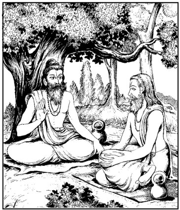
एक बार श्रीशौनकजीने महाज्ञानी सूतजीसे निवेदन किया–हे सूतजी! सदाचार, भगवद्भक्ति और विवेककी वृद्धि कैसे होती है तथा साधु पुरुष किस प्रकार अपने काम, क्रोध, लोभ आदि मानसिक विकारोंका निवारण करते हैं? आप हमें ऐसा कोई शाश्वत साधन बताइये, जो कल्याणकारी एवं परम मंगलकारी हो और वह साधन ऐसा हो, जिसके अनुष्ठानसे शीघ्र ही अन्तःकरणकी विशेष शुद्धि हो जाय तथा निर्मल चित्तवाले पुरुषको सदाके लिये शिवपदकी प्राप्ति हो जाय। सूतजीने कहा–मुनिश्रेष्ठ शौनक! सम्पूर्ण शास्त्रों के सिद्धान्तसे समन्वित, भक्ति आदिको बढ़ानेवाला तथा भगवान् शिवको सन्तुष्ट करनेवाला उत्तम शिवपुराण कालरूपी सर्पसे प्राप्त महात्रासका भी विनाश करनेवाला है। हे मुने! पूर्वकालमें शिवजीने इसे कहा था, गुरुदेव व्यासजीने सनत्कुमार मुनिका उपदेश पाकर कलियुगके प्राणियोंके कल्याणके लिये बड़े आदरसे संक्षेपमें इस पुराणका प्रतिपादन किया। इसे भगवान् शिवका वाड्मय स्वरूप समझना चाहिये तथा सब प्रकारसे इसका सेवन करना चाहिये।
इसके पठन, पाठन और श्रवणसे शिवभक्ति पाकर मनुष्य शीघ्र ही शिवपदको प्राप्त कर लेता है। इस शिवपुराणको सुननेसे मनुष्य सब पापोंसे मुक्त हो जाता है तथा बड़े–बड़े उत्कृष्ट भोगोंका भोग करके अन्तमें शिवलोकको प्राप्त कर लेता है।
शिवपुराणका श्रवण और भगवान् शंकरके नामका संकीर्तन–दोनों ही मनुष्योंको कल्पवृक्षके समान सम्यक् फल देनेवाले हैं, इसमें सन्देह नहीं है–
पुराणश्रवणं शम्भोर्नामसंकीर्तनं तथा।
कल्पद्रुमफलं सम्यक् मनुष्याणां न संशयः॥
यह शिवपुराण चौबीस हजार श्लोकोंसे युक्त है, इसमें सात संहिताएँ हैं। मनुष्यको चाहिये कि वह भक्ति, ज्ञान और वैराग्यसे भलीभाँति सम्पन्न हो बड़े आदरसे इसका श्रवण करे। जिस घरमें इस शिवपुराणकी कथा होती है, वह घर तीर्थरूप ही है, उसमें निवास करनेवालोंके पाप यह नष्ट कर देता है।
सूतजी शिवपुराणकी महिमाका वर्णन करते हुए पुराने इतिहासका उदाहरण प्रस्तुत करते हैं। पहला उदाहरण देवराज नामके एक ब्राह्मणका है, जो वेश्यागामी एवं दुष्ट था तथा दूसरा उदाहरण चंचुला नामकी एक स्त्री एवं बिन्दुग नामके उसके पतिका है। ये दोनों ही दुरात्मा और महापापी थे, परंतु शिवपुराणकी कथाके श्रवणके प्रभावसे इन सबका उद्धार हो जाता है और इन्हें शिवपदकी प्राप्ति हो जाती है।
शिवपुराणके श्रवणकी विधि
शौनकजीके पूछनेपर सूतजी शिवपुराणके श्रवणकी विधिका वर्णन करते हुए कहते हैं–
शिवपुराणको सुननेके प्रायः सभी अधिकारी हैं, शिव–उपासकके अतिरिक्त गणेशभक्त, शाक्त, सूर्योपासक, वैष्णव और इसके साथ ही ब्राह्मण, क्षत्रिय, वैश्य, शूद्र–चारों वर्णोंके स्त्री–पुरुष एवं ब्रह्मचारी, गृहस्थ, वानप्रस्थ, संन्यासी–ये सभी सकाम भाव अथवा निष्काम भावसे कथा–श्रवण कर सकते हैं, किंतु जो लोग विष्णु और शिवमें भेददृष्टि रखते हैं, शिवभक्तिसे रहित हैं; पाखण्डी, हिंसक तथा दुष्ट हैं, नास्तिक हैं; परस्त्री, पराया धन तथा देवसम्पत्तिके हरणके लिये लुब्ध रहते हैं–वे कथा–श्रवणके अधिकारी नहीं हैं। श्रोताको चाहिये कि वह ब्रह्मचर्यका पालन करे, पृथ्वीपर सोये, सत्य बोले, जितेन्द्रिय रहे तथा कथाकी समाप्तितक पत्तलपर भोजन करे तथा लोभ एवं हिंसा आदिसे रहित हो और काम, क्रोध, लोभ, मोह, मद, मात्सर्य, ईर्ष्या, राग–द्वेष, पाखण्ड एवं अहंकारको भी छोड़ दे। श्रोताको सदा विनयशील, सरलचित्त, पवित्र, दयालु, कम बोलनेवाला तथा उदार मनवाला होना चाहिये।
कथावाचकके लिये संयमी, शास्त्रज्ञ, शिव–आराधनामें तत्पर, दयालु, निर्लोभी, दक्ष, धैर्यशाली तथा वक्तृत्व–शक्तिसे सम्पन्न होना उत्तम माना गया है । व्यासके आसनपर बैठा हुआ कथावाचक ब्राह्मण जबतक कथा समाप्त न हो जाय, तबतक किसीको प्रणाम न करे।
इस तरह विधि–विधानका पालन करनेपर श्रीसम्पन्न शिवपुराण सम्पूर्ण फलको देनेवाला तथा भोग एवं मोक्षका दाता होता है। हे मुने! मैंने आपको शिवपुराणका यह माहात्म्य जो सम्पूर्ण अभीष्टोंको देनेवाला है, बता दिया। जो सदा भगवान् विश्वनाथका ध्यान करते हैं, जिनकी वाणी शिवके गुणोंकी स्तुति करती है और जिनके दोनों कान उनकी कथा सुनते हैं, इस जीव–जगतमें उन्हींका जन्म लेना सफल है। वे निश्चय ही संसार–सागरसे पार हो जाते हैं।
॥ श्रीहरिः ॥
विद्येश्वरसंहिता
व्यासजी कहते हैं–जो धर्मका महान् क्षेत्र है, जहाँ गंगा–यमुनाका संगम हुआ है, जो ब्रह्मलोकका मार्ग है, उस परम पुण्यमय प्रयागमें महात्मा मुनियोंने एक विशाल ज्ञानयज्ञका आयोजन किया। उस ज्ञानयज्ञका तथा मुनियोंका दर्शन करनेके लिये व्यासशिष्य महामुनि सूतजी वहाँ पधारे। वहाँ उपस्थित महात्माओंने उनकी विधिवत् स्तुति करके विनयपूर्वक उनसे निवेदन किया–हे सूतजी! इस समय हमें एक ही बात सुननेकी इच्छा है, आपका अनुग्रह हो तो गोपनीय होनेपर भी आप उस विषयका वर्णन करें।
घोर कलियुग आनेपर मनुष्य पुण्यकर्मसे दूर रहेंगे, दुराचारमें फँस जायेँगे, सब–के–सब सत्यभाषणसे विमुख हो जायेँगे, दूसरोंकी निन्दामें तत्पर होंगे, पराये धनको हड़प लेनेकी इच्छा करेंगे, उनका मन परायी स्त्रियोंमें आसक्त होगा तथा वे दूसरे प्राणियोंकी हिंसा किया करेंगे। वे अपने शरीरको ही आत्मा समझेंगे। वे मूढ़ नास्तिक तथा पशुबुद्धि रखनेवाले होंगे। माता–पितासे विमुख होंगे तथा वे कामवश स्त्रियोंकी सेवामें लगे रहेंगे। वे अपनेको श्रेष्ठ कुलवाला मानकर चारों वर्णोंसे विपरीत व्यवहार करनेवाले, सभी वर्णोंको भ्रष्ट करनेवाले होंगे। कलियुगकी स्त्रियाँ प्रायः सदाचारसे भ्रष्ट होंगी, पतिका अपमान करनेवाली होंगी। सास–ससुरसे द्रोह करनेवाली होंगी, किसीसे भय नहीं मानेंगी।
हे सूतजी! इस तरह जिनकी बुद्धि नष्ट हो गयी है और जिन्होंने अपने धर्मका त्याग कर दिया है, ऐसे लोगोंको इहलोक और परलोकमें उत्तम गति कैसे प्राप्त होगी–इसी चिन्तासे हमारा मन सदा व्याकुल रहता है। सूतजी बोले–हे साधु महात्माओ! आप सबने तीनों लोकोंका हित करनेवाली अच्छी बात पूछी है, मैं इस विषयका वर्णन करता हूँ, आप लोग आदरपूर्वक सुनें।
कल्याणप्राप्तिका उत्तम साधन–शिवपुराण
सबसे उत्तम जो शिवपुराण है, वह वेदान्तका सार–सर्वस्व है तथा वक्ता और श्रोताका समस्त पापोंसे उद्धार करनेवाला है। वह परलोकमें परमार्थ वस्तुको देनेवाला है, कलिकी कल्मषराशिका वह विनाशक है। उसमें भगवान् शिवके उत्तम यशका वर्णन है। हे ब्राह्मणों! धर्म, अर्थ, काम और मोक्ष–इन चारों पुरुषार्थोंको देनेवाले उस पुराणका प्रभाव विस्तारको प्राप्त हो रहा है।
हे विप्रवरो! उस सर्वोत्तम शिवपुराणके अध्ययन एवं श्रवणमात्रसे वे कलियुगके पापासक्त जीव श्रेष्ठतम गतिको प्राप्त हो सकेंगे। एक बार महर्षिगण परस्पर वाद–विवादमें फँस गये, तब वे सब–के–सब अपनी शंकाके समाधानके लिये सृष्टिकर्ता ब्रह्माजीके पास गये। मुनिगणोंने कहा–हे भगवन्! परम साध्य क्या है और उसका परम साधन क्या है तथा उसका साधक कैसा होता है?
ब्रह्माजी कहते हैं–शिवपदकी प्राप्ति ही साध्य है, उनकी सेवा ही साधन है तथा उनके प्रसादसे जो नित्य, नैमित्तिक आदि फलोंके प्रति निःस्पृह होता है, वही साधक है। भगवान् शंकरका श्रवण, कीर्तन और मनन–ये तीनों महत्तर साधन कहे गये हैं, ये तीनों ही वेदसम्मत हैं।
सूतजी कहते हैं–हे शौनक! जो श्रवण, कीर्तन और मनन–इन तीनोंके अनुष्ठानमें समर्थ न हो, वह भगवान् शंकरके लिंग या मूर्तिकी स्थापनाकर नित्य उसकी पूजा करके संसार–सागरसे पार हो सकता है।
ऋषिगणोंके यह पूछनेपर कि मूर्तिमें ही सर्वत्र देवताओंकी पूजा होती है, परंतु भगवान् शिवकी पूजा सब जगह मूर्तिमें और लिंगमें क्यों की जाती है?
सूतजी कहते हैं–एकमात्र भगवान् शिव ही ब्रह्मरूप होनेके कारण निराकार कहे गये हैं। रूपवान् होनेके कारण साकार भी हैं। निराकार होनेके कारण ही उनकी पूजाका आधारभूत लिंग भी निराकार ही प्राप्त हुआ है अर्थात् शिवलिंग शिवके निराकार स्वरूपका प्रतीक है।
ज्योतिर्लिंगका प्राकट्य
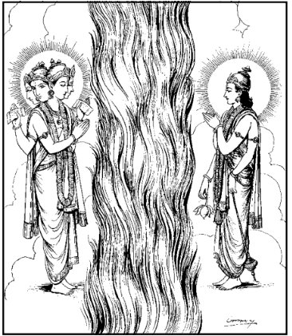
‘एक समय शेषशायी भगवान् विष्णु अपनी पराशक्ति तथा पार्षदोंसे घिरे हुए शयन कर रहे थे, उसी समय ब्रह्मवेत्ताओं में श्रेष्ठ ब्रह्माजी वहाँ पधारे तथा विष्णुसे वार्त्ता करते हुए वाद–विवाद करने लगे। वाद–विवाद इतना बढ़ गया कि उसने भयंकर युद्धका रूप धारण कर लिया। उस भयंकर युद्धको देखकर देवतागण भयभीत होकर भगवान् शंकरके पास कैलास पहुँचे और उन्हें उससे अवगत कराया।
निराकार भगवान् शंकर इस भयंकर युद्धको देखकर एक विशाल अग्निस्तम्भके रूपमें उन दोनोंके बीचमें प्रकट हो गये। इस अद्भुत स्तम्भको देखकर ब्रह्मा, विष्णु तथा अन्य सभी लोग आश्चर्यचकित हो गये। ब्रह्मा–विष्णु दोनोंने इसकी ऊँचाई तथा जड़की सीमा देखनेका विचार किया। विष्णु शूकरका रूप धारणकर इसकी जड़की खोजमें नीचेकी ओर चले। इसी प्रकार ब्रह्मा भी हंसका रूप धारणकर उसका अन्त खोजनेके लिये ऊपरकी ओर चल पड़े। पाताललोकको खोदकर बहुत दूरतक जानेपर भी विष्णुको उस अग्निस्तम्भका आधार नहीं मिला। वे थक–हारकर रणभूमिमें वापस आ गये। दूसरी ओर ब्रह्माजीने आकाश–मार्गसे जाते हुए मार्गमें एक अद्भुत केतकी (केवड़े )–के पुष्पको गिरते हुए देखा। उस केतकी–पुष्पने ब्रह्माजीसे कहा–इस स्तम्भके आदिका कहीं पता नहीं है, आप उसे देखनेकी आशा छोड़ दें। ब्रह्माजीने केतकी–पुष्पसे निवेदन किया कि तुम मेरे साथ चलकर विष्णुके समक्ष यह कह देना कि ‘ब्रह्माजीने इस स्तम्भका अन्त देख लिया है, मैं इसका साक्षी हूँ।’ आपत्कालमें मिथ्याभाषणका दोष नहीं है। केतकीने वैसा ही किया। भगवान् शंकर तो अन्तर्यामी थे ही, उन्होंने विष्णुकी सत्यनिष्ठासे प्रसन्न होकर देवताओंके समक्ष उन्हें अपनी समानता प्रदान की तथा
ब्रह्मासे कहा–हे ब्रह्मन्! तुमने असत्यका आश्रय लिया है, इसलिये संसारमें तुम्हारा सत्कार नहीं होगा और तुम्हारे मन्दिर नहीं बनेंगे तथा पूजनोत्सव आदि भी नहीं होंगे।
भगवान् शिवने झूठी गवाही देनेवाले कपटी केतकीसे कहा–तुम दुष्ट हो, मेरी पूजामें उपस्थित तुम्हारा फूल मुझे प्रिय नहीं होगा। तदनन्तर भगवान् शंकर ब्रह्मा, विष्णु तथा केतकी–पुष्पपर अनुग्रह करके सभी देवताओंसे स्तुत होकर सभामें सुशोभित हुए।
पंचाक्षरमन्त्रकी महिमा
आगेके अध्यायोंमें भगवान् सदाशिवने प्रणव एवं पंचाक्षर मन्त्रकी उत्पत्ति और महिमाका वर्णन किया है। सबसे पहले भगवान् शिवके मुखसे ओंकार (ॐ) प्रकट हुआ। यह मन्त्र शिवस्वरूप ही है। इसी प्रणवसे पंचाक्षर मन्त्रकी उत्पत्ति हुई है। प्रणवसे युक्त पंचाक्षर मन्त्र (ॐ नमः शिवाय)–से सम्पूर्ण मनोरथोंकी सिद्धि होती है। इस मूल मन्त्रसे भोग और मोक्ष दोनों ही प्राप्त होते हैं।
इसके अनन्तर सूतजी शिवलिंगकी स्थापना, उसके लक्षण और पूजनकी विधि तथा शिवपदकी प्राप्ति करानेवाले सत्कर्मोंका वर्णन करते हैं। आगे मोक्षदायक काशी आदि मुक्तिक्षेत्रोंका वर्णन, विशेष कालमें विभिन्न नदियोंके जलमें स्नानके उत्तम फलका निर्देश तथा तीर्थोंमें पापसे बचे रहनेकी चेतावनी भी दी गयी है। सदाचार, शौचाचार, स्नान, भस्म–धारण, सन्ध्यावन्दन, प्रणवजप, गायत्रीजप, दान, न्यायतः धनोपार्जन तथा अग्निहोत्र आदिकी विधि एवं उसकी महिमाका वर्णन हुआ है।
सूतजी कहते हैं कि मुमुक्षु व्यक्तिको सदा ज्ञानका ही अभ्यास करना चाहिये। धर्मसे अर्थकी प्राप्ति होती है, अर्थसे भोग सुलभ होता है और उस भोगसे वैराग्यकी प्राप्ति होती है। धर्मपूर्वक उपार्जित धनसे जो भोग प्राप्त होता है, उससे एक दिन अवश्य वैराग्यका उदय होता है। धर्मके विपरीत अधर्मसे उपार्जित धनद्वारा जो भोग प्राप्त होता है, उससे भोगोंके प्रति आसक्ति उत्पन्न होती है। ईश्वरार्पण बुद्धिसे यज्ञ–
दान आदि कर्म करके मनुष्य मोक्षफलका भागी होता है।
शिवसपर्याका अनन्त फल
भगवती उमा जगत्की माता हैं और भगवान् सदाशिव जगत्के पिता। जो इनकी सेवा करता है, उस पुत्रपर इन दोनों माता–पिताकी कृपा नित्य अधिकाधिक बढ़ती रहती है। वे उसे अपना आन्तरिक ऐश्वर्य प्रदान करते हैं, अतः आन्तरिक आनन्दकी प्राप्तिकी लिये शिवलिंगको माता–पिताका स्वरूप मानकर उसकी पूजा करनी चाहिये। भक्तिपूर्वक की गयी शिवपूजा मनुष्योंको पुनर्जन्मसे छुटकारा दिलाती है। शिवभक्तकी पूजासे भगवान् शिव बहुत प्रसन्न होते हैं। शिवभक्त साक्षात् शिवस्वरूप ही है, अतः उसकी सेवामें तत्पर रहना चाहिये।
भगवान् शिवको अपनी आत्मा मानकर उनकी पूजा करनी चाहिये। भगवान् शिवकी प्रदक्षिणा, नमस्कार और षोडशोपचार पूजन अत्यन्त फलदायी होता है। इस पृथ्वीपर ऐसा कोई पाप नहीं है, जो शिव–प्रदक्षिणासे नष्ट न हो सके। इसलिये प्रदक्षिणाका आश्रय लेकर सभी पापोंका नाश कर देना चाहिये।
लिंगार्चनका माहात्म्य
इसके अनन्तर पार्थिव शिवलिंगके पूजनका माहात्म्य, पार्थिव लिंगके निर्माणकी विधि और वेदमन्त्रोंद्वारा उसके पूजनकी विस्तृत एवं संक्षिप्त विधिका वर्णन किया गया है।
चारों वेदोंमें लिंगार्चनसे बढ़कर कोई पुण्य नहीं है। केवल शिवलिंगकी पूजा होनेपर समस्त चराचर जगत्की पूजा हो जाती है।
रुद्राक्ष–धारणसे एक चौथाई, विभूति (भस्म)–धारणसे आधा, मन्त्रजपसे तीन चौथाई और पूजासे पूर्ण फल प्राप्त होता है।
सूतजी कहते हैं–प्रिय मुनीश्वरो! इस प्रकार मैंने शिवकी आज्ञाके अनुसार उत्तम मुक्ति देनेवाली विद्येश्वरसंहिता आपके समक्ष पूर्णरूपसे कह दी।
रुद्रसंहिता (सृष्टिखण्ड)
व्यासजी कहते हैं–एक समयकी बात है, नैमिषारण्यमें निवास करनेवाले शौनक आदि ऋषियोंने सूतजीसे पूछा–हे सूतजी! हमने सुना है कि भगवान् शिव शीघ्र प्रसन्न हो जाते हैं, वे महान् दयालु हैं, इसलिये वे अपने भक्तोंका कष्ट नहीं देख सकते।
ब्रह्मा, विष्णु और महेश–ये तीनों देवता शिवके ही अंशसे उत्पन्न हुए हैं। उनके प्राकट्यकी कथा तथा उनके विशेष चरित्रोंका वर्णन कीजिये। प्रभो! आप उमाके आविर्भाव तथा विवाहकी भी कथा कहें; विशेषतः उनके गृहस्थधर्मका तथा अन्य लीलाओंका भी वर्णन करें। निष्पाप सूतजी! हमारे प्रश्नके उत्तरमें ये सब तथा दूसरी बातें भी अवश्य कहनी चाहिये। सूतजी बोले–हे मुनीश्वरो! जैसे आप लोग पूछ रहे हैं, उसी प्रकार नारदजीने शिवरूपी भगवान् विष्णुसे प्रेरित होकर अपने पिता ब्रह्माजीसे पूछा था।
ऋषिगणोंने सूतजीसे पुनः पूछा कि हे प्रभो! ब्रह्मा और नारदका यह महान् सुख देनेवाला संवाद कब हुआ था, जिसमें संसारसे मुक्ति प्रदान करनेवाली शिवलीला वर्णित है, कृपाकर इसका वर्णन करें।
नारदमोहकी कथा
सूतजी बोले–एक समयकी बात है, नारदजीने तपस्याके लिये मनमें विचार किया तथा हिमालयकी एक सुन्दर गुफामें तपस्यामें स्थित हो गये। उसी समय उनकी तपस्या देखकर देवराज इन्द्र संतप्त होने लगे और उन्होंने कामदेवसे वहाँ जाकर नारदजीकी तपस्याको भंग करनेका आदेश दिया। कामदेवने अपनी सम्पूर्ण कलाओंसे उनकी तपस्यामें विघ्न डालनेका प्रयत्न किया, परंतु वे सफल नहीं हुए। महादेवजीके अनुग्रहसे कामदेवका गर्व चूर हो गया। वास्तवमें महादेवजीकी कृपासे ही नारदमुनिपर कामदेवका कोई प्रभाव नहीं पड़ा; क्योंकि पहले उसी आश्रममें भगवान् शिवने
उत्तम तपस्या की थी और वहीं उन्होंने कामदेवको भस्म कर डाला था। उस समय रतिकी प्रार्थना एवं देवताओंकी याचना करनेपर भगवान् शंकरने कुछ समय व्यतीत होनेके बाद कामदेवको जीवित होनेका वरदान दिया था।
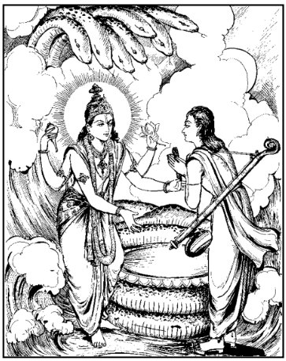
नारदजीको यह गर्व हो गया कि कामदेवपर मेरी विजय हुई। भगवान् शिवकी मायासे मोहित होनेके कारण उन्हें यथार्थ बातका ज्ञान नहीं रहा। वे तत्काल कैलासपर्वतपर गये, वहाँ रुद्रदेवको उन्होंने कामदेवपर अपनी विजयका वृत्तान्त सुनाया। यह सब सुनकर भगवान् शंकरने नारदजीकी प्रशंसा करते हुए भगवान् विष्णुके सामने इसकी चर्चा कदापि न करनेकी बात कही, परंतु नारदजीके चित्तमें मदका अंकुर जम गया था। इसलिये नारदजीने वहाँसे विष्णुलोक जाकर भगवान् विष्णुसे अपना सारा वृत्तान्त अभिमानके साथ कह सुनाया। नारदमुनिका अहंकारयुक्त वचन सुनकर भगवान् विष्णुने यथार्थ बातें पूर्ण रूपसे जान लीं। नारदजीकी प्रशंसा करते हुए भगवान् विष्णुने कहा–आप तो नैष्ठिक ब्रह्मचारी हैं तथा सदा ज्ञान–वैराग्यसे युक्त रहते हैं, फिर आपमें काम–विकार कैसे आ सकता है? विष्णुजीकी बात सुनकर नारदजी प्रसन्न होकर वहाँसे चले गये।
नारदजीके आगे जानेपर मार्गमें श्रीहरिने एक सुन्दर नगरकी रचना की, जो अत्यन्त मनोहर एवं वैकुण्ठसे अधिक रमणीय था, जिसमें शीलनिधि नामके एक राजाकी देवकन्याके समान सुन्दरी कन्या थी। नारदमुनि उस नगरको देखकर मोहित हो गये और शीलनिधिके द्वारपर गये। महाराज शीलनिधिने श्रीमती नामक अपनी सुन्दरी कन्याको वहाँ बुलाकर नारदजीके चरणोंमें प्रणाम करवाया और निवेदन किया–यह मेरी पुत्री है, अपने विवाहके निमित्त स्वयंवरमें जानेवाली है। महर्षे! आप इसका भाग्य बताइये। नारदजी उस कन्याके शुभ लक्षणोंको देखकर अत्यधिक प्रभावित हुए तथा कन्याके पिता राजासे उसके सुख–सौभाग्य तथा गुणोंकी विशेष सराहना करते हुए वहाँसे विदा हो गये।
नारदजीके मनमें यह भाव आया कि किस प्रकार इस कन्यासे मेरा विवाह हो। वे तत्काल भगवान् विष्णुके पास जा पहुँचे और एकान्तमें विष्णुसे अपनी इच्छा व्यक्त की तथा उनसे यह प्रार्थना की कि आप अपना स्वरूप मुझे दे दें, जिससे वह कन्या मेरा वरण कर ले। भगवान् विष्णु बोले–मैं पूरी तरह तुम्हारा हित–साधन करूँगा। यह कहकर भगवान् विष्णुने नारदमुनिको मुख तो वानरका दे दिया तथा शेष अंगोंमें अपना–सा स्वरूप देकर वे वहाँसे अन्तर्धान हो गये। इस रहस्यसे अनभिज्ञ नारदजी स्वयंवरमें पहुँचे। सुलक्षणा राजकुमारी स्वयंवरके मध्य भागमें खड़ी होकर अपने मनके अनुरूप वरका अन्वेषण करने लगी। नारदका वानर–सा मुख देखकर वह कुपित हो गयी और उनकी ओरसे दृष्टि हटाकर अपने मनोवांछित वरको ढूँढ़ने लगी। उसी समय राजाका वेष धारणकर विष्णु वहाँ आ पहुँचे। तब भगवान् विष्णुके गलेमें वरमाला डालकर वह उनके साथ अन्तर्धान हो गयी।
नारदजीकी इस मुखाकृतिको स्वयंवरमें और किसीने तो नहीं देखा, शिवजीके दो पार्षद वहाँ उपस्थित थे; उन्होंने यह सब देखकर नारदजीका उपहास किया तथा उन्हें अपना प्रतिबिम्ब देखनेके लिये कहा। तब नारदजीको वास्तविकताका पता लगा तथा वे क्रोधसे व्याकुल हो गये। उन दोनों शिवगणोंको उन्होंने राक्षस होनेका शाप दिया। इसके अनन्तर विष्णुलोक जाकर मायासे मोहित नारद विष्णुको शाप देते हुए बोले–तुमने स्त्रीके लिये मुझे व्याकुल किया है, तुम भी मनुष्य हो जाओ और स्त्रीके वियोगका दुःख भोगो। तुमने जिन वानरोंके समान मेरा मुख बनाया था, वे ही उस समय तुम्हारे सहायक हों।
कुछ ही क्षणोंमें भगवान् शंकरने अपनी विश्वमोहिनी मायाको खींच लिया। उस मायाके तिरोहित होते ही नारदजी शुद्ध बुद्धिसे युक्त हो गये और उनकी सारी व्याकुलता जाती रही। श्रीनारदजी भगवान् विष्णुके चरणोंमें गिर पड़े और अत्यन्त पश्चात्ताप करने लगे।
भगवान् विष्णुद्वारा नारदजीको शिवोपासनाका उपदेश
भगवान् विष्णु बोले–‘तात! खेद न करो, भगवान् शिव तुम्हारा कल्याण करेंगे। तुमने मदसे मोहित होकर जो भगवान् शिवकी बात नहीं मानी थी, उसी अपराधका भगवान् शिवने तुम्हें ऐसा फल दिया है। सबके स्वामी परमेश्वर शंकर ही परब्रह्म परमात्मा हैं, उन्हींका सच्चिदानन्द स्वरूप है। वे ही अपनी मायाको लेकर ब्रह्मा, विष्णु और महेश–इन तीन रूपोंमें प्रकट होते हैं। अपने सारे संशयोंको त्यागकर अनन्य भावसे शिवके शतनाम–स्तोत्रका पाठ करो तथा निरन्तर उन्हींकी उपासना तथा उन्हींका भजन करो। भगवान् शंकरकी उपासनासे सभी प्रकारके पातक एवं दोष समाप्त हो जाते हैं। इस प्रकार प्रसन्नचित्त भगवान् विष्णु नारदमुनिको उपदेश देकर वहाँसे अन्तर्धान हो गये।
इसके अनन्तर श्रीनारदजी भी अत्यन्त आनन्दित हो शिवतीर्थोंका दर्शन करते हुए भू–मण्डलमें विचरने लगे। अन्तमें वे सबके ऊपर विराजमान शिवस्वरूपिणी काशीपुरीमें पहुँचे। काशीपुरीका दर्शन करके नारदजी कृतार्थ हो गये। उसके बाद ब्रह्मलोक पहुँचकर शिवतत्त्वका विशेष रूपसे ज्ञान प्राप्त करनेकी इच्छासे नारदजीने ब्रह्माजीको भक्तिपूर्वक नमस्कार किया और कहा कि जगत्प्रभो! आपकी कृपासे मैंने भगवान् विष्णुके उत्तम माहात्म्यका ज्ञान प्राप्त किया, परंतु शिवतत्त्वका ज्ञान मुझे अभीतक नहीं हुआ है। मैं भगवान् शंकरकी पूजा–विधिको भी नहीं जानता। अतः प्रभो! आप भगवान् शिवके विविध चरितोंको तथा उनके स्वरूपतत्त्व, प्राकट्य, विवाह, गृहस्थ–धर्म सब मुझे बताइये। कार्तिकेयके जन्मकी कथा भी मुझे सुनाइये।
शिवतत्त्वका निरूपण
ब्रह्माजीने नारदसे शिवतत्त्वका वर्णन करते हुए कहा–शिवतत्त्वका स्वरूप बड़ा उत्कृष्ट तथा अद्भुत है, जिस समय प्रलयकाल उपस्थित हुआ, उस समय समस्त चराचर जगत् नष्ट हो गया। सर्वत्र केवल अन्धकार–ही–अन्धकार था। इस प्रकार सब ओर निरन्तर सूचीभेद्य घोर अन्धकारमें उस समय ‘तत्सत् ब्रह्म’–इस श्रुतिमें जो ‘सत्’ सुना जाता है, एकमात्र वही शेष था, जिसे योगीजन अपने हृदयाकाशके अन्दर निरन्तर देखते हैं। कुछ कालके बाद (सृष्टिका समय आनेपर) परमात्माको द्वितीयकी इच्छा प्रकट हुई–उसके भीतर एक–से–अनेक होनेका संकल्प उदित हुआ। तब उस निराकार परमात्माने अपनी लीलाशक्तिसे अपने लिये मूर्ति (आकार) – की कल्पना की। वह मूर्ति सम्पूर्ण ऐश्वर्य गुणोंसे सम्पन्न, सर्वज्ञानमयी हुई। जो मूर्तिरहित परब्रह्म है, उसीकी मूर्ति (चिन्मय आकार) भगवान् सदाशिव हैं। सभी विद्वान् उन्हींको ईश्वर कहते हैं। उस समय स्वेच्छया विहार करनेवाले उन सदाशिवने अपने विग्रहसे एक स्वरूपभूता शक्तिकी सृष्टि की, जो उनके अपने श्रीअंगसे कभी अलग होनेवाली नहीं थी।
अविमुक्तक्षेत्र काशी
उन साम्बसदाशिव ब्रह्मने एक ही समय शक्तिके साथ ‘शिवलोक’ नामक क्षेत्रका निर्माण किया। इस क्षेत्रको ही काशी कहते हैं। यह परम निर्वाण या मोक्षका स्थान है, जो सबके ऊपर विराजमान है।
वे प्रिया–प्रियतमरूप शक्ति और शिव जो परमानन्दस्वरूप हैं, उस मनोरम क्षेत्र काशीपुरीमें नित्य निवास करते हैं।
हे मुने! शिव और शिवाने प्रलयकालमें भी कभी उस क्षेत्रको अपने सान्निध्यसे मुक्त नहीं किया। इसीलिये विद्वान् पुरुष उसे ‘अविमुक्तक्षेत्र’ भी कहते हैं। यह क्षेत्र आनन्दका हेतु है, इसलिये पिनाकधारी भगवान् शिवने उसका नाम पहले ‘आनन्दवन’ रखा था।
सदाशिवसे नारायणका प्राकट्य
हे देव्षे! एक समय उस आनन्दवनमें रमण करते हुए शिवा और शिवके मनमें यह इच्छा हुई कि किसी दूसरे पुरुषकी भी सृष्टि करनी चाहिये। जिसपर सृष्टि–संचालनका महान् भार रखकर हम दोनों केवल काशीमें रहकर इच्छानुसार विचरण करें। वही पुरुष हमारे अनुग्रहसे सदा सबकी सृष्टि करे, वही पालन करे और अन्तमें वही सबका संहार भी करे।
ऐसा निश्चय करके शक्तिसहित सर्वव्यापी परमेश्वर शिवने अपने वाम भागके दसवें अंगपर अमृत मल दिया। वहाँ उसी समय एक पुरुष प्रकट हुआ, जो तीनों लोकों में सबसे अधिक सुन्दर और शान्त था। उसकी कान्ति इन्द्रनीलमणिके समान श्याम थी। उसके श्रीअंगोंपर स्वर्णसदृश कान्तिवाले दो रेशमी पीताम्बर शोभा दे रहे थे। शिवजीने ‘विष्णु’ नामसे उसे विख्यात किया तथा अपने श्वासमार्गसे उन्हें वेदोंका ज्ञान प्रदान किया।
इसके अनन्तर भगवान् विष्णुने दीर्घकालतक तपस्या की। तपस्याके परिश्रमसे विष्णुके अंगोंसे अनेक प्रकारकी जलधाराएँ निकलने लगीं। नार अर्थात् जलमें शयन करनेके कारण ही उनका
नारायण–यह श्रुतिसम्मत नाम प्रसिद्ध हुआ।
सदाशिवके दक्षिणांगसे ब्रह्माका प्रादुर्भाव
ब्रह्माजी कहते हैं–हे देवर्षे! जब नारायणदेव जलमें शयन करने लगे, उस समय उनकी नाभिसे भगवान् शंकरकी इच्छासे सहसा एक विशाल तथा उत्तम कमल प्रकट हुआ, जो बहुत बड़ा था, तत्पश्चात् परमेश्वर साम्बसदाशिवने पूर्ववत् परम प्रयत्न करके मुझे अपने दाहिने अंगसे उत्पन्न किया तथा मुझे तुरन्त ही अपनी मायासे मोहित करके नारायणदेवके नाभिकमलमें डाल दिया और लीलापूर्वक मुझे वहाँसे प्रकट किया। इस प्रकार उस कमलसे पुत्रके रूपमें मुझ हिरण्यगर्भका जन्म हुआ। मेरे चार मुख हुए और शरीरकी कान्ति लाल हुई।
हे मुने! उस समय भगवान् शिवकी इच्छासे परम मंगलमयी तथा उत्तम आकाशवाणी प्रकट हुई। उस वाणीने कहा–तप करो। उस आकाशवाणीको सुनकर अपने जन्मदाता पिताका दर्शन करनेके लिये उस समय पुनः बारह वर्षोंतक मैंने घोर तपस्या की। तब मुझपर अनुग्रह करनेके लिये ही चार भुजाओं और सुन्दर नेत्रोंसे सुशोभित भगवान् विष्णु वहाँ सहसा प्रकट हो गये। तदनन्तर अपनी श्रेष्ठताको लेकर हम दोनोंमें विवाद होने लगा। इसे शान्त करनेके लिये हम दोनोंके सामने एक लिंग प्रकट हुआ। मैं और विष्णु दोनों उन ज्योतिर्मय शिवको प्रणामकर बार–बार कहने लगे–रहे महाप्रभो! हम आपके स्वरूपको नहीं जानते; आप जो हैं, वही हैं। आपको हमारा नमस्कार है। आप शीघ्र ही हमें अपने स्वरूपका दर्शन करायें।
भगवान् शिवके शब्दमय शरीरका वर्णन
भगवान् शंकर हम दोनोंपर दयालु हो गये। उस समय वहाँ उन सुरश्रेष्ठसे ‘ॐ ॐ’ ऐसा शब्दरूप नाद प्रकट हुआ, जो स्पष्ट रूपसे सुनायी दे रहा था। उस परब्रह्म परमात्मा शिवका वाचक एकाक्षर प्रणव ही है। परब्रह्मकको इस एकाक्षरके द्वारा ही जाना जा सकता है।
इसी बीचमें विश्वपालक भगवान् विष्णुने में साथ एक और भी अद्भुत और सुन्दर रूपको देखा। हे मुने! वह रूप पाँच मुखों और दस भुजाओंसे अलंकृत था, उसकी कान्ति कर्पूरके समान गौर थी। उस परम उदार महापुरुषके उत्तम लक्षणोंसे सम्पन्न अत्यन्त उत्कृष्ट रूपका दर्शन करके मेरे साथ श्रीहरि कृतार्थ हो गये। तत्पश्चात् भगवान् महेश प्रसन्न होकर दिव्य शब्दमय रूपको प्रकट करके खड़े हो गये।
उसी समय सम्पूर्ण धर्म तथा अर्थका साधक बुद्धिस्वरूप, अत्यन्त हितकारक गायत्री महामन्त्र लक्षित हुआ। आठ कलाओंसे युक्त पंचाक्षर मन्त्र (नमः शिवाय) तथा मृत्युंजय मन्त्र, चिन्तामणि मन्त्र और दक्षिणामूर्ति मन्त्रको भगवान् विष्णुने देखा। इसके बाद भगवान् विष्णुने शंकरको ‘तत्त्वमसि’ वही तुम हो–यह महावाक्य कहा। इस प्रकार उक्त पंचमन्त्रोंको प्राप्त करके वे भगवान् श्रीहरि उनका जप करने लगे। तदनन्तर उन्होंने शिवकी स्तुति की।
विष्णुके द्वारा की हुई अपनी स्तुति सुनकर करुणानिधि महेश्वर प्रसन्न हुए और उमादेवीके साथ सहसा वहाँ प्रकट हो गये।
भगवान् विष्णुने पूछा–हे देव! आप कैसे प्रसन्न होते हैं? आपकी पूजा किस प्रकार की जाय, हम लोगोंको क्या करना चाहिये? कौन–सा कार्य अच्छा है और कौन बुरा है?–इन सब बातोंको हम दोनोंके कल्याणहेतु आप प्रसन्न होकर बतानेकी कृपा करें।
भगवान् शिव प्रसन्न होकर हम दोनोंसे कहने लगे–मेरा लिंग सदा पूज्य है और सदा ही ध्येय है। लिंगरूपसे पूजा गया मैं प्रसन्न होकर सभी लोगोंको अनेक प्रकारके फल तो दूँगा ही साथ ही उनकी अभिलाषाएँ भी पूरी करूँगा। आगे शंकरजीने कहा–मेरी पार्थिव मूर्ति बनाकर आप दोनों अनेक प्रकारसे उसकी पूजा करें। ऐसा करनेपर आपलोगोंको सुख प्राप्त होगा।
त्रिदेवोंके एकत्वका प्रतिपादन
हे ब्रह्मन्! आप मेरी आज्ञाका पालन करते हुए जगत्की सृष्टि कीजिये और हे विष्णु! आप इस चराचर जगत्का पालन कीजिये।
आगे भगवान् शिव कहते हैं–हे ब्रह्मन्! मेरा ऐसा ही परम उत्कृष्ट रूप हमारे इस शरीरसे लोकमें प्रकट होगा, जो नामसे रुद्र कहलायेगा। मेरे अंशसे प्रकट हुए रुद्रकी सामर्थ्य मुझसे कम नहीं होगी। जो मैं हूँ, वही यह रुद्र है। पूजाकी दृष्टिसे भी मुझमें और उसमें कोई अन्तर नहीं है। यह मेरा शिवस्वरूप है। हे महामुने! उनमें परस्पर भेद नहीं करना चाहिये।
वास्तवमें सारा विश्व ही मेरा शिवस्वरूप है। मैं, आप, ब्रह्मा तथा जो ये रुद्र प्रकट होंगे–ये सब–के–सब एक रूप हैं, इनमें भेद माननेपर अवश्य ही बन्धन होगा।
हे विष्णु! अब आप मेरी आज्ञासे जगतमें (सब लोगोंके लिये) मुक्तिदाता बनें। मेरा दर्शन होनेपर जो फल प्राप्त होता है, वही फल आपका दर्शन होनेपर भी प्राप्त होगा। मैंने आज आपको यह वर दे दिया। मेरे हृदयमें विष्णु हैं, विष्णुके हृदयमें मैं हूँ। रुद्र शिवके पूर्णावतार हैं।
हे विष्णु! जो आपकी शरणमें आ गया, वह निश्चय ही मेरी शरणमें आ गया। जो मुझमें–आपमें अन्तर समझता है, वह निश्चय ही नरकमें गिरता है। इसके बाद भक्तवत्सल भगवान् शम्भु शीघ्र वहीं अन्तर्धान हो गये।
तभीसे इस लोकमें लिंगपूजाका विधान प्रचलित हुआ है। लिंगमें प्रतिष्ठित भगवान् शिव भोग और मोक्ष देनेवाले हैं। शिवलिंगकी वेदी महादेवीका स्वरूप है और लिंग साक्षात् महेश्वर है, इसीमें सम्पूर्ण जगत् स्थित रहता है।
आगेके अध्यायोंमें शिवपूजनकी विधि तथा उसके फलका वर्णन किया गया है। जो शिवभक्तिपरायण होकर प्रतिदिन पूजन करता है, उसे अवश्य ही पग–पगपर सब प्रकारकी सिद्ध प्राप्त होती है। रोग, दुःख, शोक, उद्वेग, कुटिलता, विष तथा अन्य जो भी कष्ट उपस्थित होता है, उसे कल्याणकारी शिव अवश्य नष्ट कर देते हैं। अतः भगवान् सदाशिवकी प्रसन्नताके लिये सदैव अपने वर्णाश्रमविहित कर्म करते रहना चाहिये।
बिना ज्ञान प्राप्त किये ही जो प्रतिमाका पूजन छोड़ देता है, उसका निश्चित ही पतन हो जाता है। जबतक शरीरमें पाप रहता है, तबतक सिद्धिकी प्राप्ति नहीं होती। पापके दूर हो जानेपर उसका सब कुछ सफल हो जाता है। विज्ञानका मूल अनन्य भक्ति है और ज्ञानका मूल भी भक्ति ही कही जाती है। भक्तिका मूल सत्कर्म और अपने इष्टदेव आदिका पूजन है।
पंचदेवोपासना
जबतक मनुष्य गृहस्थाश्रममें रहे तबतक प्रेमपूर्वक उसे पाँच देवताओं (गणेश, विष्णु, शिव, सूर्य एवं देवी )–की और उनमें भी सर्वश्रेष्ठ भगवान् सदाशिवकी मूर्तिका पूजन करना चाहिये। एकमात्र सदाशिव ही सबके मूल हैं। अतः सदाशिवके पूजनसे ही सब देवताओंका पूजन हो जाता है और वे प्रसन्न हो जाते हैं।
आगेके अध्यायोंमें मनुष्यकी दैनिकचर्याका वर्णन शास्त्रीय विधिसे किया गया है तथा शिवपूजन–विधि विस्तारसे बतायी गयी है। इसके अन्तर ब्रह्माकी सृष्टिके सृजनका विस्तारसे वर्णन हुआ है।
इस प्रकार रुद्रसंहिताका सृष्टिखण्ड पूर्ण हुआ।
रुद्रसंहिता (सतीखण्ड)
ब्रह्माजीसे देवी सन्ध्या एवं कामदेवका प्राकट्य
नारदजीके जिज्ञासा करनेपर ब्रह्माजी वर्णन करते हैं कि मेरे द्वारा जब मानसपुत्रोंकी सृष्टि हो रही थी, उसी समय मेरे हृदयसे एक सुन्दर रूपवाली श्रेष्ठ युवती भी उत्पन्न हुई। वह सन्ध्याके नामसे प्रसिद्ध हुई। वह प्रातः –सन्ध्या तथा सायं–सन्ध्याके रूपमें अत्यन्त सुन्दरी, सुन्दर भौंहोंवाली तथा मुनियोंके मनको मोहित करनेवाली थी। उस कन्याको देखते ही मैं तथा मेरे मानसपुत्र उसका चिन्तन करने लगे। उसी समय एक अत्यन्त अद्भुत एवं मनोहर ‘मानसपुत्र’ उत्पन्न हुआ, जो कामदेवके नामसे विख्यात हुआ।
कामदेवने ब्रह्माजीसे पूछा कि मैं कौन–सा कार्य करूँ? मेरे लिये जो कर्म करणीय हो, उस कर्ममें मुझे नियुक्त कीजिये। ब्रह्माजीने कहा–अपने गुप्त रूपसे प्राणियोंके हृदयमें प्रवेश करते हुए तुम स्वयं सबके सुखके कारण बनकर सनातन सृष्टि करो।
उसी समय कामदेवने तीक्ष्ण पुष्पबाणोंसे मुझ ब्रह्मा तथा सभी मानसपुत्रोंको मोहित कर दिया। सभीके मनमें काम–विकार उत्पन्न हो गया। हम सभी देवी सन्ध्याके प्रति आकर्षित होने लगे। ब्रह्माजीके पुत्र धर्मने अपने पिता तथा भाइयोंकी ऐसी दशा देखकर धर्मकी रक्षा करनेवाले भगवान् सदाशिवका स्मरण किया।
भगवान् सदाशिवके प्रभावसे ब्रह्माजीका काम–विकार दूर हो गया। उसी समय दक्षके शरीरसे एक श्वेतकण निकलकर पृथ्वीपर गिरा, उससे समस्त गुणसम्पन्न, परम मनोहर एक स्त्रीकी उत्पत्ति हुई, जिसका नाम रति था। रतिका कामदेवसे विवाह हो गया।
नारदजी कहते हैं–हे ब्रह्मन्! पितरोंकी जन्मदात्री उस ब्रह्मपुत्री सन्ध्याका कया हुआ?
ब्रह्माजी कहते हैं–वह सन्ध्या जो पूर्वकालमें मेरे मनसे उत्पन्न हुई, वही तपस्याकर शरीर छोड़नेके बाद अरुन्धती हुई। उस बुद्धिमती तथा उत्तम व्रत करनेवाली सन्ध्याने मुनिश्रेष्ठ मेधातिथिकी कन्याके रूपमें जन्म ग्रहणकर ब्रह्मा, विष्णु तथा महेश्वरके वचनोंसे महात्मा वसिष्ठका अपने पतिरूपमें वरण किया। वह पतिव्रता, वन्दनीया, पूजनीया तथा दयाकी मूर्ति थी।
नारदजीने कहा–ब्रह्मन्! आपने अरुन्धतीकी तथा पूर्वजन्ममें उसकी स्वरूपभूता सन्ध्याकी बड़ी उत्तम कथा सुनायी है, अब आप भगवान् शिवके उस परम पवित्र चरित्रका वर्णन कीजिये, जो दूसरोंके पापोंका विनाश करनेवाला, उत्तम एवं मंगलदायक है।
शिवविवाहके लिये ब्रह्माजीका प्रयत्न
ब्रह्माजीने कहा–तात! पूर्वकालमें मैं जब एक बार मोहमें पड़ गया और भगवान् शंकरने मेरा उपहास किया तो मुझे बड़ा क्षोभ हुआ था। मैं भगवान् शिवके प्रति ईर्ष्या करने लगा। मैं उस स्थानपर गया, जहाँ दक्ष उपस्थित थे, वहीं रतिके साथ कामदेव भी था। उस समय मैंने दक्ष तथा दूसरे पुत्रोंको सम्बोधित करते हुए कहा–पुत्रो! तुम्हें ऐसा प्रयत्न करना चाहिये, जिससे महादेवजी किसी कमनीय कान्तिवाली स्त्रीका पाणिग्रहण करें। उसके बाद भगवान् शिवको मोहित करनेका भार मैंने कामदेवको सौंपा। मेरी आज्ञा मानकर कामदेवने वामदेव शिवको मोहनेकी बराबर चेष्टा की, परंतु उसे सफलता न मिली। कामदेवने कहा–प्रभो! सुन्दर स्त्री ही मेरा अस्त्र है, अतः शिवजीको मोहित करनेके लिये किसी नारीकी सृष्टि कीजिये। यह सुनकर मैं चिन्तामें पड़ गया। मैं मनमें सोचने लगा कि निर्विकार भगवान् शंकर किसी स्त्रीको अपनी सहधर्मिणी बनाना कैसे स्वीकार करेंगे? यही सोचते–सोचते मैंने भक्तिभावसे उन श्रीहरिका स्मरण किया, जो साक्षात् शिवस्वरूप और मेरे शरीरके जन्मदाता हैं। मेरी स्तुतिसे प्रसन्न होकर भगवान् विष्णु प्रकट हो गये और मुझ ब्रह्मासे बोले– ‘लोकस्रष्टा ब्रह्मन्! तुमने किसलिये आज मेरा स्मरण किया है?’
तब मैंने कहा–केशव! यदि भगवान् शिव किसी तरह पत्नीको ग्रहण कर लें तो मैं सुखी हो जाऊँगा। मेरे अन्तःकरणका सारा दुःख दूर हो जायगा। इसीके लिये मैं आपकी शरण आया हूँ। मेरी यह बात सुनकर भगवान् मधुसूदन बोले–‘हे विधाता! शिव ही सबके कर्ता, भर्ता (पालक) और हर्ता (संहारक) हैं। वे ही परात्पर परब्रह्म एवं परमेश्वर हैं। तुम उन्हीं की शरणमें जाओ और सर्वात्मना शम्भुका भजन करो, इससे सन्तुष्ट होकर वे तुम्हारा कल्याण करेंगे।’
ब्रह्मन्! यदि तुम्हारे मनमें यह विचार हो कि शंकर पत्नीका पाणिग्रहण करें तो शिवाको प्रसन्न करनेके उद्देश्यसे शिवका स्मरण करते हुए उत्तम तपस्या करो । यदि वे देवेश्वरी प्रसन्न हो जायेँ तो सारा कार्य सिद्ध कर देंगी।
इसके अनन्तर ब्रह्माजीने परब्रह्मस्वरूपिणी शम्भुप्रिया देवी दुर्गाकी आराधना की।
ब्रह्माजीने नारदजीसे कहा–हे मुने! मेरे द्वारा स्तुति करनेपर वे योगनिद्रा भगवती मेरे सामने प्रकट हो गयीं। भक्तिसे सिर झुकाकर मैं उन्हें प्रणामकर स्तुति करने लगा। मेरी स्तुतिसे प्रसन्न होकर कल्याण करनेवाली वे महाकाली प्रेमपूर्वक कहने लगीं –हे ब्रह्मन्! आपने मेरी स्तुति किसलिये की है? आप अपनी मनोभिलषित बात कहें, मैं उसे निश्चितरूपसे पूर्ण करूँगी।
ब्रह्माजी बोले–हे देवी! आप दक्षकी कन्या बनकर अपने रूपसे शिवजीको मोहित करनेवाली हों। हे शिवे! आप शिवपत्नी बनें।
भगवतीने कहा–हे पितामह! मैं दक्षकी पत्नीके गर्भसे सतीरूपमें जन्म लेकर अपनी लीलाके द्वारा शिवजीको प्राप्त करूँगी। यह कहकर जगदम्बा शिवा वहीं अन्तर्धान हो गयीं।
दक्षकन्याके रूपमें सतीका प्रादुर्भाव
इसके अनन्तर मेरी आज्ञा पाकर दक्षप्रजापतिने भगवतीको प्रसन्न करनेके लिये घोर तपस्या प्रारम्भ कर दी। दक्षकी तपस्यासे प्रसन्न होकर भगवती जगदम्बा प्रकट हो गयीं और दक्षको यह वरदान दिया कि मैं कुछ ही दिनोंमें आपकी कन्या बनकर शिवकी पत्नी बनूँगी, परंतु यदि आपने कभी मेरा अनादर किया तो मैं अपना शरीर त्याग दूँगी और दूसरा शरीर धारण करूँगी–यह कहकर महेश्वरी वहाँसे अन्तर्धान हो गयीं। कुछ समय बाद शुभ मुहूर्तमें भगवती शिवा दक्षके घरमें प्रकट हो गयीं। दक्षने प्रसन्न होकर विष्णु आदि देवताओंकी आज्ञासे सभी गुणोंसे सम्पन्न भगवती जगदम्बिकाका नाम ‘उमा’
रखा। कुछ समय व्यतीत होनेके अनन्तर युवावस्था प्राप्त होनेपर परमेश्वरी सती महेश्वरको पतिरूपमें प्राप्त करनेकी इच्छासे माताकी आज्ञासे तपस्या करने लगीं। विष्णु आदि सभी देवता एवं मुनिगण सती देवीकी तपस्याका दर्शनकर आश्चर्यचकित हो गये। वे सभी सती देवीको प्रणामकर भगवान् शिवके परमधाम कैलासको चले गये। वहाँ सभी देवताओं तथा ऋषियोंने भगवान् शंकरकी स्तुति की। उनकी स्तुतिसे प्रसन्न होकर भगवान् शंकरने उनके आनेका कारण पूछा। सभी देवताओं और ऋषियोंने भगवान् शिवसे आग्रह किया कि विश्वहितके लिये तथा देवताओंके सुखके लिये परम सुन्दरी सतीको पत्नीके रूपमें ग्रहण करें।
हे प्रभो! वे शिवा सती नामसे दक्षपुत्रीके रूपमें अवतीर्ण हुई हैं। वे दृढ़व्रतमें स्थित होकर आपके लिये तप कर रही हैं। वे महातेजस्विनी सती आपको पतिरूपमें प्राप्त करनेकी इच्छुक हैं। हे महेश्वर! उन सतीके ऊपर कृपाकर उन्हें वर देकर उनके साथ विवाह करनेकी कृपा करें।
भक्तवत्सल भगवान् शिवजीने ‘तथास्तु’ कहकर उनके निवेदनको स्वीकार कर लिया।
शिव और सतीका विवाह
सतीकी तपस्यासे प्रसन्न होकर भगवान् शंकर प्रकट हो गये और भगवती सतीको पत्नीरूपमें स्वीकार करनेका वर प्रदान कर दिया। इसके अनन्तर ब्रह्माजीकी सन्निधिमें दक्षके यहाँ शिव–सतीका विवाह समारोहपूर्वक सम्पन्न हुआ। विवाहके अनन्तर भगवती सती और भगवान् शंकर अपने स्थान कैलासपर पधार गये।
कैलास तथा हिमालय पर्वतपर शिवा और शिवके विविध विहारोंका विस्तारपूर्वक वर्णन करनेके पश्चात् ब्रह्माजीने कहा–मुने! एक दिनकी बात है, देवी सतीने भगवान् शंकरसे जीवोंके उद्धारके लिये तत्त्वज्ञान प्राप्त करनेकी इच्छा व्यक्त की। भगवान् शंकरने अपनी भार्या सतीसे उत्तम ज्ञानका प्रतिपादन करते हुए नवधाभक्तिके स्वरूपका विवेचन किया।
सतीमोहकी कथा
एक समयकी बात है, भगवान् रुद्र वृषभश्रेष्ठ नन्दीपर आरूढ़ हो भूतलपर भ्रमण कर रहे थे। घूमते–घूमते उन्होंने दण्डकारण्यमें लक्ष्मणसहित श्रीरामको देखा, जो अपनी प्यारी पत्नी सीताकी खोज करते हुए ‘हा सीते!’ ऐसा उच्च स्वरसे पुकारते तथा बारंबार रोते थे। उस समय भगवान् शंकरने बड़ी प्रसन्नताके साथ उन्हें प्रणाम किया और श्रीरामके सामने अपनेको प्रकट किये बिना वे दूसरी ओर चल दिये। भगवान् शिवकी मोहमें डालनेवाली ऐसी लीला देख सतीको बड़ा विस्मय हुआ। उन्होंने शंकायुक्त होकर भगवान् शंकरसे पूछा–हे देव! विरहसे व्याकुल उन दोनोंको देखकर आपने इतना विनम्र होकर उन्हें आदरपूर्वक प्रणाम क्यों किया? भगवान् शिवने कहा–हे देवी! ये दोनों राजा दशरथके विद्वान पुत्र हैं, बड़े भाई राम भगवान् विष्णुके सम्पूर्ण अंशसे प्रकट हुए हैं, छोटे भाई लक्ष्मण शेषावतार हैं। वे जगत्के कल्याणके लिये इस पृथ्वीपर अवतीर्ण हुए हैं। भगवान् शिवकी यह बात सुनकर भी सतीके मनमें विश्वास नहीं हुआ। शिवने कहा–यदि तुम्हारे मनमें मेरे कथनपर विश्वास नहीं है तो श्रीरामकी परीक्षा कर लो, जिससे तुम्हारा भ्रम नष्ट हो जाय।
ब्रह्माजी कहते हैं–भगवान् शिवकी आज्ञासे रामकी परीक्षा लेनेके लिये सती सीताका रूप धारणकर रामके पास गयीं। सतीको सीताके रूपमें सामने आया देख ‘शिव–शिव’ का जप करते हुए श्रीराम सब कुछ जान गये। भगवान् रामने सतीसे पूछा–भगवान् शम्भु कहाँ गये हैं? आपने अपना स्वरूप त्यागकर किसलिये यह नूतन रूप धारण किया है? श्रीरामजीकी यह बात सुनकर सती उस समय आश्चर्यचकित हो गयीं और लज्जित भी हुईं। उन्होंने कहा–हे राघव! मैंने उनकी आज्ञा लेकर आपकी परीक्षा की है, अब मुझे ज्ञात हो गया कि आप साक्षात् विष्णु हैं। आप शिवके वन्दनीय कैसे हो गये? कृपाकर आप मेरे इस संशयको दूर करें।
श्रीराम बोले–एक समय भगवान् शम्भुने अपने परमधाममें विश्वकर्माको बुलाकर एक रमणीय भवन बनवाया और उसमें एक श्रेष्ठ सिंहासनका भी निर्माण करवाया। उस मण्डपमें स्वयं भगवान् महेश्वरने श्रीहरिका अभिषेक किया और उन्हें अपना सारा ऐश्वर्य प्रदान करते हुए ब्रह्माजीसे कहा–लोकेश! आजसे मेरी आज्ञाके अनुसार ये विष्णु हरि स्वयं मेरे वन्दनीय हो गये–इस बातको सभी सुन लें। ऐसा कहकर रुद्रदेवने स्वयं ही श्रीहरिको प्रणाम किया।
इधर भगवती सती चिन्ताग्रस्त होकर शिवजीके पास आ गयीं। भगवान् शिवके पूछनेपर सतीने कहा–मैंने कोई परीक्षा नहीं ली। इसके अनन्तर भगवान् महेश्वरने ध्यान लगाकर सतीका सारा चरित्र जान लिया। शिवजीने सोचा–यदि मैं अब सतीसे स्नेह करूँ तो मुझ शिवकी महान् प्रतिज्ञा ही नष्ट हो जायगी–इस प्रकार विचारकर शंकरजीने हृदयसे सतीका त्याग कर दिया।
दक्षप्रजापतिका शिवसे द्वेष
पूर्वकालमें प्रयागमें मुनियों तथा महात्माओंका विधि–विधानसे बड़ा यज्ञ हुआ। इस यज्ञमें दक्षप्रजापतिके पधारनेपर समस्त देवर्षियोंने नतमस्तक हो स्तुति और प्रणामद्वारा दक्षका आदर–सत्कार किया, परंतु उस समय महेश्वरने दक्षको प्रणाम नहीं किया। महादेवजीको वहाँ मस्तक न झुकाते देख दक्षप्रजापति रुद्रपर कुपित होते हुए बोले–मैं इस रुद्रको यज्ञसे बहिष्कृत करता हूँ। यह देवताओंके साथ यज्ञमें भाग न पाये।
सतीका योगाग्निद्वारा अपने शरीरको भस्म करना
ब्रह्माजी बोले–हे मुने! एक समय दक्षने एक बड़े यज्ञका आयोजन किया और उस यज्ञमें सभी देवताओं तथा ऋषियोंको बुलाया। देवता तथा ऋषिगण बड़े उत्साहके साथ उस यज्ञमें जा रहे
थे। सतीको जब यह मालूम हुआ कि मेरे पिता दक्षने बड़े यज्ञका आयोजन किया है तो उन्होंने भगवान् शंकरसे वहाँ जानेकी अनुमति माँगी। महेश्वर बोले–देवि! तुम्हारे पिता दक्ष मेरे विशेष द्रोही हो गये हैं, जो लोग बिना बुलाये दूसरोंके घर जाते हैं, वे वहाँ अनादर ही पाते हैं, जो मृत्युसे भी बढ़कर होता है।
भगवान् शंकरकी यह बात सुनकर सती अपने पितापर बहुत कुपित हुईं तथा वहाँ जानेके लिये तत्पर हो गयीं। शिवजीने अपने गणोंके साथ सजे हुए नन्दी वृषभपर सतीको विदा किया। यज्ञशालामें शिवका भाग न देखकर असह्य क्रोध प्रकट करते हुए वे विष्णु आदि सब देवताओंको फटकारने लगीं। अपने पिताके प्रति रोष व्यक्त करते हुए वे बोलीं–हे तात! आप शंकरके निन्दक हैं, आपको पश्चात्ताप करना पड़ेगा। इस लोकमें महान् दुःख भोगकर अन्तमें आपको यातना भोगनी पड़ेगी। जिनका ‘शिव’–यह दो अक्षरोंका नाम एक बार उच्चरित हो जानेपर सम्पूर्ण पापराशिको शीघ्र ही नष्ट कर देता है, अहो! आप उन्हीं शिवसे विपरीत होकर उन पवित्र कीर्तिवाले सर्वेश्वर शिवसे विद्वेष करते हैं।
इस प्रकार दक्षपर कुपित हो सहसा अपने शरीरको त्यागनेकी इच्छासे सतीने योगमार्गसे शरीरके दग्ध हो जानेपर पवित्र वायुमय रूप धारण किया। तदनन्तर अपने पतिके चरण–कमलका चिन्तन करते हुए सतीने अन्य सब वस्तुओंका ध्यान भुला दिया। वहाँ उन्हें पतिके चरणोंके अतिरिक्त कुछ दिखायी नहीं दिया। हे मुनिश्रेष्ठ! यज्ञाग्निमें गिरा उनका निष्पाप शरीर अग्निसे जलकर उनके इच्छानुसार उसी समय भस्म हो गया।
उस समय देवताओं आदिने जब यह घटना देखी तो वे बड़े जोरसे हाहाकार करने लगे। सतीके प्राणत्यागको देखकर शिवजीके पार्षद शीघ्र ही अस्त्र–शस्त्र लेकर खड़े हो गये। उसी समय आकाशवाणी हुई–समस्त देवता आदि यज्ञमण्डपसे शीघ्र निकलकर अपने–अपने स्थानको चले जायेँ।
दक्षयज्ञविध्वंसका वृत्तान्त
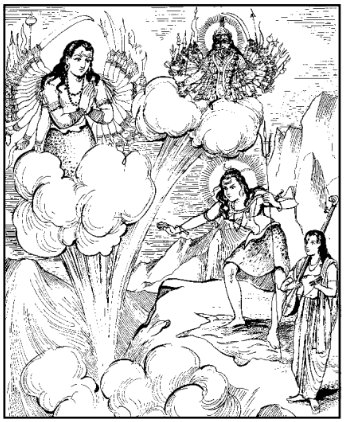
गणोंके मुखसे तथा नारदके द्वारा सतीके दग्ध होनेका समाचार प्राप्त हुआ, जिसे सुनकर भगवान् शंकर अत्यधिक कुपित हो गये। शिवने अपनी जटासे वीरभद्र और महाकालीको प्रकट करके उन्हें यज्ञको विध्वंस करनेकी तथा विरोधियोंको जला डालनेकी आज्ञा प्रदान की। दक्ष–यज्ञ–विध्वंसके लिये वीरभद्र एवं महाकालीने प्रस्थान किया। उधर दक्षके यज्ञमण्डपमें यज्ञ–विध्वंसकी सूचना देनेवाले त्रिविध उत्पात प्रकट होने लगे। बहुत–से भयानक अपशकुन होने लगे। इसी बीच आकाशवाणी हुई–ओ दक्ष! तू महामूढ़ और पापात्मा है, भगवान् हरकी ओरसे तुझे महान् दुःख प्राप्त होगा। जो मूढ़ देवता आदि तेरे यज्ञमें स्थित हैं, उनको भी महान् दुःख होगा। आकाशवाणीकी यह बात सुनकर और अशुभ–सूचक लक्षणोंको देखकर दक्ष तथा देवता आदिको भी अत्यन्त भय प्राप्त हुआ। दक्षने अपने यज्ञकी रक्षाके लिये भगवान् विष्णुसे अत्यन्त दीन होकर प्रार्थना की। भगवान् विष्णुने भी कई प्रकारसे दक्षको समझाते हुए शिवकी
महिमाका वर्णन किया।
इस बीच शिवगणोंके साथ वीरभद्रके वहाँ पहुँचनेपर घोर युद्ध प्रारम्भ हो गया। विष्णु और देवतागण थोड़ी देरमें वहाँसे अन्तर्धान हो गये। वीरभद्रने अपने दोनों हाथोंसे दक्षकी गर्दन मरोड़कर तोड़ डाली और सिरको अग्निकुण्डमें डाल दिया। इसके अतिरिक्त वहाँ जो भी देवगण थे, वे भी घायल हो गये।
वे वीरभद्र दक्ष और उनके यज्ञका विनाश करके कृतकार्य हो तुरन्त कैलास पर्वतपर चले गये। कार्यको पूर्ण किये हुए वीरभद्रको देखकर परमेश्वर शिवजी मन–ही–मन प्रसन्न हुए और उन्होंने वीरभद्रको गणोंका अध्यक्ष बना दिया।
शिवके अनुग्रहसे दक्षका जीवित होना और यज्ञकी पूर्णता
नारदजीने ब्रह्माजीसे पूछा–हे तात! पराक्रमी वीरभद्र जब दक्षके यज्ञका विनाश करके कैलास पर्वत चले गये तब क्या हुआ? इसके उत्तरमें ब्रह्माजीने कहा–समस्त देवताओं और मुनियोंने छिन्न–भिन्न अंगोंवाले होकर मेरे पास आकर पूर्ण रूपसे अपने क्लेशको बताया। उनकी बात सुनकर मैं व्यथित हो गया। तदनन्तर देवताओं और मुनियोंके साथ मैं विष्णुलोक गया। वहाँ मैंने भगवान् विष्णुकी स्तुति करते हुए अपने दुःखका वर्णन किया तथा भगवान् श्रीहरिसे प्रार्थना की कि हे देव! जिस तरह भी यज्ञ पूर्ण हो, यज्ञकर्ता दक्ष जीवित हों तथा समस्त देवता और मुनि सुखी हो जायेँ, आप वैसा कीजिये । देवता और मुनि लोग आपकी शरणमें आये हैं। भगवान् विष्णु बोले–हे विधे! समस्त देवता शिवके अपराधी हैं; क्योंकि इन सबने उनको यज्ञका भाग नहीं दिया। अब आप सभी लोग शुद्ध हृदयसे भगवान् शिवके चरणोंमें गिरकर उन्हें प्रसन्न कीजिये।
इसके अनन्तर विष्णु आदि सभी देवताओंने कैलास पर्वतपर विराजमान वटवृक्षके नीचे बैठे हुए भगवान् शिवजीका दर्शन किया तथा सभी देवताओंने भगवान् शिवके चरणों में प्रणाम किया। भगवान् शंकरकी विशेषरूपसे प्रार्थना करते हुए देवताओंने कहा–हे करुणानिधान! आप हम लोगोंकी रक्षा कीजिये। आप प्रसन्न होकर दक्षकी यज्ञशालाकी ओर चलें। उनकी प्रार्थनासे प्रसन्न होकर भगवान् शम्भु विष्णु आदि देवताओंके साथ कनखलमें स्थित प्रजापति दक्षकी यज्ञशालामें गये। वहाँ वीरभद्रद्वारा किया गया यज्ञका विध्वंस रुद्रने देखा।
यज्ञकी वैसी दुरवस्था देखकर भगवान् शंकरने वीरभद्रको बुलाकर कहा–हे महाबाहो! तुमने थोड़ी ही देरमें देवताओं तथा ऋषियों आदिको बड़ा भारी दण्ड दे दिया। जिसने विलक्षण यज्ञका आयोजनकर यह द्रोहपूर्ण कार्य किया, उस दक्षको तुम शीघ्र यहाँ ले आओ । वीरभद्रने शीघ्रतापूर्वक दक्षका धड़ लाकर शम्भुके समक्ष रख दिया। भगवान् शंकरने वीरभद्रसे पूछा–दक्षका सिर कहाँ है? वीरभद्रने कहा–हे शंकर! मैंने तो उसी समय दक्षके सिरको यज्ञकुण्डमें हवन कर दिया।
तदनन्तर शम्भुके आदेशसे प्रजापति दक्षके धड़के साथ सवनीय पशु–बकरेका सिर जोड़ दिया गया। उस सिरके जुड़ जाते ही शम्भुकी कृपादृष्टि पड़नेसे प्रजापति दक्ष तत्क्षण जीवित हो गये। शिवजीके दर्शनसे तत्काल उनका अन्तःकरण निर्मल हो गया। तदनन्तर लज्जित होकर वे भगवान् शंकरकी स्तुति करते हुए बोले–हे महादेव! आपको नमस्कार है, मुझपर कृपा कीजिये। आप मेरे अपराधको क्षमा कीजिये। दक्षप्रजापतिकी स्तुतिसे प्रसन्न होकर महादेवजी बोले–हे दक्ष! मैं प्रसन्न हूँ, यद्यपि मैं सबका ईश्वर हूँ और स्वतन्त्र हूँ, फिर भी सदा भक्तोंके अधीन रहता हूँ। केवल कर्मके वशीभूत मूढ़ मानव न वेदोंसे, न यज्ञोंसे, न दानोंसे और न तपस्यासे ही मुझे पा सकते हैं, तुम केवल कर्मके द्वारा ही संसारको पार करना चाहते थे, इसीलिये रुष्ट होकर मैंने इस यज्ञका विनाश किया है। अतः हे दक्ष! आजसे तुम बुद्धिके द्वारा मुझे परमेश्वर मानकर ज्ञानका आश्रय लेकर सावधान होकर कर्म करो। यदि कोई विष्णुभक्त मेरी निन्दा करेगा और मेरा भक्त विष्णुकी निन्दा करेगा तो आपको दिये हुए समस्त शाप उन्हीं दोनोंको प्राप्त होंगे और निश्चय ही उन्हें तत्त्वज्ञानकी प्राप्ति नहीं होगी।
हे मुने! उसके बाद भगवान् शिवकी आज्ञा प्राप्तकर प्रसन्नचित्त शिवभक्त दक्षने शिवजीकी कृपासे यज्ञ पूरा किया। तदनन्तर सब देवता और ऋषि सन्तुष्ट होकर अपने–अपने स्थानको चले गये।
भगवान् शंकरकी महिमा अनन्त है, जिसे बड़े–बड़े विद्वान् भी जाननेमें असमर्थ हैं, किंतु भक्त लोग उनकी कृपासे बिना श्रमके ही उत्तम भक्तिके द्वारा उसे जान लेते हैं।
हे नारद! इस प्रकार मैंने आपसे सतीके परम अद्भुत चरितका वर्णन किया, जो भोग–मोक्षको देनेवाला तथा सभी कामनाओंको पूर्ण करनेवाला है।
इस प्रकार रुद्रसंहिताका सतीखण्ड पूर्ण हुआ।
रुद्रसंहिता (पार्वतीखण्ड)
पार्वतीखण्डके प्रथम अध्यायमें पितरोंकी कन्या मेनाके साथ हिमालयके विवाहका वर्णन हुआ है। देवताओंके आग्रह करनेपर पितरोंने अपनी कन्या मेनाका विवाह विधिपूर्वक हिमालयके साथ कर दिया।
पितरोंकी तीन कन्याओंका वृत्तान्त
ब्रह्माजीके पुत्र दक्षको साठ कन्याएँ हुईं, उनमेंसे एक स्वधा नामकी कन्याका विवाह उन्होंने पितरोंके साथ कर दिया। स्वधाकी तीन पुत्रियाँ थीं। ये पितरोंकी मानसिक पुत्रियाँ थीं। इनका जन्म माताके गर्भसे नहीं, उनके मनसे हुआ था। ये तीनों बहनें भगवान् विष्णुके निवास–स्थान श्वेतद्वीपमें उनका दर्शन करनेके लिये गयीं। वहाँ उनका दर्शनकर वे वहीं ठहर गयीं। उसी समय ब्रह्माजीके पुत्र सनत्कुमार वहाँ पहुँच गये। वहाँ उपस्थित सभीने खड़े होकर सनत्कुमारका स्वागत किया, परंतु ये तीनों बहनें बैठी रह गयीं। इससे नाराज होकर सनत्कुमारने इन तीनोंको शाप दे दिया। बादमें तीनोंद्वारा स्तुति करनेपर सनत्कुमारने प्रसन्न होकर वरदान भी दिया और कहा कि तुम तीनोंमें ज्येष्ठ कन्या मेना हिमालयकी पत्नी बनेगी, जिससे पार्वतीका जन्म होगा। दूसरी धन्या नामवाली कन्या राजा जनककी पत्नी होगी, जिससे सीताका जन्म होगा। तीसरी कन्या कलावती वृषभानकी पत्नी होगी, जिससे ‘राधा’ नामकी कन्याका जन्म होगा। पार्वती भगवान् शिवकी पत्नी बनेंगी, सीता भगवान् रामकी पत्नी बनेंगी और राधा भगवान् कृष्णको प्राप्त करेंगी। इस प्रकार शापके ब्याजसे दुर्लभ वरदान देकर सनत्कुमारमुनि भाइयोंसहित अन्तर्धान हो गये।
ब्रह्माजी नारदजीसे कहते हैं–हे नारद! मेनाके साथ हिमालयका विवाह होनेके अनन्तर श्रीविष्णु आदि समस्त देवता और महात्मा मुनिगण गिरिराज हिमालयके पास गये तथा हिमालयको जगदम्बा भगवती सतीके दक्ष–यज्ञमें शरीर त्यागनेकी कथा सुनायी और निवेदन किया कि यदि वे सती पुनः तुम्हारे घरमें प्रकट हो जायेँ तो देवताओंका महान् लाभ हो सकता है। देवताओंकी यह बात सुनकर गिरिराज हिमालय मन–ही–मन प्रसन्न होकर बोले–प्रभो! ऐसा हो तो बड़े सौभाग्यकी बात है। तदनन्तर वे देवता उन्हें बड़े आदरसे उमाको प्रसन्न करनेकी विधि बताकर स्वयं भगवती उमाकी शरणमें गये और श्रद्धापूर्वक उनकी स्तुति करने लगे।
देवताओंके इस प्रकार स्तुति करनेपर जगज्जननी देवी दुर्गा उनके सामने प्रकट हो गयीं। देवताओंने निवेदन किया–भगवती शिवे! आप भूतलपर अवतीर्ण होकर पुनः रुद्रदेवकी पत्नी बनें और यथायोग्य ऐसी लीला करें, जिससे देवताओंका मनोरथ पूर्ण हो जाय। हे देवी! इससे कैलास पर्वतपर निवास करनेवाले रुद्रदेव भी सुखी होंगे। आप ऐसी कृपा करें, जिससे सब सुखी हो जायँ और सबका सारा दुःख नष्ट हो जाय। भक्तवत्सला दयामयी उमादेवी विष्णु आदि सभी देवताओंको सम्बोधित करके प्रसन्नतापूर्वक बोलीं–हे देवताओ तथा मुनियो! आप सब अपने–अपने स्थानको जायेँ, मैं अवतार लेकर मेनाकी पुत्री होकर रुद्रदेवकी पत्नी बनूँगी–यह मेरा अत्यन्त गुप्त मत है। यह कहकर जगदम्बा अदृश्य हो गयीं और तुरन्त अपने लोकमें चली गयीं।
जगदम्बाका मेना एवं हिमाचलको वरदान
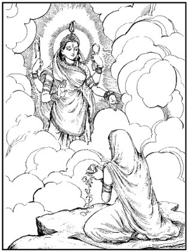
इधर गिरिराज हिमाचल एवं मेना–दोनों दम्पतीने भगवती जगदम्बाको प्रसन्न करनेके लिये तपस्या आरम्भ की। उनकी तपस्यासे प्रसन्न होकर भगवती उमादेवीने प्रत्यक्ष दर्शन देकर प्रसन्नतापूर्वक मेनासे मनोभिलषित वर माँगनेका आग्रह किया। मेनाने कहा–जगदम्बिके! यदि मैं वर पानेके योग्य हूँ तो मुझे सौ पुत्र हों, उन पुत्रों के पश्चात् मेरे एक पुत्री हो। शिवे! आप ही देवताओंका कार्य सिद्ध करनेके लिये मेरी पुत्री तथा रुद्रदेवकी पत्नी बनें और तदनुसार लीला करें। मेनाकी बात सुनकर प्रसन्नहृदया देवीने उनके मनोरथको पूर्ण करनेका वरदान दिया और कहा कि मैं स्वयं तुम्हारे यहाँ पुत्रीके रूपमें उत्पन्न होकर देवताओंका समस्त कार्य सिद्ध करूँगी–ऐसा कहकर जगद्धात्री परमेश्वरी शिवा अदृश्य हो गयीं।
ब्रह्माजी कहते हैं कि हे नारद! तदनन्तर मेना और हिमालय कन्या–प्राप्तिके निमित्त भगवती उमाकी उपासना करने लगे। कुछ समय बाद भगवती जगदम्बा जन्म लेकर मेनाके समक्ष अपने स्वरूपमें प्रकट हो गयीं। उसी क्षण विष्णु आदि सब देवता वहाँ आये और जगदम्बाका दर्शनकर उन्होंने उनका स्तवन किया। जब देवता लोग स्तुति करके चले गये तो देवीके उस दिव्य रूपका दर्शन करके मेनाको ज्ञान प्राप्त हो गया। मेनाने प्रार्थना की कि हे महेश्वरी! आप कृपा करें, इसी रूपमें मेरे ध्यानमें स्थित हो जायँ। साथ ही मेरी पुत्रीके अनुरूप प्रत्यक्ष दर्शनीय रूप धारण करें।
ब्रह्माजी कहते हैं–नारद! मेनाके समक्ष वह कन्या लौकिक गतिका आश्रय लेकर रोने लगी। उसका मनोहर रुदन सुनकर सब लोग प्रसन्न होकर उसके पास पहुँच गये। देवी शिवा दिनोंदिन आनन्दपूर्वक बढ़ने लगीं।
देवर्षि नारदद्वारा बालिका पार्वतीके भविष्यकी बात बताना
एक समयकी बात है, नारदजी हिमाचलके घर गये। गिरिराज हिमालयने उन्हें प्रणाम करके उनकी पूजा की और अपनी पुत्रीको बुलाकर उनके चरणोंमें प्रणाम कराया तथा नारदजीसे निवेदन किया कि मेरी पुत्रीकी जन्म–कुण्डलीमें जो गुण–दोष हों, उन्हें बताइये? मेरी बेटी किसकी सौभाग्यवती प्रिय पत्नी होगी? नारदजीने शिवाकी हस्तरेखा देखकर बताया–शैलराज और मेना! यह कन्या समस्त शुभ लक्षणोंसे युक्त है। अपने पतिके लिये सुखदायिनी और माता–पिताकी कीर्ति बढ़ानेवाली होगी। हे गिरिराज! तुम्हारी पुत्रीके हाथमें सब उत्तम लक्षण ही विद्यमान हैं, केवल एक रेखा विलक्षण है, जिसके अनुसार इसका पति ऐसा होगा, जो योगी, नंग–धड़ंग रहनेवाला, निर्गुण और निष्काम होगा। उसके न माँ होगी न बाप। उसको मान–सम्मानका भी कोई ख्याल नहीं रहेगा और वह सदा अमंगल वेष धारण करेगा। नारदकी इन बातोंको सुनकर मेना और हिमाचल–दोनों अत्यन्त दुखित हुए, परंतु जगदम्बा शिवा नारदके वचनको सुनकर अपने भावी पतिको शिव मानकर मन–ही–मन हर्षसे खिल उठीं।
हिमवान्ने कहा–मुने! मैं अपनी पुत्रीको उससे बचानेके लिये क्या उपाय करूँ? नारदजीने उन्हें सब प्रकारसे सान्त्वना दी और कहा कि ये सारे लक्षण भगवान् शिवमें घटते हैं, तुम्हें यह कन्या भगवान् शंकरके सिवा दूसरे किसीको नहीं देनी चाहिये। नारदने गिरिराजको शिवकी पूर्वपत्नी सतीका आख्यान सुनाया और कहा कि सती ही फिर तुम्हारे घरमें उत्पन्न हुई हैं। तुम्हारी पुत्री साक्षात् जगदम्बा शिवा है। यह पार्वती भगवान् हरकी पत्नी होगी, इसमें संशय नहीं है।
कुछ समय व्यतीत होनेपर मेनाने हिमवान्से पार्वतीके लिये सुन्दर वर खोजनेका अनुरोध किया। हिमवान्ने मेनाको समझाया कि शिव ही पार्वतीके लिये योग्य वर हैं, परंतु उन्हें प्राप्त करनेके लिये पार्वतीको तपस्या करनेकी प्रेरणा देनी चाहिये। हिमवान्की बातसे सन्तुष्ट होकर मेना पार्वतीके पास गयीं, परंतु वह तपस्याकी बात पार्वतीसे कहनेमें संकोच करने लगीं। उसी समय पार्वतीने स्वयं अपने एक स्वप्नकी बात मातासे बतायी और कहा कि आज स्वनमें एक दयालु तपस्वी ब्राह्मणने मुझे शिवको प्राप्त करनेके लिये उत्तम तपस्या करनेका उपदेश दिया है। यह सुनकर मेनकाने वहाँ शीघ्र अपने पतिको बुलाकर पुत्रीके देखे हुए उस स्वप्नको बताया। यह सुनकर गिरिराज बड़े प्रसन्न हुए।
हिमवान्द्वारा पुत्री पार्वतीको शिवकी सेवामें रखना
ब्रह्माजी बोले–हिमालयकी वह लोकपूजित पुत्री पार्वती उनके घरमें बढ़ती हुई आठ वर्षकी हो गयी। उसी समय शम्भुने अपने मनको एकाग्र करनेके लिये हिमालयके गंगावतार नामक उत्तम शिखरपर तपस्या आरम्भ की। तदनन्तर गिरिराज हर्षित होकर अपनी पुत्रीके साथ भगवान् हरके समीप गये और शम्भुसे प्रार्थना की कि मेरी पुत्री आपकी सेवा करनेके लिये बड़ी उत्सुक है, अतः आप अपनी सेवाके लिये इसे आज्ञा दीजिये।
शम्भु बोले–हे शैलराज! वेदोंके पारगामी विद्वानोंने स्त्रीको मायारूपा कहा है, उसमें भी विशेष रूपसे युवती स्त्री तो तपस्वियोंके लिये विघ्नकारिणी होती है। उनके संगसे शीघ्र ही विषयवासना उत्पन्न हो जाती है, वैराग्य नष्ट हो जाता है। अतः हे शैल! तपस्वियोंको स्त्रियोंका संग नहीं करना चाहिये।
ब्रह्माजी बोले–हे देवर्षे! उन शम्भुका यह स्पृहारहित निष्ठुर वचन सुनकर हिमालय विस्मयमें पड़ गये। अपने पिता गिरिराजको आश्चर्यमें पड़ा देखकर भवानीने शिवजीको प्रणामकर उनसे कहा–हे शम्भो! आप तपकी शक्तिसे सम्पन्न होकर ही महातपस्या कर रहे हैं। सभी कर्मोंको करनेवाली उस शक्तिको ही प्रकृति जानना चाहिये, उसीके द्वारा सबका सृजन, पालन और संहार होता है। हे शंकर! यदि आप प्रकृतिसे परे हैं तो मेरे समीप रहनेपर भी आपको डरना नहीं चाहिये।
पार्वतीके वचनोंसे प्रभावित होकर भगवान् शंकरने हिमालयकी पुत्रीको अपने पास रहकर सेवा करनेके लिये स्वीकार कर लिया। भगवती पार्वती शिवकी सेवामें पूर्णरूपसे तत्पर हो गयीं तथा महायोगीश्वर भगवान् शिव शीघ्र ही अपने ध्यानमें निमग्न हो गये।
तारकासुरका आख्यान
उसी समय महापराक्रमी तारकासुरसे अत्यन्त पीड़ित इन्द्र आदि देवताओं तथा मुनियोंने उन रुद्रके साथ भगवती कालीका कामभावसे योग करानेके लिये ब्रह्माजीकी आज्ञासे कामदेवको आदरपूर्वक वहाँ भेजा। कामदेवने वहाँ जाकर अपने समस्त उपाय लगाये, परंतु शिव कुछ भी विक्षुब्ध नहीं हुए और उन्होंने उसे भस्म कर दिया।
आगेके अध्यायों में नारदजी के पूछनेपर ब्रह्माजी तारकासुरकी उत्पत्ति तथा शंकरजीद्वारा कामदेवको भस्म करने एवं अनुग्रह करनेकी कथाका विस्तारसे वर्णन करते हैं, जिसका संक्षेप इस प्रकार है–कश्यपकी सबसे बड़ी पत्नी दिति थी, उसके दो पुत्र हिरण्याक्ष एवं हिरण्यकशिपु हुए।
भगवान् विष्णुने वराह एवं नरसिंहरूप धारणकर उन दोनोंका वध किया। तत्पश्चात् देवगण निर्भय एवं सुखी रहने लगे। इससे दिति दुखी हुई और वह कश्यपकी शरणमें गयी तथा उनकी सेवाकर पुनः गर्भ धारण किया। देवराज इन्द्रने अवसर पाकर उसके गर्भमें प्रविष्ट होकर उसके गर्भके टुकड़े–टुकड़े कर दिये। उसके गर्भसे उनचास पुत्र उत्पन्न हुए। वे सभी पुत्र मरुत् नामके देवता हुए और स्वर्गको चले गये। दितिने पुनः तपस्याकर गर्भ धारण किया और देवताओंके समान बलवान् वज्रांग नामके पुत्रको जन्म दिया। वह जन्मसे महाप्रतापी और बलवान् था। वरांगी इसकी पत्नी थी। इनसे एक महाप्रतापी असुरका जन्म हुआ, जिसका नाम तारकासुर रखा गया। तारकासुरने अपनी मातासे आज्ञा प्राप्तकर घोर तपस्या प्रारम्भ कर दी। उसकी तपस्यासे प्रसन्न होकर ब्रह्माजी वर देनेको प्रकट हुए। तारकासुरने ब्रह्माजीसे वर माँगते हुए कहा–हे महाप्रभु! आपके बनाये हुए इस समस्त लोकमें कोई भी पुरुष मेरे समान बलवान् न हो और शिवजीके वीर्यसे उत्पन्न हुआ पुत्र देवताओंका सेनापति बनकर जब मेरे ऊपर शस्त्र–प्रहार करे तब मेरी मृत्यु हो। इसके अनन्तर वह दुरात्मा असुर तीनों लोकों को अपने अधीनकर स्वयं इन्द्र बन बैठा। उससे पीड़ित हुए समस्त इन्द्र आदि देवगण अनाथ तथा अत्यन्त व्याकुल होकर ब्रह्मके पास आये। ब्रह्माजीसे प्रार्थनाकर उन्हें अपना कष्ट सुनाया। ब्रह्माजीने कहा–हे देवताओ! मेरे वरदानसे ही वह असुर इतना बलवान् हुआ है, अब उसे मारनेका एक ही उपाय है कि हिमवान्की पुत्री पार्वतीसे भगवान् शंकरका विवाह सम्पन्न हो जाय।
भगवान् शंकर तपस्यामें लीन हैं, किसी प्रकार उनकी तपस्या भंग हो जाय एवं वे सकाम होकर शिवाकी अभिलाषा करें, ऐसा उपाय करना चाहिये।
कामदहन
तारकासुरसे अत्यन्त पीड़ित हुए इन्द्रने कामदेवका स्मरण किया तथा उससे मित्रवत् निवेदन किया–हे काम! इस प्रकारका उपाय करना चाहिये, जिससे कि चित्तको वशमें रखनेवाले शिवकी अभिरुचि पार्वतीमें हो जाय। कामदेवने इन्द्रके वचनको स्वीकार करते हुए उन्हें पूरी तरह आश्वस्त किया। इसके अनन्तर वह अपनी पत्नी रति तथा मित्र वसन्तको साथ लेकर शिवजीके पास पहुँच गया। कामदेवने भगवान् शंकरपर अपने सभी अमोघ अस्त्रोंका प्रयोग किया, परंतु भगवान् शिवपर उसके अस्त्रोंका कोई प्रभाव नहीं पड़ा और उनके ललाटके मध्य भागमें स्थित तीसरे नेत्रसे क्रोधाग्नि प्रकट हुई, जिससे कामदेव जलकर भस्म हो गया। कामदेवके भस्म हो जानेपर रति अत्यन्त दुखी होकर विलाप करने लगी। रतिका दुःख देखकर देवतागण भगवान् शिवसे अत्यन्त कातर होकर उसका दुःख दूर करनेकी प्रार्थना करने लगे। देवताओंकी प्रार्थनासे प्रसन्न होकर शिवजीने वरदान देते हुए कहा–रतिका शक्तिशाली पति तभीतक अनंग रहेगा, जबतक श्रीकृष्णका धरतीपर अवतार नहीं हो जाता।
श्रीकृष्णके द्वारा रुक्मिणीके गर्भसे प्रद्युम्न नामका पुत्र होगा, वही कामके रूपमें रतिका पति बनेगा। इस प्रकार कहकर रुद्रदेव अन्तर्धान हो गये और सभी देवता भी प्रसन्न हो गये।
कामदेवको भस्म करके महादेवजीके अन्तर्धान हो जानेपर उनके विरहसे पार्वती अत्यन्त व्याकुल हो गयीं। उन्हें कहीं भी शान्ति नहीं मिल रही थी। पिताके घर जाकर जब वे अपनी मातासे मिलीं, उस समय पार्वतीने अपना नया जन्म हुआ माना।
नारदजीद्वारा पार्वतीको पंचाक्षरमन्त्रका उपदेश
एक दिन इन्द्रकी प्रेरणासे इच्छानुसार घूमते हुए नारदजी हिमालय पर्वतपर पहुँचे। हिमवान्ने उनका सत्कार किया और अपनी कन्याके चरित्रका पूरा वर्णन सुनाया। नारदजी गिरिराजसे ‘भगवान् शिवका भजन करो’–ऐसा कहकर वहाँसे विदा हुए। वहाँसे वे भगवती कालीके पास आ गये और उन्हें सम्बोधित करके उनके लिये हितकारी वचन कहने लगे–‘हे शिवे! तुम्हारे स्वामी महेश्वर विरक्त और महायोगी हैं। उन्होंने कामदेवको जलाकर तुम्हें सकुशल छोड़ दिया है। इसलिये तुम उत्तम तपस्यामें निरत हो चिरकालतक महेश्वरकी आराधना करो। तपस्याके द्वारा संस्कारयुक्त हो जानेपर रुद्रदेव तुम्हें अपनी भार्या अवश्य बनायेंगे और तुम भी कभी कल्याणकारी शम्भुका परित्याग नहीं करोगी।’
शिवाने नारदजीसे कहा– ‘हे मुने! रुद्रदेवकी आराधनाके लिये मुझे किसी मन्त्रका उपदेश कीजिये।
ब्रह्माजी बोले–रे नारद! पार्वतीका यह वचन सुनकर आपने पंचाक्षर मन्त्र (नमः शिवाय) –का उन्हें विधिपूर्वक उपदेश देते हुए कहा–यह मन्त्रराज सब मन्त्रोंका राजा, मनोवांछित फल प्रदान करनेवाला, शंकरको बहुत ही प्रिय तथा साधकको भोग और मोक्ष देनेवाला है। हे शिवे! नियमों में तत्पर रहकर उनके स्वरूपका चिन्तन करती हुई तुम पंचाक्षर मन्त्रका जप करो, इससे शिवजी शीघ्र ही सन्तुष्ट होंगे। अपने माता–पितासे किसी प्रकार आज्ञा प्राप्तकर भगवती पार्वती तपस्यामें संलग्न हो गयीं और पंचाक्षर मन्त्रके जपमें रत होकर तप करती हुई वे भगवान् शंकरका ध्यान करने लगीं। इस प्रकार तप और महेश्वरका चिन्तन करती हुई उन कालीने तीन हजार वर्ष उस तपोवनमें बिता दिये। उनकी कठोर तपस्यासे यह सम्पूर्ण चराचर जगत् संतप्त होने लगा। देवतागणोंने ब्रह्माजीके पास पहुँचकर निवेदन किया–हे विभो! इस समय यह सारी सृष्टि क्यों जल रही है–इसका कारण ज्ञात नहीं हो पा रहा है।
ब्रह्माजी कहते हैं–तब मैं भगवान् विष्णुसे निवेदन करनेके लिये उन सभीके साथ शीघ्र ही क्षीरसागर गया और उनसे सारी स्थितिका वर्णन किया।
विष्णुजी बोले–मैंने सारा कारण जान लिया है। आप सब लोग पार्वतीकी तपस्यासे संतप्त हो रहे हैं। अतः मैं आप लोगोंके साथ अभी परमेश्वरके पास चल रहा हूँ।
शंकरद्वारा विवाहकी स्वीकृति
इसके अनन्तर ब्रह्मा एवं विष्णुसहित सभी देवता पार्वतीके तपकी प्रशंसा करते हुए वहाँ गये, जहाँ वृषध्वज महादेव थे। उन सबोंने शिवजीको प्रणामकर उनकी स्तुति की। तब वहाँ नन्दिकेश्वरने भगवान् शिवसे कहा–हे प्रभो! देवता और मुनि संकटमें पड़कर आपकी शरणमें आये हैं। नन्दीके इस प्रकार सूचित करनेपर भगवान् शम्भुने अपने–आप समाधिसे विरत होकर विष्णु, ब्रह्मा एवं देवताओंसे आनेका कारण पूछा।
भगवान् विष्णुने कहा–शम्भो! तारकासुरने देवताओंको महान् कष्ट प्रदान किया है–यही बतानेके लिये सब देवता यहाँ आये हैं। भगवन्! आपके औरस पुत्रसे तारक दैत्य मारा जा सकेगा, और किसी प्रकारसे नहीं। आप कृपाकर गिरिराज हिमवान्की पुत्री गिरिजाका पाणिग्रहण करें।
श्रीविष्णुका यह वचन सुनकर भगवान् शंकरने ब्रह्मा, विष्णु, देवताओं तथा मुनियोंको निष्काम धर्मका उपदेश दिया। तदनन्तर भगवान् शम्भु पुनः ध्यानमें निमग्न हो गये। परमेश्वर शिवको ध्यानमग्न देखकर उन्होंने नन्दीकी सहमति ली। नन्दीने पुनः दीनभावसे स्तुति करनेके लिये कहा। वे सभी देवगण दीनभावसे पुनः स्तुति करने लगे। भगवान् विष्णुने पुनः निवेदन किया–सुखदायक भगवान् शंकर! हम सब देवताओंको तारकासुरसे अनेक प्रकारका कष्ट प्राप्त हो रहा है। आपके लिये ही देवताओंने गिरिराज हिमालयसे शिवाकी उत्पत्ति करायी है। शिवाके गर्भसे आपके द्वारा जो पुत्र उत्पन्न होगा, उसीसे तारकासुरकी मृत्यु होगी, दूसरे किसी उपायसे नहीं। नारदजीकी आज्ञासे पार्वती कठोर तपस्या कर रही हैं। उनके तेजसे समस्त त्रिलोकी आच्छादित हो गयी है। इसलिये परमेश्वर! शिवाको स्वीकारकर सबका दुःख मिटाइये। शंकर! मेरे तथा देवताओंके हृदयमें आपके विवाहका उत्सव देखनेके लिये बड़ा भारी उत्साह है। अतः आप यथोचित रीतिसे विवाह कीजिये।
ब्रह्माजी कहते हैं– नारद! ऐसा कहकर उन्हें प्रणाम करके विष्णु आदि देवता और महर्षियोंने पुनः उनकी स्तुति की। भक्तोंके अधीन रहनेवाले भगवान् शंकरने विवाहका तर्क और युक्तिपूर्वक निषेध वचन कहा, परंतु साथ ही यह भी कहा कि जब–जब भक्तोंपर कहीं कोई विपत्ति आती है, तब मैं तत्काल उनके सारे कष्ट हर लेता हूँ। तारकासुरसे तुम सब लोगोंको जो दुःख प्राप्त हुआ है, उसे मैं जानता हूँ। उसका मैं निवारण करूँगा। यद्यपि मेरे मनमें विवाह करनेकी कोई रुचि नहीं है तथापि मैं पुत्रोत्पादनके लिये गिरिजाके साथ विवाह करूँगा। तुम सब देवता अब निर्भय होकर अपने–अपने घर जाओ। मैं तुम्हारा कार्य सिद्ध करूँगा।
सप्तर्षियों द्वारा पार्वतीके तपकी परीक्षा
देवताओंके चले जानेपर पार्वतीके तपकी परीक्षाके लिये भगवान् शंकर समाधिस्थ हो गये। उन दिनों पार्वती देवी बड़ी भारी तपस्या कर रही थीं, उस तपस्यासे रुद्रदेव भी बड़े विस्मयमें पड़ गये। भक्ताधीन होनेके कारण वे समाधिसे विचलित हो गये। सृष्टिकर्ता हरने वसिष्ठादि सप्तर्षियोंका स्मरण किया। उनके स्मरण करते ही वे सातों ऋषि वहाँ शीघ्र ही आ पहुँचे। भगवान् शिवने प्रसन्नतापूर्वक कहा–गिरिराजकुमारी देवेश्वरी पार्वती इस समय गौरीशिखर नामक पर्वतपर तपस्या कर रही हैं, मुझे पतिरूपमें प्राप्त करना ही उनकी तपस्याका उद्देश्य है। मुनीश्वरो! तुम लोग मेरी आज्ञासे वहाँ जाओ और उनकी दृढ़ताकी परीक्षा करो। भगवान् शंकरकी यह आज्ञा पाकर वे सातों ऋषि तुरन्त ही उस स्थानपर जा पहुँचे, जहाँ पार्वती तपस्या कर रही थीं। सप्तर्षियोंद्वारा तपस्याका कारण पूछनेपर पार्वतीने संकोचपूर्वक बताया कि वे भगवान् सदाशिवको पतिरूपमें चाहती हैं। नारदजीके आज्ञानुसार वे उन्हें प्राप्त करनेके लिये कठोर तप कर रही हैं।
नारदजीका नाम सुनकर वे सप्तर्षि छलपूर्वक मिथ्या वचन कहने लगे । पहले उन्होंने नारदकी निन्दा की और कई प्रकारके उदाहरण देकर कहा कि नारदने आजतक किसीका घर नहीं बसाया, वह तो घर फोड़नेवाला है। इसके अनन्तर भगवान् शिवके अमंगल वेश आदिका वर्णन करते हुए पार्वतीको उनसे विरत करनेका प्रयास किया और विष्णुकी प्रशंसा करते हुए उनसे विवाह करनेका प्रस्ताव रखा, परंतु पार्वतीने इसे स्वीकार नहीं किया। शिवकी महिमाका वर्णन करते हुए वे बोलीं–शिव परब्रह्म एवं विकाररहित हैं। वे भक्तों के लिये ही शरीर धारण करते हैं। वे सदाशिव प्रभु निर्गुण, मायारहित एवं विराट् हैं। हे ब्राह्मणों! यदि शंकर मेरे साथ विवाह नहीं करेंगे तो मैं सर्वदा अविवाहित रहूँगी। यह कहकर और उन मुनियोंको प्रणाम करके वे पार्वती मौन हो गयीं।
तदनन्तर ऋषियोंने भी पार्वतीका दृढ़ निश्चय जानकर उनकी जय–जयकार की और उन्हें उत्तम आशीर्वाद प्रदान किया। इसके अनन्तर वे ऋषिगण शिवलोक पहुँचकर भगवान् सदाशिवको सम्पूर्ण वृत्तान्त निवेदनकर अपने–अपने लोकको चले गये।
शंकरद्वारा वृद्धब्राह्मणके रूपमें पार्वतीकी परीक्षा
उन सप्तर्षियोंके चले जानेपर प्रभु शिवने स्वयं पार्वतीके तपकी परीक्षा लेनेकी इच्छा की। वे एक बूढ़े ब्राह्मण ब्रह्मचारीका वेश धारणकर तपस्यामें रत भगवती पार्वतीके पास पहुँचे। उन्होंने पार्वतीसे पूछा–तुम कौन हो और किसकी कन्या हो? इस निर्जन वनमें रहकर इतनी कठिन तपस्या क्यों कर रही हो? पार्वतीने अपना परिचय देते हुए ब्रह्मचारीको अपना पूर्ण वृत्तान्त सुनाया तथा कहा कि बहुत समयतक कठोर तपस्या करनेके बाद भी मुझे मेरे प्राणवल्लभ सदाशिव प्राप्त नहीं हुए, इस कारण अब मैं अग्निमें प्रवेश करूँगी। इस प्रकार कहकर पार्वतीजी ब्रह्मचारीद्वारा निषेध करनेपर भी अग्निमें प्रवेश कर गयीं, परंतु उसी समय अग्नि चन्दनके समान शीतल हो गयी।
ब्रह्मचारीने पार्वतीसे फिर पूछा–तुम अपनी तपस्याका कारण सत्य–सत्य बताओ? पार्वतीजीने कहा–मैंने मन, वचन और कर्मसे शंकरजीको ही पतिभावसे वरण किया है। मनकी उत्सुकतावश मैं यह कठोर तप कर रही हूँ।
उस ब्राह्मण ब्रह्मचारीने पार्वतीकी बात सुनकर भगवान् शंकरकी घोर निन्दा करनी प्रारम्भ कर दी। शंकरको अवगुणोंकी खान सिद्ध करनेका प्रयास करते हुए पार्वतीको उनसे विरत होनेका बार–बार परामर्श दिया।
उस ब्राह्मणके इस प्रकारके वचन सुनकर पार्वती कुपित मनसे शिवनिन्दक ब्राह्मणसे बोलीं–आप ब्रह्मचारीका रूप धारणकर मुझे छलना चाहते हैं, इसीलिये कुतर्कसे भरी हुई बातें मुझसे कह रहे हैं। वे सदाशिव निर्गुण ब्रह्म हैं और कारणवश सगुण हो जाते हैं। जो सात जन्मोंका दरिद्र हो तो वह भी यदि शंकरकी सेवा करे तो उसे लोकमें स्थिर रहनेवाली लक्ष्मीकी प्राप्ति होती है। जो पुरुष शिवतत्त्वको न जानकर शिवकी निन्दा करता है, उसका जीवनपर्यन्त संचित किया हुआ पुण्य भस्म हो जाता है। वे सज्जनोंके प्रिय, निर्विकारी प्रभु मेरे तो सर्वस्व हैं और मुझे अत्यन्त प्रिय हैं। उन महात्मा सदाशिवकी ब्रह्मा, विष्णु भी किसी प्रकार समता नहीं कर सकते।
इस प्रकार कहती हुईं वे गिरिराजपुत्री मौन हो गयीं और निर्विकार चित्तसे शिवजीका ध्यान करने लगीं।
उन शिवने जैसा पार्वती ध्यान कर रही थीं, उसी प्रकारका अत्यन्त सुन्दर रूप धारणकर उन्हें दर्शन दिया और पुनः पार्वतीसे वे शिव कहने लगे–हे दृढ़ मनवाली! मैंने तुम्हारी अनेक प्रकारसे परीक्षा की, मेरे इस अपराधके लिये क्षमा करो। मैंने तुम्हारी –जैसी पतिव्रता सती त्रिलोकमें कहीं नहीं देखी। हे शिवे! मैं सर्वथा तुम्हारे अधीन हूँ, तुम अपनी कामना पूर्ण करो।
भगवान् सदाशिवका वचन सुनकर और उनके परमानन्दकारी रूपका दर्शनकर पार्वतीजी परम आनन्दित हो गयीं। इसके अनन्तर पार्वतीजी अपने घरके लिये प्रस्थान कर गयीं, वहाँ उनका पूर्ण स्वागत हुआ। माता मेनका पार्वतीको पाकर विह्वल हो गयीं। घरमें नित्य गान और उत्सव होने लगे। इसी बीच भगवान् सदाशिव एक नटका रूप धारणकर वहाँ पधारे और अद्भुत लीलाओंका प्रदर्शन किया। मेनका नटकी लीलासे प्रसन्न होकर रत्नोंसे भरपूर उपहार उस नटके लिये लेकर आयीं। उस विलक्षण नटने इसे स्वीकार नहीं किया और इसके बदले शिवाकी याचना की । यह सुनकर मेनका अत्यधिक कुपित हो गयीं और नटको वहाँसे हटानेका प्रयास किया। नटरूपी भगवान् शंकर अपने स्थानपर आ गये।
देवताओंकी प्रेरणासे भगवान् शंकर पुनः वैष्णव–ब्राह्मणके वेशमें हिमवान्के यहाँ पधारे और शिवकी निन्दा करते हुए उनके दोषोंका वर्णन किया। इसे सुनकर मेनका अत्यधिक दुखित हुईं और वे पार्वतीका विवाह शिवसे करनेके लिये किसी प्रकार तैयार नहीं हुईं।
इधर भगवान् शिवको इस बातका पता लगा तो उन्होंने अरुन्धतीसहित सप्तर्षियोंको बुलाया तथा मेनाके पास जाकर उन्हें समझानेकी आज्ञा दी।
अरुन्धतीसहित सप्तर्षियोंने शिवकी आज्ञासे हिमवान्के यहाँ पहुँचकर उन्हें समझानेका प्रयास किया। हिमवान्ने कहा कि एक वैष्णववेशधारी ब्राह्मणने आकर मेनाके समक्ष शिवके दोषोंका वर्णन करते हुए उनकी अत्यधिक निन्दा की। इसे सुनकर मेना नाराज होकर कोपभवनमें चली गयी हैं। सप्तर्षियोंने अरुन्धतीको मेनाके पास भेजा। अरुन्धतीको देखकर मेना उठ खड़ी हुईं। अरुन्धतीने भगवान् सदाशिवकी कई प्रकारसे प्रशंसा करते हुए मेनाको समझाया। अन्ततोगत्वा मेना और हिमवान् भगवान् शिवके साथ पार्वतीका विवाह करनेको राजी हो गये।
शिव–पार्वतीके विवाहकी तैयारी
सप्तर्षियोंने भगवान् शंकरके पास जाकर उन्हें यह समाचार विस्तारपूर्वक सुनाकर अनुरोध किया कि वेदोक्त विधिसे पार्वतीका पाणिग्रहण कीजिये।
उधर हिमवान्ने विवाहकी तैयारियाँ प्रारम्भ कर दीं और विश्वकर्माके द्वारा बरातियोंके लिये कृत्रिम आवासका निर्माण एवं सजावट आदि करायी।
इधर शिवजीके पास लग्नपत्रिका भेजी गयी, जिसे पढ़कर वे अत्यन्त आनन्दित हुए और नारदजीके द्वारा सभी देवताओं, मुनियों, सिद्धोंको तथा अन्य लोगोंको विवाहमें सम्मिलित होनेके लिये निमन्त्रण भेजा। तदनन्तर समस्त देवता, यक्ष, दानव, नाग, पक्षी, अप्सरा आदि विवाह–उत्सवमें सम्मिलित होनेके लिये पधारे।
भगवान् विष्णुके अनुरोध करनेपर भगवान् सदाशिवने पूजन आदिका सब कार्य वेदोक्त विधिसे सम्पन्न किया। तदनन्तर सबके साथ नन्दी आदि अपने सब गणोंको साथ लेकर हिमाचलपुरीकी ओर प्रस्थान कर गये।
शिव–बरातका वर्णन
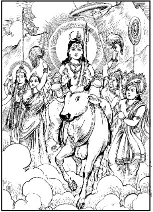
भगवान् शिवकी बरात विलक्षण थी, बरातमें वाहनों पर विराजित खूब सजे–धजे बाजे–गाजेके साथ पताकाएँ फहराते हुए वसु आदि गन्धर्व, मणिग्रीवादि यक्ष, देवराज इन्द्र, भृगु आदि मुनीश्वर, ब्रह्मा तथा भगवान् विष्णु–सबकी टोलियाँ अलग–अलग चल रही थीं। इनमेंसे प्रत्येक दलके स्वामीको देखकर मेना पूछती थीं कि क्या ये ही शिव हैं? नारदजी कहते–ये तो शिवके सेवक हैं। मेना यह सुनकर बड़ी प्रसन्न होतीं और मनमें सोचतीं कि जब उनके सेवक ही इतने सुन्दर हैं तो इनके स्वामी शिव तो पता नहीं कितने सुन्दर होंगे! इसी क्रममें भगवान् रुद्रदेवकी परम अद्भुत सेना भी वहाँ आ पहुँची, जो भूत–प्रेत आदिसे संयुक्त तथा नाना गणोंसे सम्पन्न थी। इनमें किन्हीं के मुँह टेढ़े थे तो कोई अत्यन्त कुरूप दिखायी देते थे, कोई बड़े विकराल थे, कोई लँगड़े थे तो कोई अन्धे। गणोंमेंसे कितनों के तो मुँह नहीं थे तो बहुतों के बहुतेरे मुख थे। इस तरह सभी गण नाना प्रकारकी वेषभूषा धारण किये थे। उन असंख्य भूत–प्रेत आदि गणों को देखकर मेना तत्काल भयसे व्याकुल हो गयीं, उन्हींके बीचमें भगवान् शंकर भी थे। वे वृषभपर सवार थे, उनके पाँच मुख थे, प्रत्येक मुखमें तीन–तीन नेत्र थे और सारे अंगमें विभूति लगी हुई थी। मस्तकपर जटाजूट और चन्द्रमाका मुकुट, आँखें भयानक और आकृति विकराल थी। यह कैसा विकृत दृश्य है, मैं दुराग्रहमें फँसकर मारी गयी–इस प्रकार कहकर मेना उसी क्षण मूर्च्छित हो गयीं। थोड़ी देरमें चेत होनेपर वे क्षुब्ध होकर अत्यन्त विलाप एवं तिरस्कार करने लगीं। उसी समय भगवान् विष्णु भी वहाँ पधारे और उन्होंने अनेक प्रकारसे मेनाको समझाते हुए शिवके महत्त्वका वर्णन किया।
मेनाने शिवके महत्त्वको स्वीकार करते हुए श्रीहरिसे कहा–यदि भगवान् शिव सुन्दर शरीर धारण कर लें तो मैं उन्हें अपनी पुत्री दे सकती हूँ।
ब्रह्माजीने नारदजीसे कहा कि उसी समय तुमने भगवान् विष्णुकी प्रेरणासे भगवान् शंकरके पास जाकर उन्हें स्तोत्रोंद्वारा प्रसन्न किया। तुम्हारी बात सुनकर शम्भुने प्रसन्नतापूर्वक अद्भुत, उत्तम एवं दिव्य रूप धारण कर लिया।
भगवान् शिवका मंगलमय वरवेश
भगवान् शम्भुका वह स्वरूप कामदेवसे भी अधिक सुन्दर और लावण्यका परम आश्रय था। उस स्वरूपका दर्शनकर शैलराजकी पत्नी मेना आश्चर्यचकित हो गयीं। वहाँ उपस्थित सभी पुरवासिनियाँ भगवान् शंकरका वह मनोहर रूप देखकर सम्मोहित हो गयीं। हिमाचलकी पत्नी मेना भी शम्भुकी आरती उतारनेके लिये हाथमें दीपकों से सजी हुई थाली लेकर सभी ऋषिपत्नियों तथा अन्य स्त्रियोंके साथ आदरपूर्वक द्वारपर आयीं। विवाहका सब कार्य विधि–विधानसे सम्पन्न हुआ।
एक ब्राह्मणपत्नीद्वारा पार्वतीको पातिव्रत्यधर्मका उपदेश
सप्तर्षियोंके आग्रह करनेपर मेना पार्वतीको विदा करनेके लिये उद्यत हुईं। उन्होंने विधिपूर्वक वैदिक एवं लौकिक कुलाचारका पालन करते हुए राजोचित श्रृंगारकर पार्वतीको विभूषित किया। तत्पश्चात् मेनाके मनोभावोंको जानकर एक सती साध्वी ब्राह्मणपत्नीने गिरिजाको उत्तम पातिव्रतकी शिक्षा प्रदान की। ब्राह्मणपत्नी बोली–गिरिराजकिशोरी! संसारमें पतिव्रता नारी ही धन्य है। पतिव्रता सब लोकोंको पवित्र करनेवाली और समस्त पापराशिको नष्ट कर देनेवाली है। श्रुतियों और स्मृतियों में पातिव्रतधर्मको महान् बताया गया है। इसको जैसा श्रेष्ठ बताया जाता है, वैसा दूसरा धर्म नहीं है। पातिव्रत धर्मकी शिक्षा यहाँ विस्तारसे दी गयी है।
इसके अनन्तर भगवती शिवाकी विदाईका मार्मिक वर्णन हुआ है। शिवाने समस्त गुरुजनों को, माता–पिताको, पुरोहित और ब्राह्मणों को, भौजाइयों और दूसरी स्त्रियोंको प्रणाम करके यात्रा प्रारम्भ की। सबने शिवाको आशीर्वाद प्रदान किया।
ब्रह्माजी कहते हैं–तात! इस प्रकार मैंने परम मंगलमय शिव–विवाहका वर्णन किया। यह शोकनाशक, आनन्ददायक तथा धन और आयुकी वृद्धि करनेवाला है।
इस प्रकार रुद्रसंहिताका पार्वतीखण्ड पूर्ण हुआ।
रुद्रसंहिता (कुमारखण्ड)
नारदजीने ब्रह्माजीसे पूछा–हे ब्रह्मन्! भगवान् शंकरने पार्वतीसे विवाह करनेके पश्चात् कैलास जाकर क्या किया? उन परमात्मा शिवको किस प्रकार पुत्र उत्पन्न हुआ? तारकासुर–वध किस प्रकार हुआ?
ब्रह्माजीने कहा–शिवजीके कैलास पहुँचते ही वहाँ महान् उत्सव होने लगा। सब देवगण प्रसन्न होकर अपने–अपने स्थानको चले गये। इसके बाद भगवान् शम्भु पार्वतीके साथ देवताओंके वर्ष–परिमाणके अनुसार एक हजार वर्षतक विहार करते रहे।
कुमार कार्तिकेयके जन्मकी कथा
ब्रह्माजीने कथा–प्रसंग सुनाकर कुमारके गंगासे उत्पन्न होने तथा कृत्तिकादि छः स्त्रियोंके द्वारा उनके पाले जाने, उन छहोंकी सन्तुष्टिके लिये उनके छः मुख धारण करने और कृत्तिकाओंके द्वारा पाले जानेके कारण उनका कार्तिकेय नाम होनेकी बात कही। तदनन्तर उनके शंकर–गिरिजाकी सेवामें लाये जानेकी कथा सुनायी। फिर ब्रह्माजीने कहा–भगवान् शंकरने कुमारको गोदमें बैठाकर अत्यन्त स्नेह किया। देवताओंने उन्हें नाना प्रकारके पदार्थ, विद्याएँ, शक्ति तथा अस्त्र–शस्त्र प्रदान किये। पार्वतीके हृदयमें प्रेम समाता नहीं था, उन्होंने हर्षपूर्वक कुमारको उत्तम ऐश्वर्य प्रदान किया, साथ ही चिरंजीवी भी बना दिया।
तारकासुर–संग्राम
इसी बीच देवताओंने भगवान् शंकरसे कहा–प्रभो! तारकासुर कुमारके हाथों ही मारा जानेवाला है, इसलिये ही यह पार्वती–परिणय तथा कुमार–उत्पत्ति आदि उत्तम चरित्र घटित हुआ है। अतः हम लोगोंके हितार्थ उसका काम तमाम करनेके हेतु कुमारको आज्ञा दीजिये। हम लोग आज ही अस्त्र–शस्त्रसे सुसज्जित होकर तारकको मारनेके लिये रणयात्रा करेंगे।
ब्रह्माजी कहते हैं–मुने! यह सुनकर भगवान् शंकरका हृदय दयार्द्र हो गया। उन्होंने उनकी प्रार्थना स्वीकार करके उसी समय तारकका वध करनेके लिये अपने पुत्र कुमारको देवताओंको सौंप दिया। फिर तो शिवजीकी आज्ञा मिल जानेपर ब्रह्मा, विष्णु आदि सभी देवता एकत्र होकर तुरंत ही उस पर्वतसे चल दिये। उस समय श्रीहरि आदि देवताओंके मनमें पूर्ण विश्वास था कि ये तारकासुरका वध अवश्य कर डालेंगे। वे भगवान् शंकरके तेजसे भावित हो कुमारके सेनापतित्वमें तारकका संहार करनेके लिये रणक्षेत्रमें आये। उधर महाबली तारकने जब देवताओंके इस युद्धोद्योगको सुना तो वह भी एक विशाल सेनाके साथ देवोंसे युद्ध करनेके लिये तत्काल ही चल पड़ा। उसकी उस विशाल वाहिनीको आते देख देवताओंको परम विस्मय हुआ। उसी समय भगवान् विष्णु आदि सम्पूर्ण देवताओंके प्रति आकाशवाणी हुई–देवगण! तुम लोग जो कुमारके अधिनायकत्वमें युद्ध करनेके लिये उद्यत हुए हो, इससे तुम संग्राममें दैत्योंको जीतकर विजयी होगे।
ब्रह्माजी कहते हैं–मुने! उस आकाशवाणीको सुनकर सभी देवताओंका उत्साह बढ़ गया। उनकी युद्धकामना बलवती हो गयी और वे सब युद्धके लिये आ डटे। इधर बहुसंख्यक असुरोंसे घिरा हुआ वह तारक भी बहुत बड़ी सेनाके साथ वहाँ आ धमका। भयंकर युद्ध होने लगा।
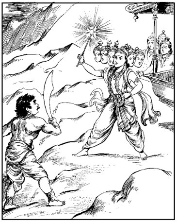
भगवान् श्रीहरिने अपने आयुध सुदर्शन चक्र और शा धनुषको लेकर युद्धस्थलमें महादैत्य तारकपर आक्रमण किया। तदनन्तर सबके देखते–देखते श्रीहरि और तारकासुरमें अत्यन्त रोमांचकारी महायुद्ध छिड़ गया। तब ब्रह्माजीने स्वामिकार्तिकसे कहा–हे पार्वतीसुत! विष्णु और तारकासुरका यह व्यर्थ युद्ध शोभा नहीं दे रहा है; क्योंकि विष्णुके हाथों इस तारककी मृत्यु नहीं होगी। यह मुझसे वरदान पाकर अत्यन्त बलवान् हो गया है। हे पार्वतीनन्दन! तुम्हारे अतिरिक्त इस पापीको दूसरा कोई नहीं मार सकता। तुम शीघ्र ही उस दैत्यका वध करनेके लिये तैयार हो जाओ। तारकका संहार करनेके निमित्त ही तुम शंकरसे उत्पन्न हुए हो। ब्रह्माजीका यह वचन सुनकर कुमार कार्तिकेयने प्रसन्नतापूर्वक ‘तथास्तु’–ऐसा ही होगा कहा तथा वे युद्धके लिये तत्पर हो गये।
कुमार कार्तिकेयके साथ तारकासुरका भयंकर युद्ध होने लगा। सबके देखते–देखते कुमारके आघातसे तारकासुर सहसा धराशायी हो गया और उसके प्राण–पखेरू उड़ गये। महाबली दैत्यराज तारकके मारे जानेपर सभी देवता आनन्दमग्न हो गये। उस समय भगवान् शंकर भी कार्तिकेयकी विजयका समाचार पाकर पार्वतीजीके साथ प्रसन्नतापूर्वक वहाँ पधारे। स्नेहसे युक्त पार्वतीजी परम प्रेमपूर्वक अपने पुत्र कुमारको अपनी गोदमें लेकर लाड़–प्यार करने लगीं। उस समय वहाँ एक महान् विजयोत्सव मनाया गया। देवताओंने पुष्पवर्षा की। तत्पश्चात् भगवान् रुद्र जगज्जननी भवानीके साथ अपने निवास–स्थान कैलास पर्वतको
चले गये। इधर सभी देवताओंने शंकरनन्दन कुमारका स्तवन करते हुए निवेदन किया–हे कुमार! आपने असुरराज तारकको मारकर हम सबको तथा चराचर जगत्को सुखी कर दिया। अब आप अपने माता–पिता पार्वती और शंकरका दर्शन करनेके लिये शिवके निवासस्थल कैलासपर चलनेकी कृपा करें।
तदनन्तर सब देवताओंके साथ कुमार स्कन्द शिवजीके समीप कैलास पहुँच गये। वहाँ शिव–शिवाके साथ सबने बड़ा आनन्द मनाया। देवताओंने शिवजीकी स्तुति की। शिवजीने उन सबोंको वरदान तथा अभयदान देकर विदा दिया।
भगवान् गणपतिके जन्मकी कथा
नारदजी बोले–प्रजानाथ! मैंने स्वामिकार्तिकके सब वृत्तान्त तथा उनकी उत्तम कथा सुन ली, अब गणेशका उत्तम चरित्र सुनना चाहता हूँ।
ब्रह्माजी बोले–हे नारद! एक समय पार्वतीके मनमें ऐसा विचार आया कि मेरा कोई एक ऐसा सेवक होना चाहिये, जो परम शुभ, कार्यकुशल और मेरी ही आज्ञामें तत्पर रहनेवाला हो। यों विचारकर पार्वतीदेवीने अपने शरीरके मैलसे एक ऐसे चेतन पुरुषका निर्माण किया, जो सम्पूर्ण शुभ लक्षणोंसे संयुक्त था। देवीने कहा–तात! तुम मेरे पुत्र हो, मेरे अपने हो, अतः तुम मेरी बात सुनो। आजसे तुम मेरे द्वारपाल हो जाओ। मेरी आज्ञाके बिना कोई भी हठपूर्वक मेरे महलके भीतर प्रवेश न करने पाये, चाहे वह कहींसे भी आये, कोई भी हो।
ब्रह्माजी कहते हैं–यों कहकर पार्वतीने गणेशके हाथमें एक सुन्दर छड़ी दे दी और गणराजको अपने द्वारपर स्थापित कर दिया तथा सखियोंके साथ स्वयं स्नान करने लगीं। इसी समय भगवान् शिव द्वारपर आ पहुँचे। गणेश पार्वतीपतिको पहचानते तो थे नहीं, अतः बोल उठे–माताकी आज्ञाके बिना अभी भीतर मत जाओ, कारण माता स्नान करने बैठ गयी हैं। महेश्वरके गण उन्हें समझाकर हटानेका प्रयास कर रहे थे, परंतु गणेश वहाँसे हटे नहीं। शिवगणों एवं गणेशजीका युद्ध होने लगा, पर वे गणेशको पराजित न कर सके, तब स्वयं शूलपाणि महेश्वरने गणेशसे युद्ध करना प्रारम्भ कर दिया। घोर युद्ध हुआ अन्ततोगत्वा स्वयं शूलपाणि महेश्वरने त्रिशूलसे गणेशजीका सिर काट डाला।
जब यह समाचार पार्वतीजीको मिला, तब वे क्रुद्ध हो गयीं और बहुत सारी सखियोंको उत्पन्न करके प्रलय–जैसी स्थिति बना दीं। यह देख देवर्षियोंने भगवती को प्रसन्न करनेके लिये प्रार्थना की तो भगवती पराम्बाने कहा–यदि मेरा पुत्र जीवित हो जाय तो सब ठीक हो जायगा।
भगवान् शंकरके आज्ञानुसार शिवगणोंने उत्तर दिशासे एक हाथीका सिर लाकर उस धड़में जोड़ दिया। इसके अनन्तर देवताओंने वेदमन्त्रोंद्वारा जलको अभिमन्त्रिकर उस बालकके शरीरपर छिड़का, जिससे वह बालक चेतनायुक्त होकर जीवित हो गया।
अपने पुत्रको जीवित देखकर पार्वती देवी प्रसन्न हो गयीं और उन्होंने हर्षातिरेकसे उसका मुख चूमा और प्रेमपूर्वक उसे वरदान देते हुए कहा–अबसे सम्पूर्ण देवताओंमें तेरी अग्रपूजा होती रहेगी और तुझे कभी दुःखका सामना नहीं करना पड़ेगा।
ब्रह्माजी कहते हैं–हे मुने! तदनन्तर ब्रह्मा, विष्णु और शंकर आदि सभी देवताओंने मिलकर पार्वतीको प्रसन्न करनेके लिये गणेशको ‘सर्वाध्यक्ष’ घोषित कर दिया।
शिवजी कहते हैं–हे गिरिजानन्दन! विघ्ननाशके कार्यमें तेरा नाम सबसे श्रेष्ठ होगा। तू सबका पूज्य है–इतना कहनेके पश्चात् महात्मा शंकर गणेशको पुनः वरदान देते हुए बोले–हे गणेश्वर! तू भाद्रपद मासके कृष्ण पक्षकी चतुर्थीको चन्द्रमाका शुभोदय होनेपर उत्पन्न हुआ है, इसलिये उसी दिनसे आरम्भ करके तेरा उत्तम व्रत करना चाहिये। यहाँ शिवजीने चतुर्थी – व्रतकी शास्त्रोक्त विधि तथा उसकी महिमाका वर्णन प्रस्तुत किया है।
गणेशविवाहकी कथा
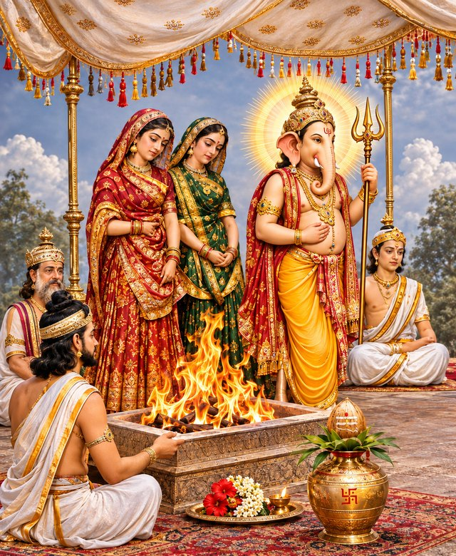
कुछ समय बीत जानेपर एक दिन शिव–पार्वतीके मनमें यह विचार आया कि हमारे दोनों पुत्र विवाहके योग्य हो गये हैं। उधर गणेश और कार्तिक दोनों पुत्रोंमें भी विवाह करनेकी इच्छा प्रबल होने लगी। पहले विवाह हमारा होना चाहिये–दोनोंने यह इच्छा व्यक्त की। शिव–पार्वतीने कहा–सुपुत्रो! हम लोगोंने पहलेसे एक ऐसा नियम बना रखा है कि जो सारी पृथ्वीकी परिक्रमा करके पहले लौट आयेगा, उसीका विवाह पहले होगा। माता–पिताकी यह बात सुनकर महाबली कार्तिकेय अपने स्थानसे पृथ्वीकी परिक्रमा करनेके लिये चल दिये, परंतु गणेश वहीं खड़े रह गये। वे मनमें विचार करने लगे कि परिक्रमा तो मुझसे हो नहीं सकेगी, अब मैं क्या करूँ? गणेशजीने अपने माता–पिता शिव–पार्वतीको सुन्दर आसनपर बिठाया और विधिपूर्वक उनकी पूजाकर सात परिक्रमाएँ सम्पन्न कीं और निवेदन किया कि शास्त्रोंके अनुसार मेरी पृथ्वी–परिक्रमा पूर्ण हो गयी। अतःः मेरा विवाह पहले कर देना चाहिये। भगवान् शिवा–शिवने गणेशजीकी बात स्वीकार कर ली और सिद्धि एवं बुद्धिकी साथ गिरिजानन्दन गणेशका विवाह सम्पन्न हो गया। उनकी सिद्धि नामक पत्नीसे ‘क्षेम’ और बुद्धिसे ‘लाभ’ नामक पुत्र हुआ।
कुमारका क्रौंचपर्वतपर जाना
इधर नारदने कार्तिकेयको माता–पिताके द्वारा छल करनेकी बात कहकर उन्हें भड़काया। कुमार स्कन्द माता–पिताको प्रणामकर क्रोधाग्निसे जलते हुए शिवा–शिवके मना करनेपर भी क्रौंचपर्वतपर चले गये और तभीसे वे आज भी वहींपर हैं।
ब्रह्माजी कहते हैं–हे देव्षें! उसी दिनसे लेकर वे शिवपुत्र कार्तिकेय कुमार ही रह गये। कृत्तिका नक्षत्रयुक्त कार्तिक पूर्णिमा तिथिमें जो व्यक्ति कुमारका दर्शन करता है, उसके पाप भस्म हो जाते हैं और उसे मनोवांछित फलकी प्राप्ति हो जाती है। स्कन्दका वियोग होनेपर उन्हें सुखी करनेके लिये शिव–पार्वती स्वयं अपने अंशसे क्रौंच पर्वतपर गये। वहाँ मल्लिकार्जुन नामक ज्योतिर्लिंग है, आज भी वहाँ उनके दर्शन होते हैं। पार्वतीसहित उन शिवको आया जानकर वे कुमार विरक्त होकर वहाँसे अन्यत्र जानेको उद्यत हो गये। देवताओं और मुनियोंके बहुत प्रार्थना करनेपर भी वे कार्तिकेय उस स्थानसे तीन योजन दूर हटकर निवास करने लगे।
हे नारद! पुत्रके स्नेहसे आतुर वे दोनों शिवा–शिव कुमारके दर्शनके लिये पर्व–पर्वपर वहाँ जाते रहते हैं। अमावस्याके दिन वहाँ शिवजी स्वयं जाते हैं और पूर्णमासीके दिन पार्वतीजी निश्चित रूपसे वहाँ जाती हैं।
हे मुनीश्वर! आपने कार्तिकेय और गणेशका जो–जो वृत्तान्त पूछा, वह श्रेष्ठ वृत्तान्त मैंने वर्णित किया।
इस प्रकार रुद्रसंहिताका चतुर्थ कुमारखण्ड पूर्ण हुआ।
रुद्रसंहिता (युद्धखण्ड)
नारदजी कहते हैं–हे ब्रह्मन्! पराक्रमी भगवान् शंकरने एक ही बाणसे एक साथ दैत्योंके तीनों पुरोंको किस प्रकार जलाया? मायासे निरन्तर विहार करनेवाले भगवान् शंकरके सम्पूर्ण चरित्रका वर्णन कीजिये।
ब्रह्माजी बोले–हे ऋषिश्रेष्ठ! पूर्वकालमें व्यासजीने महर्षि सनत्कुमारसे यही बात पूछी थी। तब सनत्कुमारजीने उस समय जो कुछ कहा था, वही बात मैं आपको सुनाता हूँ।
त्रिपुरवधकी कथा
सनत्कुमार व्यासजीसे कहते हैं–हे मुनीश्वर! शिवजीके पुत्र कार्तिकेयके द्वारा तारकासुरका वध कर दिये जानेपर उसके तीनों पुत्र–तारकाक्ष, विद्युन्माली तथा कमलाक्ष घोर तप करने लगे। उन तीनों दैत्योंने सम्पूर्ण भोगोंको त्यागकर मेरुपर्वतकी गुफामें जाकर अत्यन्त अद्भुत तप किया। इस प्रकार तप करते हुए तथा ब्रह्माजीमें मन लगाये हुए उन तारकपुत्रोंका बहुत समय बीत गया। उनके तपसे सन्तुष्ट होकर ब्रह्माजी वहाँ प्रकट हो गये और उन असुरोंसे अभीष्ट वर माँगनेको कहा।
दैत्य बोले–हे देवेश! यदि आप प्रसन्न हैं तो हमें सब प्राणियों से अवध्यत्व प्रदान कीजिये। हम अजर–अमर हो जायेँ और तीनों लोकोंमें अन्य प्राणियोंको मार सकें। उनकी यह बात सुनकर ब्रह्माजीने कहा–हे असुरो! पूर्ण अमरत्व किसीको नहीं मिल सकता, अतः कोई अन्य वर माँग लो। इस भूतलपर जहाँ भी कोई प्राणी जन्मा है, वह अवश्य मरेगा।
दैत्य बोले–हे भगवन्! हम लोग यद्यपि पराक्रमशाली हैं, किंतु हमारे पास कोई ऐसा स्थान नहीं है, जिसमें शत्रु प्रवेश कर न सके और वहाँ हम सुखसे निवास कर सकें। अतः आप ऐसे तीन नगरोंका–एक स्वर्णका पुर, दूसरा चाँदीका तथा तीसरा वज्रके समान लोहेका पुर निर्माण कराकर हमें प्रदान कीजिये, जो परम अद्भुत, सभी सम्पत्तियोंसे परिपूर्ण और देवताओंके लिये सर्वथा अनतिक्रमणीय हों।
सनत्कुमारजीने व्यासजीसे कहा–उनका यह वचन सुनकर लोकपितामह ब्रह्माने उन्हें यह वर प्रदान कर दिया। उसके बाद उन्होंने दैत्यशिल्पी मयको आज्ञा दी–हे मय! तुम सोने, चाँदी और लोहेके तीन नगरोंका निर्माण कर दो। मयको यह आज्ञा प्रदानकर ब्रह्माजी अपने लोकको चले गये। तदनन्तर मयने बड़े प्रयत्नके साथ तीनों पुरोंका निर्माण किया। ये तीनों पुर क्रमसे स्वर्गमें, आकाशमें एवं भूलोकमें अवस्थित हुए।
इस प्रकार तीनों पुरोंको प्राप्तकर महाबली तारकासुरके पुत्र उनमें प्रविष्ट हुए और सभी प्रकारके सुखोंका भोग करने लगे। उन पुण्यकर्मा राक्षसोंको वहाँ निवास करते हुए बहुत लम्बा काल व्यतीत हो गया।
तब उनके तेजसे दग्ध हुए इन्द्रादि देवता दुखी होकर ब्रह्माजीकी शरणमें गये और उनसे अपना दुःख प्रकट किया।
ब्रह्माजी बोले–हे देवताओ! आप लोग उन दैत्योंसे बिलकुल मत डरिये। इन्द्रसहित सभी देवता शिवजीसे प्रार्थना करें। यदि वे सर्वाधीश प्रसन्न हो जायँँ तो आप लोगोंका कार्य पूर्ण हो सकेगा।
तब ब्रह्माजीकी बात सुनकर इन्द्रसहित सभी देवता दुखी होकर शिवलोक गये और भगवान् शिवसे प्रार्थना की। भगवान् शंकरने कहा–वे दैत्य मेरी भक्ति और सेवा–शुश्रूषामें संलग्न हैं। इसलिये जबतक वे वेद–शास्त्रोक्त धर्मसे विमुख नहीं होंगे, तबतक मेरे द्वारा उनका कोई अनिष्ट करना सम्भव नहीं है। इसलिये आप देवतागण विष्णुसे बात करें। तब वे सभी देवगण भगवान् विष्णुके समक्ष प्रस्तुत हुए और पूर्ण दीनताके साथ विष्णुके समक्ष अपनी परिस्थितियोंको बताया तथा भगवान् शिवके विचारोंको भी व्यक्त किया।
भगवान् विष्णुने कहा–लिंगार्चनपरायण वे दैत्य इस लोकमें अनेक प्रकारकी सम्पत्तिका भोग कर रहे हैं, परलोकमें भी उन्हें मोक्ष प्राप्त होगा, फिर भी मैं अपनी मायासे उन दैत्योंके धर्ममें विघ्न डालकर देवताओंकी कार्यसिद्धिके निमित्त क्षणभरमें त्रिपुरका संहार करूँगा। जबतक वे शंकरकी अर्चना करते हैं और पवित्र कृत्य करते हैं, तबतक उनका नाश नहीं हो सकता, इसलिये अब ऐसा उपाय करना चाहिये, जिससे वहाँसे वेद–धर्म चला जाय, तब वे दैत्य लिंगार्चन त्याग देंगे–ऐसा निश्चय करके विष्णुजीने उन दैत्योंके धर्ममें विघ्न करनेके लिये श्रुतिखण्डनरूप उपाय किया।
उन देवाधिदेव विष्णुजीकी मायासे सभी पुरवासियोंके अपने धर्मोंसे सर्वथा विमुख हो जानेपर अधर्मकी वृद्धि होने लगी। सभी देवताओंने भगवान् शंकरसे प्रार्थना की और कहा–हे भक्तवत्सल! उन दैत्योंने हमारे भाग्यसे सभी धर्मोंका परित्याग कर दिया है। हे शरणप्रद! इस समय हम आपकी शरणमें आये हैं, आप जैसा चाहें, वैसा करें।
त्रिपुरध्वंसके लिये दिव्य रथका निर्माण
भगवान् शंकरने कहा–मेरे पास योग्य सारथीसहित दिव्य रथ नहीं है और संग्राममें विजय दिलानेवाला धनुष–बाण आदि भी नहीं है, जिस रथपर बैठकर धनुष–बाण लेकर तथा अपना मन लगाकर उन प्रबल दैत्योंका संग्राममें वध कर सकूँ।
तब सभी देवता प्रभुके वचन सुनकर प्रसन्न होकर बोले–हे महेश्वर! हम लोग आपके रथादि उपकरण बनकर युद्धके लिये तैयार हैं। भगवान् शंकरने कहा कि रथ, सारथी, दिव्य धनुष तथा उत्तम बाण शीघ्र उपस्थित कीजिये। तब उनकी आज्ञासे विश्वकर्माने संसारके कल्याणके लिये सर्वदेवमय दिव्य तथा अत्यन्त सुन्दर रथका निर्माण किया। शिवजीके रथपर आरूढ़ हो जानेपर वह रथ उन बलवान् दानवोंके आकाशस्थित तीनों पुरोंको उद्देश्य करके चलने लगा। रथपर आरूढ़ भगवान् शंकरने पाशुपत–व्रतकी चर्चा की और कहा–जो इस दिव्य पाशुपतव्रतका आचरण करेगा, वह पशुत्वसे मुक्त हो जायगा।
सनत्कुमार बोले–उन परमात्मा महेश्वरका यह वचन सुनकर ब्रह्मा, विष्णु आदि देवगणोंने कहा–ऐसा ही होगा। इसलिये हे वेदव्यास! देवता एवं असुर–सभी उन प्रभुके पशु हैं और पशुओंको पाशसे मुक्त करनेवाले रुद्र भगवान् शंकर पशुपति हैं, तभीसे उन महेश्वरका यह कल्याणप्रद ‘पशुपति’ नाम भी सभी लोकोंमें प्रसिद्ध हुआ।
सनत्कुमारजी कहते हैं–हे व्यासजी! इसके बाद महादेव शम्भु समस्त युद्ध–सामग्रियोंसे युक्त हो उस रथपर बैठकर त्रिपुरके दैत्योंको दग्ध करनेके लिये उद्यत हुए। पर इस कार्यमें गणेशजीके द्वारा विघ्न होनेपर एक अत्यन्त मनोहर आकाशवाणी शंकरजीने सुनी–हे भगवन्! जबतक आप इन गणेशजीका पूजन नहीं करेंगे, तबतक आप त्रिपुरका नाश नहीं कर सकेंगे–यह वचन सुनकर सदाशिवने भद्रकालीको बुलाकर गणेशजीका पूजन किया।
जब महादेवजी गणेशका पूजनकर स्थित हो गये, उसी समय वे तीनों पुर शीघ्र ही एकमें मिल गये। उसी समय जगत्पति ब्रह्मा तथा विष्णुने कहा–हे महेश्वर! अब इन दैत्य तारकपुत्रोंके वधका समय उपस्थित हो गया है; क्योंकि इनके तीनों पुर एक स्थानमें आ गये हैं। जबतक ये तीनों पुर एक–दूसरेसे अलग नहीं होते, तबतक आप बाण छोड़िये और त्रिपुरको भस्म कर दीजिये।
शिवजीके द्वारा छोड़े गये तीव्रगामी उस विष्णुमय बाणने त्रिपुरमें रहनेवाले उन तीनों दैत्योंको दग्ध कर दिया। इसके साथ ही सैकड़ों दैत्य हाहाकार करते हुए उस बाणकी अग्निसे भस्म हो गये।
जिस प्रकार कल्पान्तमें जगत् भस्म हो जाता है, उसी प्रकार उस अग्निने केवल विश्वकर्मा मय दानवको छोड़कर सभीको भस्म कर दिया। महेश्वरके शरणागत होनेपर नाशकारक पतन नहीं होता है। इसलिये सब पुरुषोंको ध्यानपूर्वक यह यत्न करना चाहिये, जिससे भगवान् शंकरमें भक्ति बढ़े।
इसके अनन्तर ब्रह्मा, विष्णु आदि सभी देवताओंने भगवान् शंकरकी स्तुति की। शिवजीने प्रसन्न होकर उन्हें मनोभिलषित वर प्रदान किया।
भगवान् शिवद्वारा मयको वरदान
सनत्कुमारजी कहते हैं–उसी समय मय दानव प्रेमपूर्वक गद्गद वाणीसे उनकी स्तुति करने लगा। शिवजीने प्रसन्न होकर मय दानवसे वर माँगनेको कहा। मयने कहा–हे देवदेव! यदि आप मुझपर प्रसन्न हैं तो मुझे अपनी शाश्वती भक्ति प्रदान कीजिये। मुझमें कभी भी असुरभाव न रहे। हे नाथ! मैं आपके शुभ भजनमें मग्न रहूँ। भगवान् महेश्वर प्रसन्न होकर बोले–तुम मेरी आज्ञासे अपने परिवारसहित स्वर्गलोकसे भी मनोहर वितललोकको जाओ तथा निर्भय होकर वहाँ रहो।
मयने भगवान्की इस आज्ञाको स्वीकार किया और सबको प्रणामकर वह वितललोकको चला गया।
जलन्धरके वधकी कथा
व्यासजी कहते हैं–हे ब्रह्मन्! मैंने सुना है कि पूर्वकालमें प्रभु शंकरजीने महादैत्य जलन्धरका वध किया था, आप शंकरजीके उस चरित्रको सुनानेकी कृपा करें।
व्यासजीद्वारा इस प्रकार पूछनेपर महामुनि सनत्कुमारजीने पूरी कथा सुनायी–
एक बार बृहस्पति तथा इन्द्र शंकरजीका दर्शन करनेके लिये कैलासको गये। भगवान् शंकर उनके ज्ञानकी परीक्षा लेनेके लिये एक भयंकर पुरुषका रूप धारण करके मार्गमें स्थित हो गये। इन्द्र उन्हें पहचान नहीं सके और उन्हें देखकर क्रोधित हुए। भगवान् शंकरने भी क्रोधित होकर उन्हें जलानेके लिये अपने नेत्रोंसे एक प्रज्वलित तेज उत्पन्न किया। बृहस्पति अपनी बुद्धिसे भगवान् शंकरको पहचानकर उनकी स्तुति करने लगे और इन्द्रको भी उनके चरणों पर गिराया। तब प्रसन्न होकर इन्द्रकी रक्षा करते हुए उन्होंने उस अग्निको समुद्रमें फेंक दिया।
समुद्रमें फेंका हुआ वह तेज शीघ्र ही बालकरूप हो गया। वह बालक गंगासागरके संगमपर स्थित होकर बड़े ऊँचे स्वरमें रोने लगा। उसके रुदनसे सभी लोक व्याकुल हो गये तथा समस्त देवता ब्रह्माजीकी शरणमें गये। ब्रह्माजीने उस बालकके विषयमें समुद्रसे पूछा। उसी समय उस बालकने ब्रह्माजीका कण्ठ पकड़ लिया। ब्रह्माजीने किसी प्रकार अपना गला छुड़ाया, परंतु उनकी आँखोंसे आँसू आ गये। समुद्रके कहनेपर उस बालकका जातकोक्त फल ब्रह्माजीने सुनाया। ब्रह्माजीने कहा–इसने मेरे नेत्रोंसे निकले हुए जलको धारण किया, इसलिये इसका नाम जलन्धर होगा। यह बालक समस्त दैत्योंका अधिपति होगा। रुद्रको छोड़कर यह सभी प्राणियोंसे अवध्य होगा। इसके अनन्तर सागरके अनुरोधपर असुर कालनेमिने अपनी पुत्री वृन्दाका विवाह जलन्धरसे कर दिया।
देवताओंद्वारा छलपूर्वक समुद्र–मन्थन एवं अमृत–पान आदिकी बातें सुनकर जलन्धर अत्यधिक क्रोधित हो गया और स्वर्ग पहुँचकर उसने इन्द्रसहित सभी देवताओंको जीत लिया और अमरावतीपुरीपर अपना अधिकार कर लिया। देवताओंको भागते हुए देखकर भगवान् हृषीकेश विष्णु गरुडपर सवार होकर जलन्धरसे भयंकर युद्ध करने लगे। उस दैत्यसे बहुत देरतक युद्ध करके विष्णु विस्मित हो गये और प्रसन्न होकर उसे वरदान देने लगे।
जलन्धर धर्मानुसार शासन करने लगा। देवतागण संत्रस्त होकर भगवान् शंकरके पास गये और अपनी रक्षाके लिये प्रार्थना करने लगे। यह निश्चय हुआ कि जलन्धरकी पत्नी वृन्दाका पातिव्रत्य जबतक नष्ट नहीं होगा, तबतक जलन्धरकी मृत्यु सम्भव नहीं है, अतः भगवान् विष्णुने पार्वतीकी प्रेरणासे वृन्दाका पातिव्रत्य नष्ट किया। वृन्दाको जब यह बात मालूम हुई तो वह अत्यन्त क्षुब्ध हो गयी और वह भगवान्
विष्णुको शाप देकर अग्निमें प्रवेश कर गयी। इधर भगवान् शंकरने देवताओंके कार्यको सिद्ध करनेके लिये नारदजीको बुलाकर भेजा। नारदजी देवताओंको आश्वस्त करके जलन्धरके पास गये और उससे बोले–तुम्हारे पास सम्पूर्ण समृद्धि रहते हुए भी स्त्रीरत्न नहीं है।
जलन्धरके पूछनेपर नारदजीने बताया कि कैलासपर्वतपर विश्वमोहिनी पार्वती हैं, जो अत्यन्त सुन्दर हैं। जलन्धरने अपना एक दूत भेजा। उसकी भगवान् शिवसे वार्ता हुई। उसकी बातसे भगवान् शंकर अत्यन्त क्रुद्ध हो गये। तत्पश्चात् भगवान् शंकरका जलन्धरसे घोर युद्ध हुआ। अन्ततोगत्वा भगवान् शंकरद्वारा धराशायी होकर वह मृत्युको प्राप्त हुआ।
सनत्कुमार कहते हैं–हे मुने! अनन्तमूर्ति सदाशिवके द्वारा उस समुद्रपुत्र जलन्धरके मारे जानेपर सभी प्रसन्न हो गये और सम्पूर्ण त्रैलोक्य शान्तिमय हो गया।
शंखचूडकी कथा
कश्यपकी पत्नियोंमें एकका नाम दनु था, उस दनुके बहुत–से महाबली पुत्र हुए, उनमें एकका नाम विप्रचित्ति था। उसका पुत्र दम्भ हुआ, जो जितेन्द्रिय, धार्मिक और विष्णुभक्त था। जब उसके कोई पुत्र नहीं हुआ, तब उसने पुष्कर जाकर पुत्रप्राप्तिके लिये तपस्या की। उसकी तपस्यासे प्रसन्न होकर भगवान् विष्णुने उसे पुत्र होनेका वरदान दिया।
तदनन्तर समय आनेपर साध्वी दम्भपत्नीने एक तेजस्वी बालकको जन्म दिया, जिसका नाम शंखचूड रखा गया। वह बालक अत्यन्त तेजस्वी था, नित्य बालक्रीडा करके अपने माता–पिताका हर्ष बढ़ाने लगा।
इधर शंखचूड बड़ा हुआ, तब वह पुष्करमें जाकर ब्रह्माजीको प्रसन्न करनेके लिये भक्तिपूर्वक तपस्या करने लगा। उसकी तपस्यासे प्रसन्न होकर ब्रह्माजीने उसे देवताओंसे अजेय होनेका वरदान दिया। फिर उन्होंने शंखचूडको दिव्य श्रीकृष्णकवच प्रदान किया। तदनन्तर ब्रह्माजीने उसे आज्ञा दी कि तुम बदरीवनको जाओ, वहीं धर्मध्वजकी कन्या तुलसी सकाम भावसे तपस्या कर रही है। तुम उसके साथ विवाह कर लो।
इसके अनन्तर शंखचूड उस स्थानपर जा पहुँचा, जहाँ धर्मध्वजकी पुत्री तुलसी तप कर रही थी। तुलसीसे वहाँ शंखचूडकी वार्ता हुई और ब्रह्माजीकी आज्ञासे दोनोंने गान्धर्व विवाह कर लिया।
इसके अनन्तर शुक्राचार्यजीद्वारा शंखचूडका राज्याभिषेक हुआ। उसने सम्पूर्ण लोकोंको जीतकर देवताओंका सारा अधिकार छीन लिया। देवगण ब्रह्माजीकी शरणमें गये। ब्रह्माजी समस्त देवताओंके साथ भगवान् विष्णुकी स्तुति करने लगे। भगवान् विष्णुने कहा–कमलयोनि! मैं शंखचूडका सारा वृत्तान्त जानता हूँ। पूर्वजन्ममें वह गोप था। गोलोकमें मेरे ही रूप श्रीकृष्ण रहते हैं। वही गोप इस समय शम्भुकी इस लीलासे मोहित होकर शापवश अपनेको दुःख देनेवाली दानवी योनिको प्राप्त हो गया है। श्रीकृष्णने पहलेसे ही रुद्रके त्रिशूलसे इसकी मृत्यु निर्धारित कर दी है। ऐसा जानकर तुम्हें भय नहीं करना चाहिये। यों कहकर ब्रह्मासहित विष्णु शिवलोकको गये तथा भगवान् शंकरकी स्तुति करते हुए बोले–‘हे दीनबन्धु! हम दीनोंकी रक्षा कीजिये।’
श्रीशंकरने सबको आश्वस्त करते हुए कहा–हे देवगण! तुम लोग अपने–अपने स्थानको लौट जाओ, मैं निश्चय ही शंखचूडका वध कर डालूँगा। महेश्वरके इस वचनको सुनकर समस्त देवताओंको परम आनन्द प्राप्त हुआ। इधर उन महारुद्रने गन्धर्वराज चित्ररथ (पुष्पदन्त)– को दूत बनाकर शंखचूडके पास भेजा। परंतु शंखचूडने कहा कि महेश्वरके साथ युद्ध किये बिना न तो मैं राज्य ही वापस दूँगा और न अधिकारोंको ही लौटाऊँगा।
शिवदूत पुष्पदन्तने लौटकर अपने स्वामी महेश्वरको शंखचूडकी सारी बात सुना दी। भगवान् रुद्रने अपनी सेनाके साथ युद्धके लिये प्रस्थान किया।
इधर शंखचूडने महलके भीतर जाकर अपनी पत्नी तुलसीसे यह सारी वार्ता सुनायी तथा युद्धमें जानेसे पूर्व उसे ढाँढस बँधाया। तदनन्तर दानवराजने कवच धारण करके अपनी सेनाके साथ युद्धके लिये प्रस्थान किया।
घोर युद्ध प्रारम्भ हो गया। उसी समय आकाशवाणी हुई–जबतक इस शंखचूडके हाथमें श्रीहरिका परम उग्र कवच वर्तमान रहेगा और इसकी पतिव्रता पत्नी (तुलसी )–का सतीत्व अखण्डित रहेगा, तबतक इसपर जरा और मृत्यु अपना प्रभाव नहीं डाल सकेंगे। अतः हे जगदीश्वर शंकर! ब्रह्मके इस वचनको सत्य कीजिये।
शिवजीने उस आकाशवाणीको सुनकर उसे स्वीकार कर लिया और विष्णुको इस कार्यके लिये प्रेरित किया। मायावियोंमें भी श्रेष्ठ मायावी भगवान् विष्णुने एक वृद्ध ब्राह्मणका वेश धारणकर शंखचूडसे भिक्षारूपमें कवच माँग लिया और फिर शंखचूडका रूप धारण करके तुलसीके पास पहुँचकर सबके आत्मा एवं तुलसीके नित्य स्वामी श्रीहरिने शंखचूडरूपसे उसके शीलका हरण कर लिया। तदनन्तर विष्णुभगवान्ने शम्भुसे अपनी सारी बातें कह सुनायीं। तब शिवजीने शंखचूडके वधके निमित्त अपना उद्दीप्त त्रिशूल शंखचूडके ऊपर छोड़ा, जिसने उसी क्षण उसे राखकी ढेरी बना दिया।
शिवजीके ऊपर पुष्पोंकी वर्षा होने लगी और ब्रह्मा, विष्णु, इन्द्रादि सभी देवता तथा मुनिगण उनकी प्रशंसा करने लगे। शंखचूड भी शिवजीकी कृपासे शाप–मुक्त हो गया और उसे अपने पूर्व ( श्रीकृष्णपार्षद )–रूपकी प्राप्ति हो गयी।
शंखचूडकी हड्डियोंसे शंख जातिका प्रादुर्भाव हुआ, इस शंखका जल शंकरके अतिरिक्त समस्त देवताओंके लिये प्रशस्त माना जाता है। उस समय जगतमें चारों ओर परम शान्ति छा गयी।
तुलसी एवं शालग्रामशिलाके माहात्म्यका वर्णन
भगवान् श्रीहरिने जब तुलसीका शीलहरण किया, तदनन्तर तुलसीने मनमें सन्देह होनेपर यह समझ लिया कि ये साक्षात् विष्णु हैं, परंतु उसका पातिव्रत नष्ट हो चुका था, इसलिये वह कुपित होकर विष्णुसे कहने लगी–हे विष्णो! चूँकि तुम पाषाण–सदृश कठोर और दयारहित हो, इसलिये अब तुम मेरे शापसे पाषाणस्वरूप ही हो जाओ। यह कहकर वह शोकार्त होकर विलाप करने लगी। इतनेमें वहाँ भक्तवत्सल भगवान् शंकर प्रकट हो गये। उन्होंने समझाकर कहा–भद्दे! तुमने जिस मनोरथको लेकर तप किया था, यह उसी तपस्याका फल है। अब तुम इस शरीरको त्यागकर दिव्य देह धारण कर लो, श्रीहरिके साथ वैकुण्ठमें विहार करती रहो। तुम्हारा यह शरीर जिसे तुम छोड़ दोगी, नदीके रूपमें परिवर्तित हो जायगा, जो भारतवर्षमें पुण्यरूपा गण्डकीके नामसे प्रसिद्ध होगा। श्रीहरि भी तुम्हारे शापवश पत्थरका रूप धारण करके भारतवर्षमें गण्डकी नदीके जलमें निवास करेंगे तथा शालग्रामशिलाके रूपमें प्रकट होंगे। विष्णुरूपी शालग्रामशिला और वृक्षस्वरूपिणी तुलसीका समागम सदा अनुकूल तथा बहुत प्रकारके पुण्योंकी वृद्धि करनेवाला होगा। हे भद्रे! जो शालग्रामशिलाके ऊपरसे तुलसीपत्रको दूर करेगा, उसे जन्मान्तरमें स्त्रीवियोगकी प्राप्ति होगी। जो पुरुष शालग्रामशिला, तुलसी और शंखको एकत्र रखकर उसकी रक्षा करता है, वह श्रीहरिका प्यारा होता है।
अन्धकासुरकी उत्पत्तिकी कथा
सनत्कुमारजी कहते हैं–हे व्यासजी! जिस प्रकार अन्धकासुरने परमात्मा शिवके गणाध्यक्ष पदको प्राप्त किया था, उस मंगलमय चरित्रका श्रवण करो।
अन्धकासुरने पहले शिवजीके साथ बड़ा घोर संग्राम किया था, परंतु पीछे बारम्बार सात्विक भावके उद्रेकसे शम्भुको प्रसन्न कर लिया और वह गणाध्यक्ष बन गया।
व्यासजीने पूछा–अन्धक कौन था? और वह किसका पुत्र था? उसने शम्भुकी गणाध्यक्षता कैसे प्राप्त की?
सनत्कुमारजीने कहा–मुने! किसी समय भगवान् शंकर अपने गणों तथा पार्वतीको साथ लेकर कैलाससे विहार करनेके लिये काशी आये। उन्होंने काशीको अपनी राजधानी बनाया, भैरवको उसका रक्षक नियुक्त किया।
किसी समय वे अपने गणोंके साथ मन्दराचलपर गये और वहाँपर पार्वतीके साथ विहारमें प्रवृत्त हो गये। पार्वतीने क्रीडा करते हुए सदाशिवके नेत्र अपने दोनों हाथोंसे बन्द कर दिये। नेत्रोंके बन्द हो जानेपर क्षणभरमें घोर अन्धकार छा गया।
उनके ललाटका स्पर्श करते ही उष्णतासे पार्वतीके दोनों हाथोंसे स्वेदबिन्दु टपकने लगे। तब उससे एक बालक उत्पन्न हुआ, जो भयंकर, विकराल मुखवाला, महाक्रोधी, अन्धा, कुरूप तथा विकृत स्वरूपवाला था। इस प्रकारके रूपवाले उस पुरुषको देखकर गौरीने महेश्वरसे पूछा कि यह कौन है?
महेश बोले–तुम्हारे द्वारा मेरे नेत्रोंको बन्द कर दिये जानेपर तुम्हारे हाथोंके स्वेदसे यह अन्धक नामका असुर प्रकट हुआ है। तुम्हीं इसकी जन्मदात्री हो, अतः इसकी रक्षा करो।
तदनन्तर हिरण्याक्ष नामका एक असुर पुत्र–प्राप्तिके लिये तपस्या करने लगा। उसकी तपस्यासे प्रसन्न होकर भगवान् शिवने उसे अन्धकको पुत्र–रूपमें प्रदान किया। भगवान् विष्णुने वराहरूप धारणकर हिरण्याक्षका वध किया। इसके अनन्तर नरसिंह–रूप धारणकर हिरण्याक्षके बड़े भाई हिरण्यकशिपुका वध किया।
अन्धकने घोर तपस्याकर बलशाली होनेका वर प्राप्त कर लिया। उसने भगवती पार्वतीकी सुन्दरताकी गाथा सुनकर उन्हें प्राप्त करनेके लिये भगवान् शिवके पास एक दूत भेजा। अन्तमें उसे शिवजीसे घोर युद्ध करना पड़ा। शिवजीने अपने त्रिशूलसे उसका हृदय विदीर्ण कर दिया और उसके शरीरको अपने त्रिशूलपर टाँगकर आकाशमें उठा दिया। सूर्यकी किरणोंसे सन्तप्त, हिमखण्डोंसे खण्डित होनेपर भी उस
दैत्यराजने प्राणत्याग नहीं किया और भगवान् शंकरकी निरन्तर स्तुति करता रहा। यह देखकर परम दयालु भगवान् शंकरने उसकी स्तुतिसे प्रसन्न होकर उसे गाणपत्य पद प्रदान कर दिया।
शुक्राचार्यद्वारा काशीमें शुक्रेश्वर लिंगकी स्थापना तथा मृतसंजीवनी विद्या प्राप्त करना
सनत्कुमार बोले–हे व्यासजी! मृत्युंजय भगवान् शिवसे जिस प्रकार शुक्राचार्यने मृत्युनाशिनी विद्या प्राप्त की, उसे आप सुनें।
पूर्वकालमें भृगुपुत्र शुक्राचार्य काशी पुरीमें विश्वेश्वर प्रभुका ध्यान करते हुए दीर्घकालतक तप करते रहे। उन्होंने वहाँ परमात्मा शिवका शिवलिंग स्थापित किया तथा उग्र तपस्या करते हुए मूर्त्यष्टकके आठ श्लोकोंसे शिवजीकी स्तुति करते हुए उनको बार–बार प्रणाम किया। भगवान् शंकर उनकी उग्र तपस्यासे प्रसन्न होकर कहने लगे–हे विप्रवर्य! आप इसी शरीरसे मेरी उदररूपी गुहामें प्रविष्ट हो पुनः लिंगेन्द्रिय मार्गसे निकलकर पुत्रभावको प्राप्त होंगे। मृतसंजीवनी नामक जो मेरी निर्मल विद्या है, उसका निर्माण मैंने स्वयं अपने तपोबलसे किया है। उस मन्त्रूपा महाविद्याको मैं आपको प्रदान करता हूँ। आप जिस किसीको उद्देश्य करके इस विद्याका आवर्तन करेंगे, वह अवश्य ही जीवित हो जायगा। आपके द्वारा स्थापित किये गये इस लिंगका नाम शुक्रेश्वर होगा। जो मनुष्य इसकी अर्चना करेंगे, उनकी कार्यसिद्धि होगी।
बाणासुरपर शिवकी कृपा
बाणासुर बलिका औरस पुत्र था। दैत्यराज बाणासुर अपने बलसे तीनों लोकोंको तथा उसके स्वामियोंको जीतकर शोणित नामक पुरमें राज्य करता था। उसकी हजार भुजाएँ थीं। बाणासुरकी पुत्रीका नाम ऊषा था, उसका विवाह भगवान् श्रीकृष्णके पौत्र अनिरुद्धके साथ हुआ। बाणासुर महान् शिवभक्त था। शिवभक्तिमें लीन होकर उसने भगवान् शिवको प्रसन्न करनेके लिये ताण्डव नृत्य किया। उसके सुन्दर नृत्यसे प्रसन्न होकर भगवान् रुद्रने वर माँगनेको कहा। बाणासुरने शिवजीकी निर्विकार भक्ति, अक्षय गाणपत्य (गणोंका अधिपति)–का भाव तथा प्राणियोंके प्रति दयाभाव आदि वर माँगते हुए प्रेमपूर्वक शिवजीकी स्तुति की। बाणासुरका यह वचन सुनकर भगवान् सदाशिव ‘तुम सब कुछ प्राप्त करोगे’–इस प्रकार कहकर वहीं अन्तर्धान हो गये।
गजासुर–वधकी कथा तथा कृत्तिवासेश्वर लिंगकी स्थापना
गजासुर महिषासुरका पुत्र था, जब उसने सुना कि देवी दुर्गाने मेरे पिताको मार दिया था, तब उसने बदला लेनेकी भावनासे घोर तप किया। उसके तपकी ज्वालासे सब जलने लगे। ब्रह्माजीसे वर पाकर वह गर्वमें भर गया और अत्याचार करने लगा, इसी क्रममें वह काशी आया और भक्तोंको सताने लगा। दुखी देवताओंने ब्रह्माजीके साथ भगवान् शंकरसे प्रार्थना की। भगवान् शंकरने घोर युद्धमें उसे हराकर त्रिशूलमें पिरो दिया। तब उसने भगवान् शंकरका स्तवन किया। गजासुरके द्वारा वर माँगनेपर भगवान् शिवने कहा–हे दानवराज! तेरा यह पावन शरीर मेरे इस मुक्तिसाधक काशीक्षेत्रमें मेरे लिंगके रूपमें स्थित हो जाय, इसका नाम कृत्तिवासेश्वर होगा। यह सम्पूर्ण लिंगोंमें शिरोमणि और मोक्षप्रद होगा। यह सुनकर विष्णु और ब्रह्मा आदि समस्त देवताओंका मन हर्षसे परिपूर्ण हो गया।
ब्रह्माजी कहते हैं–हे मुनिसत्तम! मैंने तुमसे रुद्रसंहिताके अन्तर्गत इस युद्धखण्डका वर्णन कर दिया। यह खण्ड सम्पूर्ण मनोरथोंको प्रदान करनेवाला है तथा भुक्ति–मुक्तिरूपी फल देनेवाला है।
इस प्रकार रुद्रसंहिताका यह ब्रह्मा और श्रीनारदजीका कल्याणकारक संवाद पूर्ण रूपसे सम्पन्न हुआ।
शतरुद्रसंहिता
वन्दे महानन्दमनन्तलीलं
महेश्वरं सर्वविभुं महान्तम्।
गौरीप्रियं कार्तिकविघ्नराज–
समुद्भवं शङ्करमादिदेवम् ॥
जो परमानन्दमय हैं, जिनकी लीलाएँ अनन्त हैं, जो ईश्वरोंके भी ईश्वर, सर्वव्यापक, महान, गौरीके प्रियतम तथा स्वामी कार्तिक और विघ्नराज गणेशको उत्पन्न करनेवाले हैं, उन आदिदेव शंकरको मैं नमस्कार करता हूँ।
जो धर्मका महान् क्षेत्र है, जहाँ गंगा–यमुनाका संगम हुआ है, जो ब्रह्मलोकका मार्ग है, उस परम पुण्यमय नैमिषारण्य तीर्थके प्रयागक्षेत्रमें महात्मा मुनियोंद्वारा एक विशाल ज्ञानयज्ञका आयोजन किया गया। उस ज्ञानयज्ञका तथा मुनियोंका दर्शन करनेके लिये व्यासशिष्य महामुनि सूतजी वहाँ पधारे। वहाँ उपस्थित महात्माओंने उनकी विधिवत् स्तुति करके विनयपूर्वक उनसे निवेदन किया–हे सूतजी! इस घोर कलियुगके आनेपर जिनकी बुद्धि नष्ट हो गयी और जिन्होंने अपने धर्मका त्याग कर दिया, ऐसे लोगोंको इहलोक तथा परलोकमें उत्तम गति कैसे प्राप्त होगी–इसी चिन्तासे हमारा मन सदा व्याकुल रहता है।
सूतजी बोले–सबसे उत्तम जो शिवपुराण है, जो वेदान्तका सार–सर्वस्व है तथा वक्ता और श्रोताका समस्त पापोंसे उद्धार करनेवाला है; वह परलोकमें परमार्थ वस्तुको देनेवाला है, उसमें भगवान् शिवके उत्तम यशका वर्णन है। हे ब्राह्मणो! धर्म, अर्थ, काम और मोक्ष–इन चारों पुरुषार्थोंको देनेवाले उस पुराणका प्रभाव विस्तारको प्राप्त हो रहा है।
शिवपुराणकी कथाके इस क्रममें शौनकजीने सूतजीसे कहा–हे महाभाग! आप तो व्यासजीके शिष्य तथा ज्ञान और दयाके निधि हैं, अतः अब आप शिवजीके उन अवतारोंका वर्णन कीजिये, जिनके द्वारा उन्होंने सत्पुरुषोंका कल्याण किया है।
सूतजीने कहा–हे मुने! पूर्वकालमें इसी बातको सनत्कुमारने शिवस्वरूप तथा सत्पुरुषोंकी रक्षा करनेमें समर्थ नन्दीश्वरसे पूछा था, तब शिवजीका स्मरण करते हुए नन्दीश्वरने उनसे कहा–हे सनत्कुमार! सर्वव्यापक तथा सर्वेश्वर शंकरके विविध कल्पोंमें यद्यपि असंख्य अवतार हुए हैं, फिर भी मैं अपनी बुद्धिकी अनुसार यहाँपर उनमेंसे कुछका वर्णन कर रहा हूँ।
श्वेतलोहित नामक उन्नीसवें कल्पमें शिवजीका ‘सद्योजात’ अवतार हुआ। इन्हीं सद्योजात नामक परमेश्वर शिवजीने प्रसन्न होकर ब्रह्माजीको ज्ञान प्रदान किया एवं सृष्टि उत्पन्न करनेका सामर्थ्य भी प्रदान किया।
इसी प्रकार बीसवें, इक्कीसवें कल्प तथा अन्य कल्पोंमें महेश्वरकी ईशान, तत्पुरुष, अघोर, वामदेव तथा सद्योजात नामक पाँच मूर्तियाँ प्रकट हुईं, जो ब्रह्म संज्ञासे विश्रुत हैं। इसके साथ ही उनके बहुत सारे अवतार हुए। अपना कल्याण चाहनेवाले पुरुषोंको शिवजीके इन रूपोंकी प्रयत्नपूर्वक नित्य वन्दना करनी चाहिये; क्योंकि ये रूप सभी प्रकारके कल्याणके एकमात्र कारण हैं।
शिवजीकी अष्टमूर्तियोंका वर्णन
नन्दीश्वरजी कहते हैं–हे मुने! अब आप महेश्वरके समस्त प्राणियोंको सुख प्रदान करनेवाले तथा लोकके सम्पूर्ण कार्योको सम्पादित करनेवाले अन्य श्रेष्ठतम अवतारोंको सुनें।
यह सारा संसार शिवकी आठ मूर्तियोंका स्वरूप ही है। जैसे सूतमें मणियाँ पिरोयी रहती हैं, उसी तरह यह विश्व उन आठ मूर्तियों में व्याप्त होकर स्थित है। वे प्रसिद्ध आठ मूर्तियाँ ये हैं–शर्व, भव, रुद्र, उग्र, भीम, पशुपति, ईशान और महादेव। शिवजीकी इन शर्व आदि आठ मूर्तियोंद्वारा पृथ्वी, जल, अग्नि, वायु, आकाश, क्षेत्रज्ञ, सूर्य और चन्द्रमा अधिष्ठित हैं। शास्त्रका ऐसा निश्चय है कि कल्याणकर्ता महेश्वरका विश्वम्भरात्मक स्वरूप ही चराचर विश्वको धारण किये हुए है। जैसे इस लोकमें पुत्र–पौत्र आदिको प्रसन्न देखकर पिता हर्षित होता है, उसी तरह विश्वको भलीभाँति हर्षित देखकर शंकरको आनन्द मिलता है। इसलिये यदि कोई किसी भी देहधारीको कष्ट देता है तो निःसन्देह मानो उसने अष्टमूर्ति शिवका ही अनिष्ट किया है।
सनत्कुमारजी! इस प्रकार भगवान् शिव अपनी अष्टमूर्तियोंद्वारा समस्त विश्वको अधिष्ठित करके विराजमान हैं। अतः तुम पूर्ण भक्तिभावसे परम कारण रुद्रका भजन करो।
भगवान् शिवका अर्धनारीश्वर–अवतार
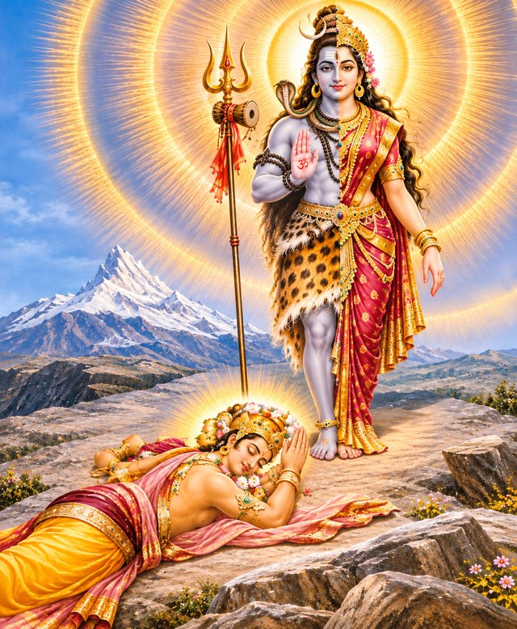
प्रिय सनत्कुमारजी! अब आप शिवजीके अनुपम अर्धनारीश्वरस्वरूपका वर्णन सुनो। सृष्टिके आदिमें जब सृष्टिकर्ता ब्रह्माद्वारा रची हुई सारी प्रजाएँ विस्तारको नहीं प्राप्त हुई, तब ब्रह्मा उस दुःखसे दुखी हो चिन्ताकुल हो गये। उसी समय यह आकाशवाणी हुई–‘ब्रह्मन्! अब मैथुनी सृष्टिकी रचना करो।’ इस आकाशवाणीको सुनकर ब्रह्माने मैथुनी सृष्टि उत्पन्न करनेमें स्वयंको समर्थ न पाकर यों विचार किया कि शम्भुकी कृपाके बिना मैथुनी प्रजा उत्पन्न नहीं हो सकती, तब वे तप करनेको उद्यत हुए। ब्रह्माके उस तीव्र तपसे थोड़े ही समयमें शिवजी प्रसन्न होकर पूर्ण सच्चिदानन्दकी कामदा मूर्तिमें प्रविष्ट होकर अर्धनारीनरके रूपमें ब्रह्मके निकट प्रकट हो गये।
ईश्वरने कहा–महाभाग वत्स! मुझे तुम्हारा सारा मनोरथ पूर्णतया ज्ञात है, मैं तुम्हारे तपसे प्रसन्न हूँ और तुम्हें तुम्हारा अभीष्ट प्रदान करूँगा। यह कहकर शिवजीने अपने शरीरके अर्धभागसे शिवा देवीको पृथक कर दिया। तब शिवसे पृथक् होकर प्रकट हुई परमा शक्तिकी ब्रह्माजी विनम्र भावसे प्रार्थना करते हुए कहने लगे–‘हे शिवे! हे शिवप्रिये! हे मातः! चराचर जगत्की वृद्धिकी लिये आप मुझे नारीकुलकी सृष्टि करनेके लिये शक्ति प्रदान करें; वरदेश्वरी! मैं आपसे एक और वरकी याचना करता हूँ, आप चराचर जगत्की वृद्धिके लिये अपने एक सर्वसमर्थ रूपसे मेरे पुत्र दक्षकी पुत्री हो जाओ।’ भगवती शिवाने ‘तथास्तु’–ऐसा ही होगा, कहकर वह शक्ति ब्रह्माको प्रदान कर दी।
इस प्रकार शिवा देवी ब्रह्माको अनुपम शक्ति प्रदान करके शम्भुके शरीरमें प्रविष्ट हो गयीं। तभीसे इस लोकमें स्त्री–भागकी कल्पना हुई और मैथुनी सृष्टि चल पड़ी। इससे ब्रह्माको महान् आनन्द प्राप्त हुआ।
नन्दीश्वरावतारका वर्णन
अबतकके अध्यायोंमें शिवजीके ४२ अवतारोंका वर्णन किया गया। अब नन्दीश्वर–अवतारका वर्णन किया जाता है।
सनत्कुमारजीने पूछा–हे नन्दीश्वर! आप महादेवके अंशसे किस प्रकार उत्पन्न हुए और किस प्रकार शिवत्वको प्राप्त हुए? आप मुझे बतानेकी कृपा करें।
नन्दीश्वर बोले–हे सनत्कुमार! जिस प्रकार शिवजीके अंशसे उत्पन्न होकर मैंने शिवत्वको प्राप्त किया है, उसको आप सावधानीपूर्वक सुनिये।
शिलाद नामक एक धर्मात्मा मुनि थे। पितरोंने महर्षि शिलादसे सन्तान उत्पन्न करनेका निवेदन किया, तब शिलादने उनका उद्धार करनेकी इच्छासे पुत्रोत्पत्ति करनेका विचार किया तथा इस निमित्त इन्द्रको उद्देश्य करके बहुत समयतक अति कठोर तप किया। इन्द्रके प्रसन्न होनेपर शिलादने अयोनिज, अमर तथा उत्तम व्रतवाले पुत्रकी कामना की। इन्द्रने अपनी असमर्थता व्यक्त करते हुए देवाधिदेव महादेव रुद्रको प्रसन्न करनेकी प्रेरणा प्रदान की। तब शिलाद भगवान् महादेवको प्रसन्न करनेके लिये तप करने लगे।
शिवके प्रसन्न होनेपर शिलादने उनसे कहा–प्रभो! मैं आपके ही समान मृत्युहीन अयोनिज पुत्र चाहता हूँ। त्रिनेत्र भगवान् शिव प्रसन्नचित्त होकर बोले–हे विप्र! मैं नन्दी नामसे आपके अयोनिज पुत्रके रूपमें अवतरित होऊँगा और हे मुने! आप मुझ तीनों लोकोंके पिताके भी पिता बन जायूँगे।
हे सनत्कुमार! कुछ समय बाद मेरे पिता शिलाद मुनि यज्ञ करनेके लिये यज्ञस्थलका कर्षण करने लगे। उसी समय यज्ञारम्भसे पूर्व ही शिवजीकी आज्ञासे प्रलयाग्निके सदृश देदीप्यमान होकर मैं उनके पुत्ररूपमें प्रकट हुआ।
उस समय वहाँपर बहुत बड़ा उत्सव हुआ। सभी देवगण हर्षित होकर मेरे तथा मुझे उत्पन्न करनेवाले शिवलिंगका पूजन करके उसकी स्तुति करने लगे।
शिलाद बोले–हे सुरेश्वर! आपने मुझे आनन्दित किया है, अतः आपका नाम नन्दी होगा और इसलिये आनन्द–स्वरूप आप प्रभु जगदीश्वरको मैं प्रणाम करता हूँ।
नन्दीश्वर बोले–इतना कहकर मुझे साथ लेकर वे पर्णकुटीमें चले गये।
हे महामुने! जब मैं महर्षि शिलादकी कुटीमें गया तो मैंने अपने उस शरीरको त्यागकर मनुष्यरूप धारण कर लिया। पुत्रवत्सल शिलादने मेरा समस्त जातकर्म आदि संस्कार सम्पन्न किया। उन्होंने वेदों तथा समस्त शास्त्रोंका भी अध्ययन सम्पन्न कराया। सातवें वर्षके पूर्ण होनेपर मित्र और वरुण नामवाले दो मुनि आश्रमपर पधारे। उन्होंने कहा–हे तात! आपके पुत्र सम्पूर्ण शास्त्रोंमें पारंगत हैं, किंतु दुःखकी बात है कि ये अल्पायु हैं। अब इस वर्षसे अधिक इनकी आयु नहीं है। यह सुनकर शिलाद दुःखसे व्याकुल होकर अत्यधिक विलाप करने लगे।
तब मैंने कहा–हे पिताजी! देवता, दानव, यमराज, काल अथवा अन्य कोई भी प्राणी मुझे मार नहीं सकता, आप दुखी न हों। पिताके पूछनेपर नन्दीश्वर बोले–मैं न तो तपसे और न विद्यासे ही मृत्युको रोक सकूँगा, मैं तो केवल महादेवके भजनसे मृत्युको जीतूँगा। इसके अतिरिक्त अन्य कोई उपाय नहीं है।
नन्दिकेश्वरका अभिषेक एवं विवाह
नन्दीश्वर कहते हैं–इसके अनन्तर मैं वनमें जाकर धीरतापूर्वक कठोर तप करते हुए रुद्रमन्त्रका जप करने लगा। मेरी तपस्यासे सन्तुष्ट होकर भगवान् शंकरने मुझसे कहा–हे महाप्राज्ञ! तुमको मृत्युसे भय कहाँ? मैंने ही उन दोनों ब्राह्मणोंको भेजा था। तुम तो अपने पिता एवं सुहृज्जनोंके सहित अजर–अमर, दुःखरहित, अविनाशी, अक्षय और मेरे सदाप्रिय गणपति हो गये। इस प्रकार कहकर कृपानिधि शिवने सहस्र कमलोंकी बनी हुई अपनी शिरोमालाको उतारकर मेरे कण्ठमें पहना दिया। हे विप्र! उस पवित्र मालाके गलेमें पड़ते ही मैं तीन नेत्र एवं दस भुजाओंसे युक्त होकर दूसरे शिवके समान हो गया। इसके बाद शिवजीने पार्वतीजीसे कहा–मैं नन्दीको अभिषिक्तकर इसे गणेश्वर बनाना चाहता हूँ, इसमें तुम्हारी क्या सम्मति है?
उमा बोलीं–हे परमेश्वर! आप इस नन्दीको अवश्य ही गणेश्वरपद प्रदान करें। तदनन्तर भगवान् शंकरने अपने श्रेष्ठ गणाधिपोंका स्मरण किया। उनके स्मरण करते ही असंख्य गणेश्वर वहाँ उपस्थित हो गये।
तब शिवजी बोले–यह नन्दीश्वर मेरा परमप्रिय पुत्र है, अतः तुम लोग इसे सभी गणोंका अग्रणी तथा सभी गणाध्यक्षोंका ईश्वर बनाओ–यह मेरी आज्ञा है। यह नन्दीश्वर आजसे तुम सभीका स्वामी होगा।
शिवजीकी आज्ञासे स्वयं ब्रह्माने एकाग्रचित्त होकर मेरा समस्त गणाध्यक्षोंके अधिपति पदपर अभिषेक किया। ब्रह्मा, विष्णु आदि देवताओंने शिवजीकी आज्ञासे बड़े उत्सवके साथ मेरा विवाह भी सम्पन्न किया।
विवाह करके मैंने अपनी उस पत्नीके साथ शम्भु, शिवा, ब्रह्मा और श्रीहरिके चरणोंमें प्रणाम किया। भगवान् शिव पत्नीसहित मुझसे प्रेमपूर्वक बोले–सत्पुत्र! यह तुम्हारी प्रिया सुयशा और तुम मेरी बात सुनो। तुम मुझे परम प्रिय हो। जहाँ मैं रहूँगा, वहाँ तुम्हारी स्थिति होगी और जहाँ तुम रहोगे, वहाँ मैं उपस्थित रहूँगा।
महाभागा उमा देवीने भी मुझे तथा मेरी पत्नी सुयशाको अभीष्ट वर प्रदान किया। तत्पश्चात् भगवान् शिव मुझे अपनाकर उमासहित वृषपर आरूढ़ हो अपने निवास–स्थानपर चले गये।
भैरवावतारका वर्णन
नन्दीश्वरजी कहते हैं–हे सनत्कुमार! अब आप भैरवावतारकी कथा सुनें। भैरवजी परमात्मा शंकरके पूर्णरूप हैं। शिवजीकी मायासे मोहित मूर्ख लोग उन्हें नहीं जान पाते।
‘एक बार समस्त देवता और ऋषिगण परमतत्त्व जाननेकी इच्छासे ब्रह्माजीके पास गये और उनसे पूछा–हे लोकनायक! अद्वितीय तथा अविनाशी तत्त्व क्या है? नन्दीश्वर बोले–शिवजीकी मायासे मोहित
वे ब्रह्माजी परमतत्त्वको न समझकर अहंकारयुक्त होकर बोले–मैं ही सारे जगत्का प्रवर्तक, संवर्तक और निवर्तक हूँ। हे देवताओ! मुझसे बड़ा कोई नहीं है।
उसी समय वहाँ स्थित विष्णुने उनकी बातका विरोध करते हुए स्वयंको सम्पूर्ण लोकोंका कर्ता, परमपुरुष परमात्मा बताया। इस प्रकार ब्रह्मा और विष्णु दोनोंमें विवाद हो गया।
उस समय उन दोनोंकी इस विवादास्पद बातको सुनकर सर्वत्र व्यापक तथा निराकार प्रणवने मूर्तिमान् प्रकट होकर उनसे कहा–परमेश्वर शिव सनातन तथा स्वयं ज्योतिस्वरूप हैं और ये शिवा उनकी आह्लादिनी शक्ति हैं। ये उन्हींके समान नित्य तथा उनसे अभिन्न हैं। ओंकारके इस प्रकार कहनेपर भी उस समय शिवमायासे मोहित ब्रह्मा और विष्णुका अज्ञान जब दूर नहीं हुआ तब उसी समय अपने प्रकाशसे पृथ्वी तथा आकाशके अन्तरालको पूर्ण करती एक महान् ज्योति उन दोनोंके बीचमें प्रकट हो गयी।
उस समय परमेश्वर शिवने अपने तेजसे अत्यन्त देदीप्यमान भैरव नामक एक परमतेजस्वी पुरुषको उत्पन्न किया और बोले–हे कालभैरव! सर्वप्रथम तुम इस पद्मयोनि ब्रह्माको दण्ड दो, तुमसे काल भी डरेगा, अतः तुम कालभैरव कहे जाओगे। हे कालराज! सभी पुरियोंसे श्रेष्ठ जो मेरी मुक्तिपुरी काशी है, तुम सदा उसके अधिपति बनकर रहोगे।
नन्दीश्वर बोले–कालभैरवने इस प्रकारके वरोंको पाकर अपनी बायीं अँगुलियोंके नखोंके अग्रभागसे ब्रह्माका पाँचवाँ सिर तत्क्षण ही काट डाला। उसके बाद ब्रह्मके सिरको कटा हुआ देखकर विष्णु बहुत भयभीत हो गये और शतरुद्रिय मन्त्रोंसे भक्तिपूर्वक शिवजीकी स्तुति करने लगे।
हे मुने! तब भयभीत हुए ब्रह्माजी भी शतरुद्रिय मन्त्रका जप करने लगे। इस प्रकार वे दोनों ही उसी क्षण अहंकाररहित हो गये।
अहंकारका त्याग करनेपर ही मनुष्य परमेश्वरको जान पाता है। इसके बाद ब्रह्मा तथा विष्णुको अहंकाररहित जानकर परमेश्वर शिव प्रसन्न हो गये और उन प्रभुने उन दोनोंको भयरहित कर दिया।
ब्रह्मदेवका सिर काटनेके कारण ब्रह्महत्या भैरवका पीछा करने लगी। भैरव घूमते–घूमते अविमुक्तनगरी वाराणसीपुरीमें जा पहुँचे। भैरवके उस क्षेत्रमें प्रवेश करनेमात्रसे ही ब्रह्महत्या उसी समय हाहाकार करके पातालमें चली गयी। उसी समय भैरवके हस्तकमलसे ब्रह्माका कपाल पृथ्वीपर गिर पड़ा। तबसे वह तीर्थ ‘कपालमोचन’ नामसे प्रसिद्ध हो गया। इस श्रेष्ठ तीर्थमें आकर विधिपूर्वक स्नानकर देवताओं और पितरोंका तर्पण करनेसे ब्रह्महत्यासे छुटकारा मिल जाता है। मार्गशीर्षमासके कृष्णपक्षकी अष्टमीतिथिको भैरवजीका जन्म हुआ, जो मनुष्य इस तिथिको कालभैरवकी सन्निधिमें उपवास करके जागरण करता है, वह महान् पापोंसे मुक्त हो जाता है और सद्गतिको प्राप्त होता है।
भगवान् शंकरका शरभावतार
भगवान् शंकरके भैरवावतार एवं उनकी लीलाओंका वर्णन करनेके उपरान्त नन्दीश्वरने कहा–महामुने! भगवान् शिव उत्तमोत्तम लीलाएँ रचनेवाले तथा सत्पुरुषोंके प्रेमी हैं। श्रेष्ठ भक्तोंके हितसाधक अपरिमित शिवावतार हुए हैं, उनकी संख्याकी गणना नहीं की जा सकती है।
पूर्वकालमें पृथ्वीका उद्धार करनेहेतु ब्रह्माजीद्वारा प्रार्थना किये जानेपर भगवान् विष्णुने वाराहरूप धारणकर हिरण्याक्षका वध किया। इसके अनन्तर भगवान् विष्णुने नूसिंहका रूप धारणकर हिरण्यकशिपुका संहार किया। भगवान् शंकरने शरभावतार धारणकर उसके द्वारा नूसिंहको शान्त किया था।
भगवान् शंकरके गृहपति–अवतारकी कथा
नन्दीश्वर कहते हैं–हे ब्रह्मपुत्र! पूर्वकालकी बात है, नर्मदाके रमणीय तटपर नर्मपुर नामका एक नगर था, जिसमें विश्वानर नामके एक मुनि निवास करते थे। वे पुण्यात्मा, शिवभक्त और जितेन्द्रिय थे। शुचिष्मती नामकी एक सद्गुणवती कन्यासे उनका विवाह हुआ। एक दिन शुचिष्मतीने अपने पतिसे शिवके समान पुत्रप्राप्तिकी इच्छा व्यक्त की। इसके लिये मुनि विश्वानरने वाराणसी जाकर घोर तप किया। उनकी तपस्यासे प्रसन्न होकर स्वयं भगवान् शंकर शुचिष्मतीके गर्भसे पुत्ररूपमें प्रकट हुए। स्वयं ब्रह्माजीने बालकका ‘गृहपति’ नाम रखा। उस बालककी अवस्थाका नौवाँ वर्ष आनेपर गृहपतिको देखनेके लिये वहाँ नारदजी पधारे। नारदजीने बालककी हस्तरेखा देखकर बालककी प्रशंसा की, पर साथ ही कहा कि मुझे शंका है कि इसके बारहवें वर्षमें इसपर बिजली अथवा अग्निद्वारा विघ्न आयेगा। यह कहकर नारदजी वहाँसे चले गये।
नारदकी बात सुनकर माता–पिता अत्यन्त शोकसन्तप्त होकर रुदन करने लगे। उनको रोते हुए देखकर गृहपतिने उन्हें आश्वस्त किया और कहा कि मैं मृत्युंजयकी भलीभाँति आराधना करके महाकालको भी जीत लूँगा। आपलोग पूर्ण रूपसे निश्चिन्त हो जायेँ।
माता–पिताके चरणोंमें प्रणामकर गृहपति काशीपुरीमें जा पहुँचे, वहाँ पहले मणिकर्णिकामें स्नानकर भगवान् विश्वनाथका दर्शन किया। इसके अनन्तर उन्होंने वहाँ शुभ दिनमें शिवलिंगकी स्थापना की और वे कठोर तप करने लगे।
कुछ समय बाद भगवान् सदाशिव वहाँ प्रकट हो गये और उन्होंने गृहपतिको वर प्रदान करते हुए कहा कि तुम अग्निका पद ग्रहण करनेवाले हो जाओ। तुम सभी देवताओंके वरदाता बनोगे। तुम समस्त प्राणियोंके अन्दर जठराग्निरूपसे विचरण करोगे। तुम्हारे द्वारा स्थापित यह शिवलिंग तुम्हारे नामपर ‘अग्नीश्वर’ नामसे प्रसिद्ध होगा। जो लोग इस अग्नीश्वरलिंगके भक्त होंगे, उन्हें बिजली और अग्निका भय नहीं रह जायगा। उनकी कभी अकाल मृत्यु भी नहीं होगी।
नन्दीश्वरजी कहते हैं–मुने! यों कहकर शिवजीने गृहपतिके माता–पिताके सामने उस अग्निका दिकूपति पदपर अभिषेक कर दिया और स्वयं उसी लिंगमें समा गये। हे तात! इस प्रकार मैंने तुमसे भगवान् शंकरके गृहपति नामक अग्न्यावतारका वर्णन किया। जो ब्राह्मण अग्निहोत्रपरायण होकर पंचाग्निका सेवन करते हैं, वे अग्निके समान वर्चस्वी होकर अग्निलोकमें विचरते हैं। जो शीतकालमें शीतनिवारणके निमित्त लकड़ियाँ दान करता है तथा जो श्रद्धापूर्वक किसी अनाथका अग्नि–संस्कार करा देता है, वह अग्निलोकमें प्रशंसित होता है। द्विजातियोंके लिये यह अग्नि परम कल्याणकारक है।
भगवान् शंकरके महाकाल आदि प्रमुख दस अवतारोंका वर्णन
नन्दीश्वर बोले–हे सनत्कुमार! अब आप शंकरजीके महाकाल आदि दस अवतारोंको भक्तिपूर्वक सुनिये।
उनमें प्रथम ‘महाकाल’ नामक अवतार है, जो सज्जनोंको भोग एवं मोक्ष प्रदान करनेवाला है। इस अवतारमें उनकी शक्ति महाकाली हैं, जो भक्तोंको अभीष्ट पद प्रदान करती हैं।
दूसरा अवतार ‘तार’ नामसे विख्यात है, जिसकी शक्ति तारा हैं।
तीसरा अवतार ‘बाल भुवनेश्वर’ हैं, जिनकी शक्ति बाला भुवनेश्वरी हैं।
चौथा अवतार ‘षोडश श्रीविद्येश’ के रूपमें हुआ है, इनकी महाशक्ति षोडशी श्रीमहाविद्या हैं।
पाँचवाँ अवतार ‘भैरव’ नामसे प्रसिद्ध है, उनकी महाशक्ति गिरिजा भैरवी हैं।
शिवका छठा अवतार ‘छिन्नमस्तक’ है, जिनकी महाशक्ति छिन्नमस्तका गिरिजा हैं।
सातवें अवतारका नाम ‘धूमवान्’ है, इनकी शक्ति धूमावती हैं।
आठवाँ अवतार ‘बगलामुख’ है, जिनकी शक्ति बगलामुखी हैं।
नौवाँ अवतार ‘मातंग’ नामसे विख्यात है, जिनकी शक्ति मातंगी हैं।
दसवाँ अवतार ‘कमल’ नामक शम्भु हैं, इनकी शक्ति पार्वतीका नाम कमला है।
शिवजीके ये दस अवतार हैं, जो सज्जनों एवं भक्तोंको सर्वदा सुख देनेवाले तथा उन्हें भुक्ति एवं मुक्ति प्रदान करनेवाले हैं।
शिवजीके दुर्बासावतार तथा हनुमदवतारका वर्णन
नन्दीश्वरजी कहते हैं–महामुने! अब तुम शम्भुके एक दूसरे चरितको, जिसमें शंकरजी धर्मके लिये दुर्वासा होकर प्रकट हुए थे, प्रेमपूर्वक श्रवण करो। अनसूयाके पति ब्रह्मवेत्ता अत्रिने ब्रह्माजीके निर्देशानुसार पत्नीसहित ऋक्षकुलपर्वतपर जाकर पुत्रकी कामनासे घोर तप किया। उनके तपसे प्रसन्न होकर ब्रह्मा, विष्णु, महेश्वर–तीनों उनके आश्रमपर गये और कहा–हमारे अंशसे तुम्हारे तीन पुत्र होंगे। ब्रह्माजीके अंशसे चन्द्रमा हुए, जो देवताओंके द्वारा समुद्रमें डाले जानेपर समुद्रसे प्रकट हुए थे। विष्णुके अंशसे श्रेष्ठ संन्यासपद्धतिको प्रचलित करनेवाले ‘दत्त’ प्रकट हुए और रुद्रके अंशसे मुनिवर दुर्वासाने जन्म लिया।
इन दुर्वासाने महाराज अम्बरीषकी परीक्षा की, इन्होंने भगवान् रामकी परीक्षा की, इन्होंने भगवान् श्रीकृष्णकी परीक्षा की और उनको श्रीरुक्मिणीसहित रथमें जोता। उसके बाद दुर्वासा मुनिने अनेक विचित्र चरित्र किये।
मुने! अब तुम हनुमान्जीका चरित्र श्रवण करो। हनुमद्रूपसे शिवजीने बड़ी उत्तम लीलाएँ कीं।
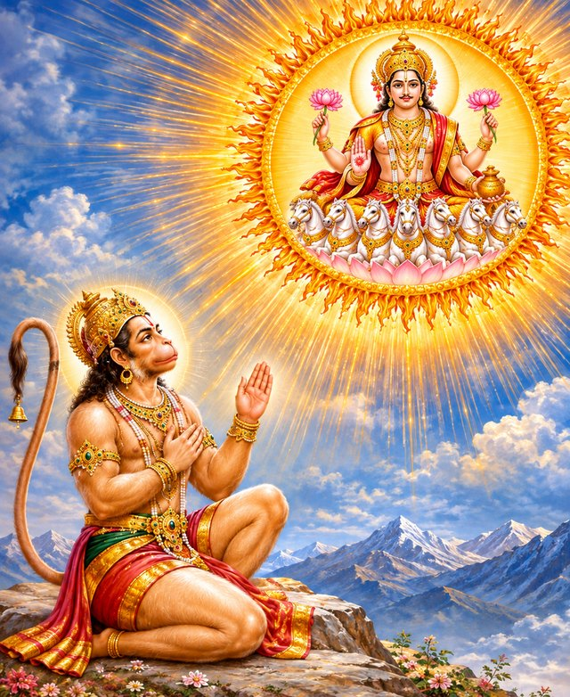
एक समयकी बात है, जब अत्यन्त अद्भुत लीला करनेवाले भगवान् शम्भुको भगवान् विष्णुके मोहिनीरूपका दर्शन प्राप्त हुआ, तब कामदेवके बाणोंसे आहत होकर उन परमेश्वरने रामकार्यकी सिद्धिके लिये अपना वीर्यपात किया। तब सप्तर्षियोंने उस वीर्यको पत्रपुटकमें स्थापितकर रामकार्यकी सिद्धिके लिये गौतमकन्या अंजनीमें कानके रास्ते स्थापित कर दिया। समय आनेपर उस गर्भसे शम्भु महान् बल–पराक्रमसे सम्पन्न वानर शरीर धारण करके उत्पन्न हुए। उनका नाम हनुमान् रखा गया। महाबली हनुमान् जब शिशु ही थे, उसी समय उदय होते हुए सूर्यबिम्बको छोटा–सा फल समझकर तुरन्त ही निगल गये। बादमें उन्होंने उसे महाबली सूर्य जानकर उगल दिया। देवर्षियोंने उन्हें शिवका अवतार माना और बहुत–से वरदान दिये। फिर माताकी आज्ञासे धीर–वीर हनुमान्ने सूर्यके निकट जाकर उनसे अनायास ही सारी विद्याएँ सीख लीं। तदनन्तर नन्दीश्वरने भगवान् रामका सम्पूर्ण चरित्र संक्षेपसे वर्णन करके कहा–मुने! कपिश्रेष्ठ हनुमान्ने सब तरहसे श्रीरामका कार्य सम्पूर्ण किया, नाना प्रकारकी लीलाएँ कीं। इस प्रकार मैंने हनुमान्जीका श्रेष्ठ चरित्र, जो सम्पूर्ण अभीष्ट फलोंका दाता है, तुमसे वर्णन कर दिया।
भगवान् शिवका पिप्पलाद–अवतार
सनत्कुमारजी! अब आप महेश्वरके ‘पिप्पलाद–अवतार’ का वर्णन श्रवण करें।
एक समय दैत्योंने वृत्रासुरकी सहायतासे इन्द्र आदि समस्त देवताओंको पराजित कर दिया। तब उन सभी देवताओंने तथा देवर्षियोंने ब्रह्मलोक जाकर ब्रह्माजीसे अपना दुःख कह सुनाया। ब्रह्माजीने सारा रहस्य प्रकट करते हुए कहा कि यह सब त्वष्टाकी करतूत है। त्वष्टाने ही तुमलोगोंका वध करनेके लिये तपस्याद्वारा इस महातेजस्वी वृत्रासुरको उत्पन्न किया। इसके वधका मैं एक उपाय बताता हूँ, सुनो। जो दधीचि नामक तपस्वी महामुनि हैं, उन्होंने पूर्वकालमें शिवजीकी आराधनाकर वज्रके समान हड्डियोंवाला होनेका वरदान पाया था। आप लोग उनके पास जाकर अस्थियोंके लिये याचना कीजिये, वे अवश्य दे देंगे। फिर उन अस्थियोंसे वज्रदण्डका निर्माण करके तुम निश्चय ही उससे वृत्रासुरको मार डालना। ब्रह्माजीका यह वचन सुनकर देवगुरु बृहस्पति देवताओंको साथ लेकर दधीचि ऋषिके आश्रमपर पहुँचे और वहाँ इन्द्रने विनम्र होकर दधीचिजीको प्रणाम किया। दधीचिने देवताओंके अभिप्रायको जान अपनी पत्नी सुवर्चाको आश्रमसे अन्यत्र भेज दिया।
इन्द्रने कहा–मुने! हम सभी देवता तथा देवर्षि त्वष्टाद्वारा अपमानित होनेके कारण आपकी शरणमें आये हैं। आप अपनी वज्रमयी अस्थियाँ हमें प्रदान करें। आपकी अस्थियोंसे वज्रका निर्माणकर मैं उन देवद्रोहियोंका वध करूँगा।
दधीचि मुनिने अपने स्वामी भगवान् शिवका ध्यान करके अपना शरीर छोड़ दिया। तदनन्तर इन्द्रने शीघ्र ही स्वर्गसे सुरभि गौको बुलवाकर उसके द्वारा उनके शरीरको चटवाया और उनकी अस्थियोंसे अस्त्र–निर्माण करनेके निमित्त विश्वकर्माको आज्ञा दी।
विश्वकर्माने अस्थियोंसे सम्पूर्ण अस्त्रोंका निर्माण कर दिया।
उसके बाद इन्द्रने शीघ्रतासे वज्रके द्वारा पर्वत–शिखरके समान वृत्रासुरका सिर काट दिया।
उधर दधीचिकी पतिव्रता पत्नी सुवर्चा पुनः घर लौटीं तो अपने पतिको वहाँ न देखकर तथा देवताओंके अत्यन्त अशोभनीय कर्मको देखकर अत्यधिक रुष्ट होकर उन्हें शाप देते हुए कहा–हे देवगणो! इन्द्रसहित सभी देवता आजसे पशु हो जायेँ।
इसके बाद उस पतिव्रताने अपने पतिके लोकमें जानेकी इच्छा की और पवित्र काष्ठोंकी चिता बनायी। उसी समय आकाशवाणीने मुनिपत्नी सुवर्चासे कहा–हे प्राज्ञे! तुम्हारे उदरमें गर्भरूपसे मुनिका तेज विद्यमान है। तुम उसे प्रयत्नपूर्वक उत्पन्न करो। सगर्भाको सती नहीं होना चाहिये–ऐसी वेदकी आज्ञा है।
तदनन्तर उनके उदरसे दधीचिके उत्तम तेजसे प्रादुर्भूत परम दिव्य शरीरवाला एक पुत्र उत्पन्न हुआ, जो साक्षात् रुद्रका अवतार था।
तत्पश्चात् पतिलोक जानेकी इच्छावाली सुवर्चाने अपने पुत्रसे प्रेमपूर्वक कहा–हे तात! तुम बहुत समयतक इस पीपल वृक्षके समीप रहो, अब मुझे पतिलोक जानेके लिये अति प्रसन्नतापूर्वक आज्ञा प्रदान करो। मैं अपने पतिके साथ तुझ रुद्रस्वरूपका ध्यान करती रहूँगी।
सुवर्चाके गर्भसे पुत्ररूपसे पृथ्वीपर शिवजीको अवतरित हुआ जानकर ब्रह्मा, विष्णु तथा देवतागण वहाँ पहुँचे और बड़ा उत्सव मनाया। ब्रह्माजीने पीपल वृक्षद्वारा संरक्षित दधीचिके उस पुत्रका विधिवत् जातक आदि संस्कार करके उसका नाम ‘पिप्पलाद’ रखा।
इस प्रकार ब्रह्मा, विष्णु तथा समस्त देवगण महोत्सव मनाकर अपने–अपने स्थानको चले गये। पिप्पलाद उसी पीपल वृक्षके नीचे संसारहितकी इच्छासे बहुत कालतक तप करते रहे।
कुछ समयके बाद पिप्पलादने राजा अनरण्यकी कन्या पद्मासे विवाह कर लिया। उन मुनिके दस पुत्र उत्पन्न हुए, जो सब–के–सब पिताके ही समान महात्मा और अतुल तपस्वी थे।
इस प्रकार महाप्रभु शंकरके लीलावतार मुनिवर पिप्पलादने नाना प्रकारकी लीलाएँ कीं। उन कृपालुने जगतमें शनैश्चरकी पीड़ाको, जिसका निवारण करना सबकी शक्तिके बाहर था, देखकर लोगोंको यह वरदान दिया कि जन्मसे लेकर सोलह वर्षतककी आयुवाले मनुष्योंको तथा शिवभक्तोंको शनिपीड़ा नहीं हो सकती। यदि कहीं शनि मेरे वचनोंका अनादर करके उन मनुष्योंको पीड़ा पहुँचायेगा तो वह निःसन्देह भस्म हो जायगा।
इस प्रकार लीलासे मनुष्यरूप धारण करनेवाले पिप्पलादका उत्तम चरित्र तुम्हें सुना दिया, यह सम्पूर्ण कामनाओंको पूर्ण करनेवाला है।
इसके अनन्तर नन्दीश्वरने विभिन्न अवतारोंका वर्णन करते हुए भगवान् शिवके द्विजेश्वरावतार, यतिनाथ एवं हंस–अवतार, कृष्णदर्शन नामक अवतार, अवधूतेश्वर–अवतार, भिक्षुवर्यावतार आदिकी कथाओंका वर्णन विशेष रूपमें प्रस्तुत किया।
भगवान् शिवका सुरेश्वरावतार
इसके पश्चात् नन्दीश्वरजी कहते हैं–सनत्कुमारजी! अब मैं परमात्मा शिवके सुरेश्वरावतारका वर्णन करता हूँ। उपमन्यु व्याघ्रपाद मुनिके पुत्र थे। उन्होंने पूर्वजन्ममें ही सिद्धि प्राप्त कर ली थी और वर्तमान जन्ममें मुनिकुमारके रूपमें प्रकट हुए थे। वे अपनी दरिद्रताके कारण शैशवावस्थासे ही माताके साथ मामाके घरमें रहते थे। एक दिन उन्हें बहुत कम दूध पीनेको मिला। वे अपनी मातासे बार–बार दूध माँगने लगे। उनकी तपस्विनी माताने कुछ बीजोंको सिलपर पीसकर और उन्हें पानीमें घोलकर कृत्रिम दूध बेटेको पीनेको दिया। उस नकली दूधको पीकर बालक उपमन्यु बोले–‘यह तो दूध नहीं है।’ इतना कहकर वे फिर रोने लगे।
माताने कहा–बेटा! हम लोग वनमें निवास करते हैं, हमें यहाँ दूध कहाँसे मिल सकता है? भगवान् शिवकी कृपाके बिना किसीको दूध नहीं मिलता। माताकी यह बात सुनकर उपमन्युने
भगवान् शिवकी आराधना करनेका निश्चय किया। वे तपस्याके लिये हिमालयपर्वतपर गये। वहाँ उन्होंने आठ ईंटोंका एक मन्दिर बनाया, जिसमें मिट्टीके शिवलिंगकी स्थापना करके जंगलके पत्र–पुष्पादिसे पंचाक्षरमन्त्रके उच्चारणपूर्वक शिवकी पूजा करने लगे। माता पार्वती और शिवका ध्यान करके उनकी पूजा करनेके पश्चात् वे पंचाक्षरमन्त्रका जप किया करते थे। जप करते हुए उन्होंने घोर तपस्या सम्पन्न की। भगवान् सदाशिव कृपापूर्वक प्रकट हो गये और उपमन्युको अपना पुत्र माना। उनका मस्तक सूँघकर कहा–वत्स! मैं तुम्हारा पिता और ये पार्वती देवी तुम्हारी माता हैं। तुम्हें आजसे सनातन कुमारत्व प्राप्त होगा। मैं तुम्हारे लिये दूध, दही और मधुके सहस्रों समुद्र देता हूँ। मैं तुम्हें अमरत्व तथा अपने गणोंका आधिपत्य प्रदान करता हूँ।
इतना कहकर भगवान् शिव अन्तर्धान हो गये। उपमन्युने वर पाकर प्रसन्नतापूर्वक घर आकर अपनी मातासे सब बातें बतायीं। माताको बड़ा हर्ष हुआ। इस प्रकार मैंने तुमसे परमेश्वर शिवके सुरेश्वरावतारका वर्णन किया।
भगवान् शिवका किरातावतार
नन्दीश्वरजी कहते हैं–हे सनत्कुमारजी! अब मैं आशुतोष भगवान् शिवके किरातावतारका वर्णन करता हूँ, जिसमें उन्होंने अपने भक्त नरश्रेष्ठ अर्जुनकी ‘मूक’ नामक दैत्यसे रक्षा की और उनसे युद्ध–लीलामें प्रसन्न होकर उन्हें अपना अमोघ पाशुपतास्त्र प्रदान किया।
भगवान् शिवके इस पावन अवतारकी कथा इस प्रकार है–पाण्डवोंके वनवासकालकी बात है। अर्जुन श्रीकृष्णकी सम्मति और व्यासजीके आदेशसे शस्त्रास्त्रोंकी प्राप्तिके लिये इन्द्रकीलपर्वतपर तपस्या कर रहे थे। वे भगवान् शंकरके पंचाक्षरमन्त्रका जप करते हुए तपमें सन्नद्ध थे। उनकी घोर तपस्या देखकर देवताओंने भगवान् शंकरसे उन्हें वर देनेकी प्रार्थना की। उधर जब
दुर्योधनको अर्जुनकी तपस्याकी बात ज्ञात हुई, तो उस दुरात्माने मूक नामक एक मायावी राक्षसको उनका वध करनेके लिये भेजा।
वह दुष्ट असुर शूकरका वेश धारणकर अर्जुनके समीप पहुँचा और वहाँके पर्वतशिखरों और वृक्षोंको ढहाने लगा। उसकी भयंकर गुर्राहटसे दसों दिशाएँ गूँज रही थीं। यह देखकर भक्तहितकारी भगवान् शंकर किरातवेश धारणकर प्रकट हुए।
शूकरको अपनी ओर आते देखकर अर्जुनने उसपर शर–संधान किया, ठीक उसी समय किरातवेशधारी भगवान् शंकरने भी अपने भक्त अर्जुनकी रक्षाहेतु उस शूकररूपधारी दानव मूकपर अपना बाण चलाया। दोनों बाण एक ही साथ उस शूकरके शरीरमें प्रविष्ट हो गये और वह वहीं गिरकर मर गया। उसे मारकर अर्जुनने अपने आराध्य भगवान् शंकरका ध्यान किया और अपने बाणको उठानेके लिये उस शूकरके पास पहुँचे। इतनेमें ही किरातवेशधारी शिवका एक गण भी वनेचरके रूपमें बाण लेनेके लिये आ पहुँचा और अर्जुनको बाण उठानेसे रोककर कहने लगा कि यह मेरे स्वामीका बाण है, जिसे उन्होंने तुम्हारी रक्षाके लिये चलाया था, परंतु तुम तो इतने कृतध्न हो कि उपकार माननेके बजाय उनके बाणको ही चुराये ले रहे हो। यदि तुझे बाणकी ही आवश्यकता है तो मेरे स्वामीसे माँग ले, वे ऐसे बहुत–से बाण तुझे दे सकते हैं।
अर्जुनने कहा–यह मेरा बाण है, इसपर मेरा नाम अंकित है। इस बाणको मैं तुझे ले जाने देकर अपने कुलकी कीर्तिमें दाग नहीं लगवा सकता। भगवान् शंकरकी कृपासे मैं स्वयं अपनी रक्षा करनेमें समर्थ हूँ। अगर तेरे स्वामीमें बल है तो वे आकर मुझसे युद्ध करें। दूतने अर्जुनकी कही हुई सारी बातें जाकर अपने स्वामीसे विशेष रूपसे कह दीं, जिसे सुनकर किरातवेशधारी भगवान् शिव अपने भीलरूपी
गणोंकी महान् सेना लेकर अर्जुनके सम्मुख आ गये। उन्हें आया हुआ देखकर अर्जुनने भगवान् शिवका ध्यानकर अत्यन्त भीषण संग्राम छेड़ दिया। उस घोर युद्धमें अर्जुनने शिवजीका ध्यान किया, जिससे उनका बल बढ़ गया। तदनन्तर उन्होंने किरातवेशधारी शिवके दोनों पैर पकड़कर उन्हें घुमाना शुरू कर दिया। लीलास्वरूपधारी लीलामय भगवान् शिव भक्तपराधीन होनेके कारण हँसते रहे। तत्पश्चात् उन्होंने अपना वह सौम्य एवं अद्भुत रूप प्रकट किया, जिसका अर्जुन चिन्तन करते थे।
किरातके उस सुन्दर रूपको देखकर अर्जुनको महान् विस्मय हुआ। वे लज्जित होकर पश्चात्ताप करने लगे। उन्होंने मस्तक झुकाकर भगवान् शिवको प्रणाम किया और खिन्नमन हो अपनेको धिक्कारने लगे। उन्हें पश्चात्ताप करते देखकर भक्तवत्सल भगवान् महेश्वरका चित्त प्रसन्न हो गया। उन्होंने कहा–पार्थ! तुम तो मेरे परमभक्त हो, यह तो मैंने तुम्हारी परीक्षा लेनेके लिये ऐसी लीला रची थी। उन्होंने प्रेमपूर्वक अर्जुनका आलिंगन किया और बोले–हे पाण्डवश्रेष्ठ! मैं तुमसे परम प्रसन्न हूँ, तुम वर माँगो।
यह सुनकर प्रसन्नमन अर्जुनने अपने आराध्य भगवान् शिवकी वेदसम्मत स्तुति की और भगवान् शिवके पुनः ‘वर माँगो’ कहनेपर नतमस्तक हो उन्हें प्रणाम किया और प्रेमपूर्वक गदगद वाणीमें कहा–हे विभो! मेरे संकट तो आपके दर्शनसे ही दूर हो गये हैं, अब जिस प्रकार मुझे इस लोककी परासिद्धि प्राप्त हो सके, वैसी कृपा कीजिये।
पाण्डुपुत्र अर्जुनमें अपनी अनन्य भक्ति देखकर भगवान् महेश्वरने उन्हें अपना पाशुपत नामक महान् अस्त्र प्रदान किया और समस्त शत्रुओंपर विजय–लाभ पानेका आशीर्वाद दिया।
हे मुने! इस प्रकार मैंने लीलामय परम कौतुकी भगवान् शंकरके किरातावतारका वर्णन किया। जो इसे सुनता अथवा दूसरेको सुनाता है, उसकी सारी मनोकामनाएँ पूर्ण हो जाती हैं।
कोटिरुद्रसंहिता
द्वादश ज्योतिर्लिंगोंका नाम–निर्देश
ऋषि बोले– सूतजी! आपने सम्पूर्ण लोकोंके हितकी कामनासे नाना प्रकारके आख्यानोंसे युक्त जो शिवावतारका माहात्म्य बताया है, वह बहुत ही उत्तम है। तात! आप पुनः शिवके परम उत्तम माहात्म्यका तथा शिवलिंगकी महिमाका प्रसन्नतापूर्वक वर्णन कीजिये। भूमण्डलमें अथवा अन्य स्थलोंमें भी जो–जो प्रसिद्ध शुभ शिवलिंग विराजमान हैं, भगवान् शिवके उन सभी दिव्य लिंगोंका समस्त लोकोंके हितकी इच्छासे आप वर्णन कीजिये। सूतजीने कहा–महर्षियो! सम्पूर्ण तीर्थ लिंगमय हैं। सब कुछ लिंगमें ही प्रतिष्ठित है। उन शिवलिंगोंकी कोई गणना नहीं है तथापि मैं उनका किंचित् वर्णन करता हूँ। संसारमें कोई भी वस्तु शिवके स्वरूपसे भिन्न नहीं है। मुनिश्रेष्ठ शौनक! इस भूमण्डलपर जो मुख्य–मुख्य ज्योतिर्लिंग हैं, उनका मैं वर्णन करता हूँ। उनका नाम सुननेमात्रसे पाप दूर हो जाते हैं–सौराष्ट्रमें सोमनाथ, श्रीशैलपर मल्लिकार्जुन, उज्जयिनीमें महाकाल, ओंकारतीर्थमें परमेश्वर, हिमालयके शिखरपर केदार, डाकिनीक्षेत्रमें भीमशंकर, वाराणसीमें विश्वनाथ, गोदावरीके तटपर त्र्यम्बक, चिताभूमिमें वैद्यनाथ, दारुकावनमें नागेश, सेतुबन्धमें रामेश्वर तथा शिवालयमें घुश्मेश्वरका स्मरण करे। जो प्रतिदिन प्रातःकाल उठकर इन बारह नामोंका पाठ करता है, उसके सभी प्रकारके पाप छूट जाते हैं और उसे सम्पूर्ण सिद्धियोंका फल प्राप्त हो जाता है–
सौराष्ट्रे सोमनाथं च श्रीशैले मल्लिकार्जुनम्।
उज्जयिन्यां महाकालमोङ्कारे परमेश्वरम्॥
केदारं हिमवत्पृष्ठे डाकिन्यां भीमशङ्करम्।
वाराणस्यां च विश्वेशं त्र्यम्बकं गौतमीतटे॥
वैद्यनाथं चिताभूमौ नागेशं दारुकावने।
सेतुबन्धे च रामेशं घुश्मेशं तु शिवालये॥
द्वादशैतानि नामानि प्रातरुत्थाय यः पठेत्।
सर्वपापैर्विनिर्मुक्तः सर्वसिद्धिफलं लभेत्॥
इन लिंगोंपर चढ़ाया गया प्रसाद सर्वदा ग्रहण करनेयोग्य होता है, उसे श्रद्धासे विशेष यत्नपूर्वक ग्रहण करना चाहिये। ऐसा करनेवालेके समस्त पाप उसी क्षण विनष्ट हो जाते हैं।
हे मुनीश्वरो! म्लेच्छ, अन्त्यज अथवा नपुंसक कोई भी हो, वह ज्योतिर्लिंगके दर्शनके प्रभावसे द्विजकुलमें जन्म लेकर मुक्त हो जाता है। इसलिये ज्योतिर्लिंगका दर्शन अवश्य करना चाहिये।
इस प्रकार संक्षेपमें इन ज्योतिर्लिंगों के दर्शनके फलका वर्णन किया गया, अब इसके अनन्तर इनके उपलिंगोंका वर्णन भी यहाँ विस्तारपूर्वक प्रस्तुत किया गया है।
काशी आदिके विभिन्न लिंगोंका वर्णन
सूतजी कहते हैं–गंगाके तटपर परम प्रसिद्ध काशीनगरी है, जो सबको मुक्ति प्रदान करनेवाली है। उसे लिंगमयी ही जानना चाहिये। वह सदाशिवकी निवास–स्थली मानी गयी है। इतना कहकर सूतजीने काशीके अविमुक्त, कृत्तिवासेश्वर, तिलभाण्डेश्वर, दशाश्वमेधेश्वर इत्यादि और गंगासागर आदिके संगमेश्वर, भूतेश्वर, नारीश्वर, वटुकेश्वर, पूरेश्वर, सिद्धनाथेश्वर, दूरेश्वर, शृंगेश्वर, वैद्यनाथ, जप्येश्वर, गोपेश्वर, रंगेश्वर, वामेश्वर, नागेश, कामेश, विमलेश्वर; प्रयागके ब्रह्मेश्वर, सोमेश्वर, भारद्वाजेश्वर, शूलटंकेश्वर, माधवेश तथा अयोध्याके नागेश आदि अनेक प्रसिद्ध शिवलिंगोंका वर्णन किया।
अत्रीश्वरका प्राकट्य एवं मन्दाकिनी गंगाका आविर्भाव
सूतजी बोले–ब्रह्मपुरीके समीप चित्रकूटपर्वतपर मत्तगजेन्द्र नामक लिंग है, उसके पूर्वमें कटीश्वर नामक लिंग है। गोदावरी नदीके पश्चिमकी ओर पशुपति नामक लिंग है। दक्षिण दिशामें एक अत्रीश्वर नामक लिंग है, जिसके रूपमें साक्षात् शिवजीने अपने अंशसे स्वयं प्रकट होकर समस्त प्राणियोंको जीवनदान दिया था।
सूतजी आगे कहते हैं–हे शिष्ट ऋषियों! चित्रकूटके समीप दक्षिण दिशामें कामद नामक एक विशाल वन है, वहाँ ब्रह्माके पुत्र महर्षि अत्रि अपनी पत्नी अनसूयाके साथ अति कठिन तप करते थे। मुनिवर अत्रि स्वयं आसनपर स्थिर हो समाधिमें लीन हो गये तथा आत्मामें स्थित निर्विकार शिवस्वरूप परमज्योतिका ध्यान करने लगे। पतिव्रता अनसूया प्रसन्नताके साथ निरन्तर उन मुनिश्रेष्ठकी सेवा करने लगीं। वे सुन्दर पार्थिव शिवलिंग बनाकर मन्त्रके द्वारा विधिवत् मानस–उपचारोंसे पूजन करती थीं और बारम्बार शंकरजीकी सेवाकर भक्तिसे उनकी स्तुति करती थीं। उन अत्रिकी तपस्या तथा अनसूयाके शिवाराधनसे प्रसन्न होकर सम्पूर्ण देवता, ऋषिगण तथा गंगा आदि सभी नदियाँ उन दोनोंका दर्शन करनेके लिये प्रेमपूर्वक वहाँ आये और उन्हें देखकर आश्चर्यचकित हुए। वे अत्रिके शिवाराधन और अनसूयाकी पतिसेवाकी प्रशंसा करने लगे।
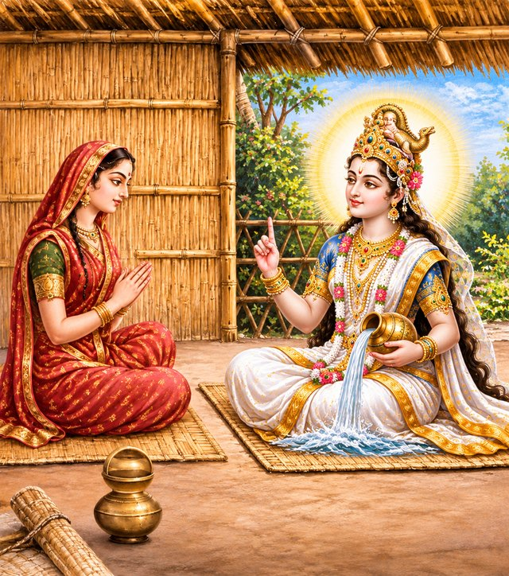
इस प्रकार उनकी प्रशंसा करके वे जैसे आये थे, वैसे ही अपने–अपने स्थानको चले गये, परंतु गंगाजी और शिवजी वहाँ स्थित रहे।
‘एक दिन अनसूयाजी पतिके लिये जल लाने वनकी ओर जा रही थीं, उनकी उस पतिभक्तिसे प्रसन्न होकर गंगाजी बोलीं–‘हे देवि! मैं तुम्हारे धर्माचरण और शिवाराधनसे तुमपर प्रसन्न हूँ। तुम जो चाहती हो, उसे माँगो।’ तब अनसूयाजीने कहा–यदि आप प्रसन्न हैं और मुझपर आपकी कृपा है तो हे देवि! इस तपोवनमें आप स्थिर होकर निवास करें।
गंगाजी बोलीं–हे अनसूये! यदि तुम भगवान् शंकरके अर्चन और अपने स्वामीकी वर्षभरकी सेवाका फल मुझे प्रदान करो तो मैं देवताओंके उपकारके लिये यहाँ स्थित रहूँगी। पतिव्रता स्त्रीको देखकर मेरा पाप नष्ट हो जाता है और मैं विशेषरूपसे शुद्ध हो जाती हूँ।
पतिव्रता स्त्री पार्वतीके तुल्य है। यह वचन सुनकर अनसूयाने वर्षभरका सारा पुण्य गंगाको दे दिया। अनसूयाके इस महान् पातिव्रत कर्मको देखकर महादेव प्रसन्न हो गये और उसी क्षण पार्थिव लिंगसे प्रकट हो गये। वे सदाशिव अत्रीश्वर नामसे प्रसिद्ध हुए और गंगाजी भी अपनी मायासे वहाँ स्थित हो गयीं, जो मन्दाकिनी नामसे प्रसिद्ध हुईं।
नर्मदाके तटपर नन्दिकेश्वरका प्रादुर्भाव
हे मुनीश्वरो! इस प्रकार मैंने अत्रीश्वरकी उत्पत्ति एवं माहात्म्य आपसे कहा, जो समस्त मनोरथोंको पूर्णकर भक्तिको बढ़ानेवाला है।
सूतजी कहते हैं–हे सुव्रतो! रेवानदीके तटपर जितने शिवलिंग हैं, उनकी गणना नहीं की जा सकती। रुद्रस्वरूप वह रेवा दर्शनमात्रसे पापोंका नाश करती है और उसमें जो भी पाषाण स्थित हैं, वे शिवस्वरूप हैं। भोग एवं मोक्षको देनेवाले कई प्रमुख शिवलिंग वहाँ स्थित हैं, जिनमें नन्दिकदेव सम्पूर्ण कामनाओंको पूर्ण करनेवाले कहे गये हैं। जो रेवा नदीके तटपर स्नान करके भगवान् नन्दिकेश्वरका पूजन करता है, उसे सम्पूर्ण सिद्धियाँ प्राप्त होती हैं।
ऋषिगणोंके पूछनेपर सूतजीने कहा–महर्षियो! पूर्व समयमें किसी ब्राह्मणकी ऋषिका नामक एक कन्या थी। उसने अपनी उस कन्याका विवाह विधानपूर्वक किसी ब्राह्मणसे कर दिया। वह द्विजपत्नी अपने पूर्वजन्मके किसी अशुभ कर्मके प्रभावसे बाल्यावस्थामें ही विधवा हो गयी। तब वह ब्राह्मणपत्नी ब्रह्मचर्यव्रतके पालनमें तत्पर हो पार्थिव–पूजनपूर्वक कठोर तप करने लगी। उसी समय महामायावी ‘मूढ’ नामक दुष्ट असुर कामबाणसे पीड़ित होकर वहाँ गया तथा तपस्या करती हुई उस सुन्दरी स्त्रीको देखकर अनेक प्रकारका प्रलोभन देकर उसके साथ सहवासकी याचना करने लगा। तपस्यामें संलग्न उस ब्राह्मणीद्वारा तिरस्कृत हुए उस दैत्यने उसपर अत्यन्त क्रोध किया, अपना विकट रूप दिखाते हुए दुर्वचन कहकर डराने लगा। तब शिव–परायणा वह द्विजपत्नी भयभीत होकर अत्यन्त व्याकुल हो ‘शिव’ नामका जप करती हुई अपने धर्मकी रक्षाके लिये शिवजीकी शरणमें चली गयी। तब शरणागतकी रक्षा, सदाचारकी स्थापना तथा उस ब्राह्मणीको आनन्द प्रदान करनेके लिये सदाशिव वहीं प्रकट हो गये।
भक्तवत्सल भगवान् शंकरने उस दैत्यराज मूढ़को तत्काल भस्म कर दिया और ब्राह्मणीकी ओर कृपा–दृष्टिसे देखते हुए कहा– ‘वर माँगो।’
ऋषिका बोली–देवदेव महादेव! आप मुझे अपने चरणोंकी परम उत्तम एवं अनन्य भक्ति प्रदान कीजिये। प्रभो! मेरी दूसरी प्रार्थना है कि आप लोककल्याणके निमित्त यहीं पर निवास कीजिये। भगवान् शंकरने कहा–हे ऋषिके! तुमने जो–जो वर माँगे, उन सभीको मैं तुम्हें प्रदान करता हूँ।
इस अवसरपर शिवजीको प्रकट हुआ जानकर ब्रह्मा, विष्णु आदि देवता वहाँ पहुँच गये और प्रसन्नचित्त होकर उनकी स्तुति की। इसी समय भगवती गंगाजीने वहाँ आकर साध्वी ऋषिकाके
भाग्यकी प्रशंसा करते हुए प्रसन्नचित्त होकर उससे कहा–हे साध्वी! तुम वैशाख महीनेमें एक दिन मेरे कल्याणके लिये अपने समीपमें रहनेका मुझे वचन दो, जिससे मैं एक दिन तुम्हारा सामीप्य प्राप्त करूँ। गंगाजीका वचन सुनकर उस साध्वीने इसे स्वीकार किया। शिवजी भी उसके द्वारा निर्मित उस पार्थिव लिंगमें अपने पूर्णाशसे प्रविष्ट हो गये। उसी दिनसे नर्मदाका यह तीर्थ ऐसा उत्तम और परम पावन तीर्थ हो गया, जहाँ शिवजी नन्दिकेश नामसे प्रसिद्ध होकर स्थित हैं। गंगा भी प्रतिवर्ष वैशाखमासकी सप्तमीके दिन सबके कल्याणकी इच्छासे तथा अपने उस पापको धोनेके लिये वहाँ जाती हैं, जो मनुष्योंसे वे ग्रहण करती हैं।
पश्चिमदिशाके शिवलिंगोंके वर्णन–क्रममें महाबलेश्वरलिंगका माहात्म्य
सूतजी कहते हैं–हे ब्राह्मणों! अब पश्चिम दिशामें जो–जो लिंग भूतलपर प्रसिद्ध हैं, उन शिवलिंगोंको सद्भक्तिपूर्वक सुनिये।
कपिलानगरीमें कालेश्वर एवं रामेश्वर नामक दो महादिव्य लिंग हैं, जो दर्शनमात्रसे पापोंको नष्ट करते हैं। पश्चिम सागरके तटपर महासिद्धेश्वर लिंग है, जो धर्म, अर्थ, काम एवं मोक्षतक प्रदान करता है।
पश्चिम समुद्रके तटपर गोकर्ण नामक उत्तम क्षेत्र है। यह ब्रह्महत्यादि पापोंको नष्ट करनेवाला और सम्पूर्ण कामनाओंका फल प्रदान करनेवाला है। गोकर्णक्षेत्रमें करोड़ों शिवलिंग हैं और पग–पगपर असंख्य तीर्थ हैं। अधिक क्या कहें, गोकर्णक्षित्रमें स्थित सभी लिंग शिवस्वरूप हैं और वहाँका समस्त जल तीर्थस्वरूप है।
गोकर्णक्षेत्रमें स्थित महाबलेश्वर शिवलिंग कृतयुगमें श्वेतवर्ण, त्रेतामें लोहितवर्ण, द्वापरमें पीतवर्ण और कलियुगमें श्यामवर्णका हो जाता है। महापाप करनेवाले लोग भी यहाँ गोकर्णक्षेत्रमें विराजमान महाबलेश्वर लिंगकी पूजाकर ‘शिव’ पदको प्राप्त हुए हैं।
उत्तरदिशामें विद्यमान शिवलिंगोंका वर्णन
सूतजी बोले–हे ब्राह्मणों! अब मैं उत्तरदिशामें विराजमान मुख्य–मुख्य शिवलिंगोंका वर्णन कर रहा हूँ।
गोकर्ण नामक एक दूसरा भी पापनाशक क्षेत्र है, वहाँपर एक विस्तृत महावन है, जिसमें चन्द्रभाल नामक उत्तम शिवलिंग है, जिसे रावण सद्भक्तिपूर्वक लाया था। गोकर्णमें स्नानकर तथा चन्द्रभालका पूजनकर मनुष्य अवश्य ही शिवलोकको प्राप्त करता है।
मिश्रर्षि नामक उत्तम तीर्थमें दाधीच नामक शिवलिंग है, इसे दधीचिमुनिने स्थापित किया था। वहाँ जाकर विधिपूर्वक स्नानकर दाधीचेश्वरका आदरपूर्वक पूजन अवश्य करना चाहिये।
नैमिषारण्यमें सभी ऋषियोंद्वारा स्थापित ऋषीश्वर नामक शिवलिंग है, उसके दर्शन एवं पूजनसे पापी लोगोंको भी भोग तथा मोक्ष प्राप्त होता है। देवप्रयागतीर्थमें ललितेश्वर नामक शिवलिंग है, उसकी पूजा करनेसे सभी प्रकारके पाप दूर हो जाते हैं।
पृथ्वीपर प्रसिद्ध नेपाल नामक पुरीमें पशुपतीश्वर नामक शिवलिंग है, जो सम्पूर्ण कामनाओंको पूर्ण करता है। इसके समीप मुक्तिनाथ नामक अत्यन्त अद्भुत शिवलिंग है, उसके दर्शन एवं अर्चनसे सम्पूर्ण मनोरथ पूर्ण होते हैं।
द्वादश ज्योतिर्लिंगोंका वर्णन
आगेके अध्यायों में हाटकेश्वर लिंग एवं अन्धकेश्वर लिंग आदि लिंगोंकी महिमाका वर्णन करनेके उपरान्त सूतजीने द्वादश ज्योतिर्लिंगों के प्रादुर्भावकी कथा एवं उनकी महिमाका वर्णन कई अध्यायोंमें विस्तारपूर्वक किया है।
मणिकर्णिका एवं काशीका प्राकट्य
सोमनाथ, महाकाल, ओंकारेश्वर, केदारेश्वर एवं भीमशंकर इत्यादि ज्योतिर्लिंगोंकी कथाके अनन्तर विश्वेश्वर ज्योतिर्लिंग वाराणसी, मणिकर्णिका एवं पंचक्रोशीकी महत्ताका प्रतिपादन करते हुए सूतजी कहते हैं–संसारमें जो भी कोई वस्तु दिखायी पड़ती है, वह सच्चिदानन्द–स्वरूप, निर्विकार एवं सनातन ब्रह्मरूप है। अपने कैवल्य (अद्वैत) भावमें ही रमनेवाले उन अद्वितीय परमात्मामें कभी एक–से दो हो जानेकी इच्छा जाग्रत् हुई। फिर वे ही परमात्मा सगुणरूपमें प्रकट होकर शिव कहलाये। वे ही स्त्री तथा पुरुषके भेदसे दो रूपोंमें हो गये। उनमें जो पुरुष था वह ‘शिव’ एवं जो स्त्री थी वह शक्ति कही गयी। उन चिदानन्दस्वरूप शिव एवं शक्तिने स्वयं अदृष्ट रहकर स्वभावसे ही दो चेतनों (प्रकृति और पुरुष) –की सृष्टि की। जब इस प्रकृति और पुरुषने अपनी जननी एवं जनकको नहीं देखा तब वे महान् संशयमें पड़ गये। उस समय निर्गुण परमात्मासे आकाशवाणी प्रकट हुई कि तुम दोनों तप करो, उसीसे उत्तम सृष्टि होगी। तब निर्गुण शिवने अन्तरिक्षमें स्थित सभी सामग्रियोंसे युक्त पंचक्रोश परिमाणवाला एक शुभ तथा सुन्दर नगर बनाया, जो कि उनका अपना ही स्वरूप था। उस नगरको शिवजीने पुरुषरूप विष्णुके समीप भेज दिया।
विष्णुने सृष्टिकी कामनासे शिवजीका ध्यान करते हुए बहुत कालपर्यन्त तप किया। तपस्याके श्रमसे उनके शरीरसे अनेक जलधाराएँ उत्पन्न हो गयीं, जिसके कारण वहाँ कुछ भी दिखायी नहीं पड़ता था। तब इस आश्चर्यको देखकर विष्णुने अपना सिर हिला दिया। उसी समय विष्णुके कानसे एक मणि गिर गयी, वही मणिकर्णिका नामसे एक महान् तीर्थ हो गया। जब वह पंचक्रोशात्मक नगरी जलराशिमें डूबने लगी, तब निर्गुण शिवने उसे शीघ्र ही अपने त्रिशूलपर धारण कर लिया और विष्णुने अपनी पत्नी प्रकृतिके साथ वहीं शयन किया। तब उनके नाभिकमलसे ब्रह्मा प्रकट हुए। उन्होंने ब्रह्माण्डमें चौदह लोकोंका निर्माण किया। ब्रह्माण्डका विस्तार महर्षियोंने ५० करोड़ योजन बताया है। फिर भगवान् शिवने यह सोचा कि ब्रह्माण्डके भीतर अपने–अपने कर्मोंसे बँधे हुए प्राणी मुझे किस प्रकारसे प्राप्त करेंगे–ऐसा विचारकर उन्होंने पंचक्रोशीको ब्रह्माण्डसे अलग रखा। यह
काशी लोकका कल्याण करनेवाली, कर्म–बन्धनका विनाश करनेवाली, मोक्षतत्वको प्रकाशित करनेवाली तथा ज्ञान प्रदान करनेवाली मुझे अत्यन्त प्रिय है। परमात्मा शिवने अविमुक्त नामक लिंगको स्वयं वहाँ स्थापित किया और कहा–‘हे मेरे अंशस्वरूप! तुम मेरे इस क्षेत्रका कभी त्याग नहीं करना।’ ऐसा कहकर भगवान् सदाशिवने उस काशीपुरीको स्वयं अपने त्रिशूलसे उतारकर मर्त्यलोक–संसारमें स्थापित किया। ब्रह्माजीका एक दिन पूरा होनेपर जब सारे जगत्का प्रलय हो जाता है तब भी इस काशीपुरीका नाश नहीं होता। उस समय भगवान् शिव इसे त्रिशूलपर धारण कर लेते हैं और जब ब्रह्माद्वारा पुनः मेरी सृष्टि की जाती है तब उसे फिर वे इस भूतलपर स्थापित कर देते हैं। कर्मोंका कर्षण करनेसे ही इस पुरीको ‘काशी’ कहते हैं। काशीमें अविमुक्तेश्वर लिंग सदा विराजमान रहता है। यह महापातकी पुरुषोंको भी मुक्त करनेवाला है।
हे मुनीश्वरो! अन्यत्र मोक्षप्रद क्षेत्रोंमें सारूप्य आदि मुक्ति प्राप्त होती है, किंतु यहाँ प्राणियों को सर्वोत्तम सायुज्य मुक्ति प्राप्त होती है। जिनकी कहीं गति नहीं होती, उनके लिये वाराणसीपुरी ही गति है। सभी देवता यहाँ मृत्युकी इच्छा करते हैं; फिर दूसरोंकी तो बात ही क्या! कैलासपति जो भीतरसे सतोगुणी और बाहरसे तमोगुणी कहे गये हैं, वे रुद्रके नामसे विख्यात हैं। वे निर्गुण होते हुए सगुणरूपमें प्रकट हुए शिव हैं। उन्होंने बारम्बार प्रणाम करके निर्गुण शिवसे कहा–हे विश्वनाथ! आप यहाँ रहकर जीवोंका उद्धार करें। तदनन्तर मन तथा इन्द्रियोंको वशमें रखनेवाले अविमुक्तने भी प्रार्थनापूर्वक कहा–देव! काशीपुरीको आप अपनी राजधानी स्वीकार करें। मैं अचिन्त्य सुखकी प्राप्तिके लिये यहाँ सदा आपका ध्यान लगाये स्थिर भावसे बैठा रहूँगा। आप ही मुक्ति देनेवाले तथा सम्पूर्ण कामनाओंके पूर्णकर्ता हैं, दूसरा कोई नहीं। अतः आप परोपकारके लिये उमासहित यहाँ विराजमान रहें।
सूतजी कहते हैं–ब्राह्मणो! जब शंकरने भगवान् विश्वनाथसे इस प्रकार प्रार्थना की, तब सर्वेश्वर शिव समस्त लोकोंका उपकार करनेके लिये वहाँ विराजमान हो गये। जिस दिनसे भगवान् शिव काशीमें आ गये, उसी दिनसे काशी सर्वश्रेष्ठ पुरी हो गयी।
वाराणसी तथा विश्वेश्वरका माहात्म्य
सूतजी बोले–एक समयकी बात है, देवी पार्वतीने संसारके हितकी कामनासे पूरी प्रसन्नताके साथ भगवान् शिवसे अविमुक्तक्षेत्र और अविमुक्त लिंगका महत्त्व पूछा।
तब परमेश्वर शिवने कहा–यह वाराणसी सदा मेरा गोपनीय क्षेत्र है तथा सब प्रकारसे सभी प्राणियोंके मोक्षका हेतु भी है। वाराणसी पुरीमें निवास करना मुझे सदा ही अच्छा लगता है। जिस कारणसे मैं सब कुछ छोड़कर काशीमें रहता हूँ, उसे बताता हूँ, सुनो। जो मेरा भक्त है और जो मेरे तत्त्वका ज्ञानी है, वे दोनों ही मुक्तिके भागी हैं, उन्हें तीर्थकी अपेक्षा नहीं है। उन दोनोंको ही जीवन्मुक्त समझना चाहिये। वे जहाँ कहीं भी मरें, उन्हें शीघ्र ही मुक्ति प्राप्त हो जाती है। यह मैंने निश्चित बात कही है।
हे देवि! इस सर्वश्रेष्ठ अविमुक्त नामक तीर्थमें जो विशेषता है, उसे तुम ध्यान देकर सुनो। सभी वर्ण तथा आश्रमके लोग चाहे वे बालक हों, युवा हों अथवा वृद्ध हों, इस पुरीमें मरनेपर अवश्य मुक्त हो जाते हैं। स्त्री अपवित्र हो या पवित्र, कुमारी हो या विवाहिता, विधवा, बन्ध्या, रजस्वला, प्रसूता अथवा असंस्कृता–चाहे कैसी भी स्त्री हो, यदि वह इस क्षेत्रमें मर जाय तो मुक्ति प्राप्त कर लेती है, इसमें संशय नहीं है। स्वेदज, अण्डज, उद्भिज्ज अथवा जरायुज–ये सभी प्राणी यहाँ मरनेपर जैसा मोक्ष प्राप्त कर लेते हैं, वैसा अन्यत्र कहीं नहीं।
हे देवि! यहाँ न ज्ञानकी अपेक्षा है, न भक्तिकी अपेक्षा है, न सत्कर्मकी अपेक्षा है और न दानकी ही अपेक्षा। यहाँ न संस्कारकी
अपेक्षा है और न ध्यानकी ही अपेक्षा है। यहाँ नाम–कीर्तन अथवा पूजनकी अपेक्षा नहीं है तथा उत्तम जातिकी भी कोई अपेक्षा नहीं है, जो कोई भी मनुष्य मेरे इस मोक्षदायक क्षेत्रमें निवास करता है, वह चाहे जिस किसी प्रकारसे मरा हो, निश्चय ही मोक्षको प्राप्त कर लेता है। अपनी इच्छानुसार भोजन, शयन, क्रीड़ा आदि विविध क्रियाओंको करता हुआ भी अविमुक्तक्षेत्रमें प्राणत्याग करनेवाला प्राणी मोक्षका अधिकारी हो जाता है।
यह क्षेत्र चारों दिशाओंमें सभी ओर पाँच कोसतक फैला हुआ कहा गया है। इसमें कहीं भी मर जानेपर प्राणीको अमृतत्वकी प्राप्ति होती है।
हे पार्वती! शुभ और अशुभ कर्मका फल जीवको अवश्य भोगना पड़ता है। अशुभ कर्म निश्चय ही नरकके लिये होता है एवं शुभ कर्म स्वर्गके लिये होता है। दोनों तरहके कर्मोंसे मनुष्यलोकमें जन्म कहा गया है। शुभाशुभ कर्मोंके न्यूनाधिकसे उत्तम तथा अधम शरीर प्राप्त होते हैं, किंतु जब दोनोंका क्षय हो जाता है, तब मुक्ति होती है; यह सत्य है। प्रारब्ध–कर्मका नाश केवल उसके भोगसे ही होता है, इसके अतिरिक्त कोई उपाय नहीं है। सम्पूर्ण कर्मोंका नाश काशीपुरीके अतिरिक्त कहीं नहीं होता। सभी तीर्थ सुलभ हैं, परंतु काशी पुरी दुर्लभ है। यदि पूर्वजन्ममें आदरपूर्वक काशीका दर्शन किया गया है, तभी काशीमें आकर मनुष्य मृत्युको प्राप्त होता है।
सूतजी बोले–श्रेष्ठ मुनियो! इस प्रकार काशीपुरी तथा विश्वेश्वरलिंगका अपरिमित माहात्म्य है, जो सत्पुरुषोंको भोग और मोक्ष प्रदान करता है।
इसके अनन्तर सूतजीने त्र्यम्बकेश्वर ज्योतिर्लिंगके माहात्म्यका वर्णन करते हुए गौतम ऋषिके प्रभावका वर्णन किया तथा गौतमी–गंगाके प्रादुर्भावका आख्यान सुनाया। इसके अनन्तर सूतजीने राक्षसराज रावणद्वारा स्थापित वैद्यनाथेश्वर नामक ज्योतिर्लिंगके माहात्म्यका वर्णन किया। तदनन्तर उन्होंने नागेश्वर नामक परमश्रेष्ठ ज्योतिर्लिंगकी उत्पत्ति एवं माहात्म्यका वर्णन किया।
इसके साथ ही रामेश्वर नामक ज्योतिर्लिंग एवं घुश्मेश्वर ज्योतिर्लिंगके आविर्भाव एवं माहात्म्यका वर्णन विस्तारसे आगे किया गया है, जो स्थानाभावके कारण यहाँ नहीं दिया जा रहा है। इस प्रकार इन बारह ज्योतिर्लिंगोंकी कथा जो सुनता है, उसकी सभी कामनाएँ पूर्ण होती हैं तथा उसे भोग और मोक्ष दोनोंकी प्राप्ति होती है।
भगवान् विष्णुको सुदर्शन चक्र प्राप्त होनेकी कथा तथा शिवसहस्रनामस्तोत्रकी महिमा
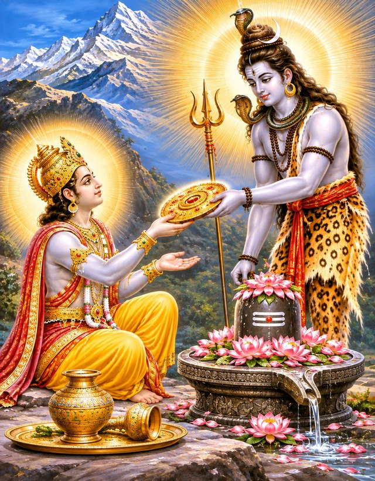
ऋषियोंके यह पूछनेपर कि भगवान् विष्णुको महेश्वरसे सुदर्शन चक्रकी प्राप्ति कैसे हुई; सूतजी कहते हैं कि एक समयकी बात है, दैत्य अत्यन्त प्रबल होकर धर्मका लोप करने लगे। उनसे पीड़ित होकर देवताओंने भगवान् विष्णुसे अपना दुःख कहा। तब श्रीहरि कैलास पर्वतपर जाकर हरीश्वरलिंगकी स्थापनाकर भगवान् शिवकी उनके सहस्र नामोंसे अर्चना करने लगे। वे प्रत्येक नामपर एक कमलपुष्प चढ़ाते थे।
‘एक दिन भगवान् शंकरने उनके भक्तिभावकी परीक्षा लेनेके लिये उनके द्वारा लाये गये एक हजार कमलोंमेंसे एक कमल छिपा लिया। तब एक कमलके न मिलनेपर श्रीहरिने उस कमलको प्राप्त करनेके लिये सारी पृथ्वीका भ्रमण किया, परंतु उसके प्राप्त न होनेपर अपने कमल–सदृश नेत्रको ही निकालकर अर्पण कर दिया। यह देख सर्वदुःखहारी भगवान् शंकर बहुत प्रसन्न हुए और उनके सामने प्रकट हो गये और विष्णुसे वर माँगनेको कहा। विष्णुजी बोले–हे सदाशिव! दैत्योंने सारे संसारको अत्यन्त पीड़ित कर दिया है। मेरा आयुध दैत्योंको मारनेमें समर्थ नहीं हो पा रहा है, अतः मैं आपकी शरणमें आया हूँ।
विष्णुका यह वचन सुनकर देवाधिदेव महेश्वरने उन्हें अपना महातेजस्वी सुदर्शन चक्र प्रदान किया। भगवान् विष्णुने उस चक्रसे शीघ्र ही उन महाबली राक्षसोंको विनष्ट कर दिया। इस प्रकार संसारमें शान्ति हुई। देवता तथा अन्य सभी लोग सुखी हो गये। भगवान् शिवने अपना सुदर्शन चक्र देते हुए कहा–हरे! सब प्रकारके अनर्थोंकी शान्तिके लिये तुम्हें मेरे स्वरूपका ध्यान करना चाहिये। अनेकानेक दुःखोंका नाश करनेके लिये इस सहस्रनामस्तोत्रका पाठ करते रहना चाहिये। यह उत्तम स्तोत्र रोगका नाशक, विद्या और धन देनेवाला, सम्पूर्ण अभीष्टकी प्राप्ति करानेवाला, पुण्यजनक तथा सदा ही मेरी भक्ति देनेवाला है।’
इस प्रकार कहकर सर्वदेवेश्वर भगवान् रुद्र श्रीहरिके अंगका स्पर्शकर उनके देखते–देखते अन्तर्धान हो गये।
ऋषियोंके पूछनेपर सूतजीने शिवसहस्रनामस्तोत्रको सुनाकर उसकी महिमाका वर्णन करते हुए कहा कि जो प्रातःकाल नित्य भगवान् शिवकी पूजा करनेके उपरान्त उनके सम्मुख इसका पाठ करता है, वह इस लोकमें समस्त मनोरथोंको पूर्ण करनेवाली सम्पूर्ण सिद्धि प्राप्त करता है और अन्तमें सायुज्य मुक्ति प्राप्त करता है, इसमें संशय नहीं है।
महाशिवरात्रिव्रतकी विधि एवं महिमा
ऋषियोंने सूतजीसे पूछा–हे व्यासशिष्य! किस व्रतसे सन्तुष्ट होकर भगवान् शिव उत्तम सुख प्रदान करते हैं? जिस व्रतके अनुष्ठानसे भक्तजनोंको भोग और मोक्षकी प्राप्ति हो सके, उसका आप विशेष रूपसे वर्णन कीजिये।
इसपर सूतजीने कहा–महर्षियो! यही प्रश्न किसी समय ब्रह्मा, विष्णु तथा पार्वतीजीने शिवजीसे पूछा था, उसके उत्तरमें शिवजीने जो कुछ कहा था, वह मैं तुमलोगोंसे कह रहा हूँ।
भगवान् शिव बोले–वैसे तो मेरे बहुत–से व्रत हैं, जो भोग और मोक्ष प्रदान करनेवाले हैं। उनमें मुख्य दस व्रत हैं, जिन्हें जाबालश्रुतिके विद्वान् ‘दशशैवव्रत’ कहते हैं। द्विजोंको यत्नपूर्वक सदा इन व्रतोंका पालन करना चाहिये, परंतु मोक्षार्थीको मोक्षकी प्राप्ति करानेवाले चार व्रतोंका नियमपूर्वक पालन करना चाहिये। ये चार व्रत हैं–१. भगवान् शिवकी पूजा, २. रुद्रमन्त्रोंका जप, ३. शिवमन्दिरमें उपवास तथा ४. काशीमें देहत्याग। ये मोक्षके चार सनातन मार्ग हैं। इन चारोंमें भी शिवरात्रिव्रतका विशेष महत्त्व है, अतः इसे अवश्य करना चाहिये। यह सभीके लिये धर्मका उत्तम साधन है। निष्काम अथवा सकाम भावसे सभी मनुष्यों, वर्णों, आश्रमों, स्त्रियों, बालकों तथा देवताओं आदिके लिये यह महान् व्रत परम हितकारी माना गया है।
प्रत्येक मासके कृष्णपक्षकी चतुर्दशी शिवरात्रि कहलाती है, परंतु फाल्गुनमासकी शिवरात्रिकी महाशिवरात्रि संज्ञा है। जिस दिन अर्धरात्रिके समय चतुर्दशी तिथि विद्यमान हो, उसी दिन उसे व्रतके लिये ग्रहण करना चाहिये। उस दिन व्रती पुरुषको प्रातःकाल उठकर स्नान–सन्ध्या आदि कर्मसे निवृत्त होकर मस्तकपर भस्मका त्रिपुण्ड् तिलक और गलेमें रुद्राक्षमाला धारणकर शिवालयमें जाकर शिवलिंगका विधिपूर्वक पूजन एवं मुझ शिवको नमस्कार करना चाहिये। तत्पश्चात् श्रद्धापूर्वक व्रतका संकल्प करे और शास्त्रप्रसिद्ध
किसी भी शिवलिंगके पास जाकर रात्रिके चारों प्रहरोंमें पूजा करे। यदि नर्मदेश्वर आदि शिवलिंग उपलब्ध न हों तो चार मूर्तियों (पार्थिव शिवलिंग)–का निर्माणकर उनकी चार प्रहरोंमें पूजा करनी चाहिये। रात्रिमें गीत–वाद्यादिद्वारा उत्सवपूर्वक जागरण करना चाहिये। प्रातःकाल उठकर स्नान करके पुनः वहाँ पार्थिव शिवका स्थापन एवं पूजन करे। इस तरह व्रतको पूरा करके हाथ जोड़ मस्तक झुकाकर बारम्बार नमस्कारपूर्वक भगवान् शम्भुसे प्रार्थना करे। इसके अनन्तर ब्राह्मणों तथा संन्यासियोंको शक्तिके अनुसार भोजन कराकर उन्हें भलीभाँति सन्तुष्टकर स्वयं भोजन करे। शिवरात्रिव्रतकी उद्यापनविधि शिवरात्रिके शुभ व्रतका लगातार चौदह वर्षतक पालन करना चाहिये। त्रयोदशीको एक समय भोजन करके चतुर्दशीको पूरा उपवास करना चाहिये। शिवरात्रिके दिन नित्यकर्म सम्पन्नकर शिवालयमें जाकर विधिपूर्वक शिवका पूजन करे। वहाँ सोने अथवा ताँबेका बना एक कलश स्थापित करे और उसपर पार्वतीसहित शिवकी सोनेकी बनी प्रतिमा रखे। रात्रिके प्रत्येक प्रहरमें शिवपूजन करे और भगवत्कीर्तन करते हुए रात्रि–जागरण करे। दूसरे दिन ब्राह्मणोंको भक्तिपूर्वक भोजन कराये और यथाशक्ति दान दे। तदनन्तर भगवान् महेश्वर सदाशिवको पुष्पांजलि अर्पणकर प्रार्थना करे–
देवदेव महादेव शरणागतवत्सल।
व्रतेनानेन देवेश कृपां कुरु ममोपरि॥
मया भक्त्यनुसारेण व्रतमेतत्कृतं शिव।
न्यूनं सम्पूर्णतां यातु प्रसादात्तव शंकर ॥
अज्ञानाद्यदि वा ज्ञानाज्जपपूजादिकं मया।
कृतं तदस्तु कृपया सफलं तव शंकर॥
इस महाशिवरात्रिव्रतको ‘व्रतराज’ कहा जाता है। इसकी महिमा और इसके फलका वर्णन वाणीसे नहीं हो सकता।
मुक्ति और भक्तिके स्वरूपका विवेचन
ऋषिगण बोले–हे सूतजी! आपने मुक्तिकी चर्चा की। यह मुक्ति क्या है और उसकी कैसी अवस्था होती है?
सूतजी कहते हैं–सांसारिक दुःखोंका नाश करनेवाली एवं परम आनन्द देनेवाली मुक्ति चार प्रकारकी कही गयी है–सारूप्य, सालोक्य, सान्निध्य एवं चौथी सायुज्य। इस शिवरात्रिव्रतसे सब प्रकारकी मुक्ति सुलभ हो जाती है।
हे मुनीश्वरो! यह सारा जगत् जिससे उत्पन्न होता है, जिसके द्वारा इसका पालन होता है तथा अन्ततोगत्वा वह जिसमें लीन होता है, वे ही ‘शिव’ हैं, जिससे यह सम्पूर्ण जगत् व्याप्त है, वही शिवका रूप है। शिवतत्त्व सत्य, ज्ञान, अनन्त एवं सच्चिदानन्द नामसे प्रसिद्ध है। जैसे आकाश सर्वत्र व्यापक है, उसी प्रकार यह शिवतत्त्व भी सर्वव्यापी है। शिवज्ञानका उदय होनेसे निश्चय ही उसकी प्राप्ति होती है तथा शिवका भजन–ध्यान करनेसे सत्पुरुषोंको शिवपदकी प्राप्ति होती है।
संसारमें ज्ञानकी प्राप्ति अत्यन्त कठिन है, परंतु भगवान्का भजन अत्यन्त सुकर माना गया है। ज्ञानस्वरूप मोक्षदाता परमात्मा शिव भजनके ही अधीन हैं। भगवान् शम्भुकी भक्ति ज्ञानकी जननी मानी गयी है।
उत्तम प्रेमका अंकुर ही उसका लक्षण है। हे द्विजो! वह भक्ति भी सगुण और निर्गुणके भेदसे दो प्रकारकी जाननी चाहिये। भगवान्की कृपाके बिना इन भक्तियोंका सम्पादन होना कठिन है। भक्ति और ज्ञानको शम्भुने एक–दूसरेसे भिन्न नहीं बताया। जो भक्तिका विरोधी है, उसे ज्ञानकी प्राप्ति नहीं होती। भगवान् शिवकी भक्ति प्राप्त करनेवालेको ही शीघ्रतापूर्वक ज्ञान प्राप्त होता है। अतः हे मुनीश्वरो! महेश्वरकी भक्तिका साधन करना चाहिये।
शिव, विष्णु, रुद्र और ब्रह्माके स्वरूपका विवेचन
ऋषियोंने पूछा–हे सूतजी! शिव कौन हैं, विष्णु कौन हैं, रुद्र कौन हैं तथा ब्रह्मा कौन हैं? इन सबमें निर्गुण कौन है? हमारे इस सन्देहका निवारण कीजिये।
सूतजी कहते हैं–हे महर्षियो! वेद और वेदान्तके विद्वान् ऐसा मानते हैं कि निर्गुण परमात्मासे सर्वप्रथम जो सगुणरूप प्रकट हुआ, उसीका नाम ‘शिव’ है। शिवसे पुरुषसहित प्रकृति उत्पन्न हुई। उन दोनोंने मूलस्थानमें स्थित जलके भीतर तप किया। वही तपस्थली पंचक्रोशी काशीके नामसे विख्यात है, यह भगवान् शिवको अत्यन्त प्रिय है। यह जल सम्पूर्ण विश्वमें व्याप्त था, जिसमें योगमायासे युक्त श्रीहरिने शयन किया। उन नारायणके नाभिकमलसे जिनकी उत्पत्ति हुई, वे ब्रह्मा कहलाते हैं। ब्रह्माने तपस्या करके जिनका साक्षात्कार किया, उन्हें ‘विष्णु’ कहा गया है। ब्रह्मा और विष्णुके विवादको शान्त करनेके लिये निर्गुण शिवने जो रूप प्रकट किया, उसका नाम ‘महादेव’ है। उन्होंने कहा ‘मैं शम्भु ब्रह्माजीके ललाटसे प्रकट होऊँगा’–इस कथनके अनुसार जो ब्रह्माजीके ललाटसे प्रकट हुए, उनका नाम ‘रुद्र’ हुआ। पूर्णतः त्रिगुणरहित शिवमें एवं गुणोंके धाम रुद्रमें वस्तुतः कोई भेद नहीं है, जैसे स्वर्ण और उससे बने आभूषणोंमें कोई अन्तर नहीं होता। भयानक पराक्रमवाले रुद्र सभी प्रकारसे शिवरूप ही हैं। वे भक्तोंका कार्य करनेके लिये प्रकट होते हैं और ब्रह्मा तथा विष्णुकी सहायता लेते हैं।
इस लोकमें ब्रह्मासे लेकर तृणपर्यन्त जो कुछ दिखायी देता है, वह सब शिव ही है। अनेकताकी कल्पना मिथ्या है। शम्भुको ही वेदोंका प्राकट्यकर्ता तथा वेदपति कहा गया है। वे ही सबपर अनुग्रह करनेवाले साक्षात् शंकर हैं। कर्ता, भर्ता, हर्ता, साक्षी तथा निर्गुण भी वे ही हैं। उन शिवका कोई उत्पादक नहीं है, उनका कोई पालक तथा संहारक भी नहीं है। वे स्वयं सबके कारण हैं। यह उत्तम शिवज्ञान यथार्थरूपसे कह दिया गया, इसे ज्ञानवान् पुरुष ही जानते हैं और कोई नहीं।
शिवसम्बन्धी तत्त्वज्ञानका वर्णन और उसकी महिमा
सूतजी कहते हैं–हे ऋषियो! मैंने शिवज्ञान जैसा सुना है, उसे बता रहा हूँ। यह अत्यन्त गुह्य और परम मोक्षस्वरूप है। सम्पूर्ण जगत् शिवमय है, जीव भगवान् शिवका ही अंश है, परंतु अविद्यासे मोहित होकर अवश हो रहा है और अपनेको शिवसे भिन्न समझता है। अविद्यासे मुक्त होनेपर वह शिव ही हो जाता है। जैसे अग्नितत्त्व प्रत्येक काष्ठमें स्थित है, परंतु जो उस काष्ठका मन्थन करता है, वही असन्दिग्ध रूपसे अग्निको प्रकट करके देख पाता है, उसी तरह जो बुद्धिमान् यहाँ भक्ति आदि साधनोंका अनुष्ठान करता है, उसे शिवका दर्शन प्राप्त होता है। सर्वत्र केवल शिव हैं, शिव हैं, शिव हैं; दूसरी कोई वस्तु नहीं। वे शिव भ्रमसे ही सदा नाना रूपोंमें भासित होते हैं। शिव तथा सम्पूर्ण जगतमें कोई भेद नहीं है। जैसे एक ही सूर्य नामक ज्योति जल आदि उपाधियोंमें विशेषरूपसे नाना प्रकारकी दिखायी देती है, उसी प्रकार शिव भी हैं। जैसे आकाश सर्वत्र व्यापक होकर भी स्पर्श आदि बन्धनमें नहीं आता, उसी प्रकार व्यापक शिव भी कहीं नहीं बँधते। अहंकारसे युक्त होनेके कारण शिवका अंश जीव कहलाता है, उस अहंकारसे मुक्त होनेपर वह साक्षात् शिव ही है। जैसे एक ही सुवर्ण चाँदी आदिसे मिल जानेपर कम कीमतका हो जाता है, उसी प्रकार अहंकारयुक्त जीव अपना महत्त्व खो बैठता है। जो शुभ वस्तुको पाकर हर्षसे खिल नहीं उठता है, अशुभको पाकर क्रोध या शोक नहीं करता तथा सुख–दुःख आदि सभी द्वन्द्वोंमें समभाव रखता है, वह ज्ञानवान् कहलाता है। आत्मचिन्तन तथा तत्त्वोंके विवेकसे ऐसा प्रयत्न करे कि शरीरसे अपनी पृथक्ताका बोध हो जाय। मुक्तिकी इच्छा रखनेवाला पुरुष शरीर एवं उसके अभिमानको त्यागकर अहंकारशून्य एवं मुक्त हो सदाशिवमें लीन हो जाता है। अध्यात्मचिन्तन एवं भगवान् शिवकी भक्ति–ये ज्ञानके मूल कारण हैं।
जो अनन्य भक्तिसे युक्त होकर शम्भुका भजन करता है, उसे अन्तमें अवश्य ही मोक्ष प्राप्त होता है। अतः मुक्तिकी प्राप्तिकी लिये भगवान् शंकरसे बढ़कर दूसरा कोई देवता नहीं है। उनकी शरण लेकर जीव संसार–बन्धनसे छूट जाता है।
ब्राह्मणों! तुमने जो कुछ पूछा था, वह सब कुछ मैंने तुम्हें बता दिया। इसे तुम्हें प्रयत्नपूर्वक गुप्त रखना चाहिये।
ऋषि बोले–आपने हमें शिव–तत्त्वसम्बन्धी परम उत्तम ज्ञानका श्रवण कराया है, आपकी कृपासे हमारे मनकी श्रान्ति मिट गयी।
सूतजीने कहा–यह शिवविज्ञान भगवान् शंकरको अत्यन्त प्रिय है। यह भोग और मोक्ष देनेवाला तथा शिवभक्तिको बढ़ानेवाला है, जो कोटिरुद्रसंहिताके नामसे विख्यात है। जो पुरुष एकाग्रचित्त हो भक्तिभावसे इस संहिताको सुनेगा या सुनायेगा, वह समस्त भोगोंका उपभोग करके अन्तमें परमगतिको प्राप्त कर लेगा।
उमासंहिता
श्रीकृष्णकी तपस्या तथा शिव-पार्वतीसे वरदानकी प्राप्ति
ऋषिगण बोले–हे सूतजी! आपको नमस्कार है। आपने हमें कोटिरुद्र नामक संहिता सुनायी, अब आप उमासंहितामें विद्यमान, विविध आख्यानोंसे युक्त, पार्वतीसहित परमात्मा शिवके चरित्रका वर्णन कीजिये।
सूतजीने कहा–हे शौनक आदि महर्षियो! भगवान् शंकरका चरित्र परम दिव्य है। तुमलोग प्रेमसे इसका श्रवण करो। पूर्वकालमें मुनिवर व्यासने सनत्कुमारजीके सामने ऐसे ही पवित्र प्रश्नको उपस्थित किया था और इसके उत्तरमें उन्होंने भगवान् शिवके उत्तम चरित्रका गान किया था।
उस समय पुत्रकी प्राप्तिके निमित्त श्रीकृष्णके हिमवान् पर्वतपर जाकर महर्षि उपमन्युसे मिलनेकी कथा तथा महर्षि उपमन्युके द्वारा भगवान् शंकरकी अतुलित महिमाका वर्णन सुनकर वासुदेव बोले–हे मुनिश्रेष्ठ! वे भगवान् सदाशिव मुझे भी जिस प्रकार दर्शन दें तथा मुझपर कृपा करें, आप मुझे ऐसा उपाय बतायें। उपमन्यु बोले–हे पुरुषोत्तम! आप थोड़े ही समयमें महादेवका दर्शन उन्हींकी कृपासे प्राप्त करेंगे। इसमें सन्देह नहीं है। आप सोलहवें महीनेमें पार्वतीसहित सदाशिवसे उत्तम वरदान प्राप्त करेंगे।
हे अच्युत! मैं आपको जपनीय मन्त्र बताता हूँ– ‘ॐ नमः शिवाय’ इस दिव्य मन्त्रका जप सम्पूर्ण कामनाओंको प्रदान करनेवाला है।
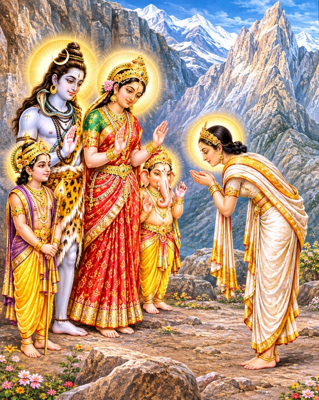
सनत्कुमार बोले–इस प्रकार महादेवसम्बन्धी कथाओंको कहते हुए उन उपमन्युके आठ दिन एक मुहूर्तके समान बीत गये। इसके अनन्तर नौवाँ दिन आनेपर मुनि उपमन्युने श्रीकृष्णको दीक्षा प्रदान की और शिव–अथर्वशीर्षका महामन्त्र उन्हें बताया। वे शीघ्र ही एकाग्रचित्त होकर ऊपर भुजा उठाये, पैरके एक अँगूठेपर खड़े होकर तप करने लगे। इसके बाद सोलहवाँ महीना आनेपर प्रसन्न होकर पार्वतीसहित परमेश्वर शम्भुने कृष्णको दर्शन दिया। श्रीकृष्णने हाथ जोड़कर शंकरजीको प्रणाम करते हुए शास्त्र–विधिसे उनकी पूजा की और सिर झुकाकर अनेकविध स्तोत्रोंसे तथा सहस्रना–मसे देवेश्वरकी स्तुति की।
सनत्कुमारजी कहते हैं–श्रीकृष्णका वचन सुनकर भगवान् शिव उनसे बोले–वासुदेव! तुमने जो कुछ मनोरथ किया है, वह सब पूर्ण होगा। तुम्हें साम्ब नामसे प्रसिद्ध महान् पराक्रमी तथा बलवान् पुत्र प्राप्त होगा। एक समय मुनियोंने भयानक संवर्तक (प्रलयंकर ) सूर्यको शाप दिया था–‘तुम मनुष्य योनिमें उत्पन्न होओगे।’ अतः वे संवर्तक सूर्य ही तुम्हारे पुत्र होंगे। इसके सिवा तुम्हें जो–जो वस्तु अभीष्ट है, वे सभी वस्तुएँ तुम प्राप्त करोगे।
तदनन्तर भक्तवत्सला गिरिराजकुमारी शिवाने प्रसन्न हो उन तपस्वी शिवभक्त महात्मा वासुदेवसे कहा–वसुदेवनन्दन श्रीकृष्ण! मैं तुमसे बहुत सन्तुष्ट हूँ। तुम मुझसे भी उन मनोवांछित वरोंको ग्रहण करो, जो भूतलपर दुर्लभ हैं।
श्रीकृष्णने कहा–देवि! यदि आप मुझे वर दे रही हैं तो मैं यह चाहता हूँ कि मेरे मनमें कभी किसीके प्रति द्वेष न हो। मैं सदा द्विजोंका पूजन करता रहूँ। मेरे माता–पिता सदा मुझसे सन्तुष्ट रहें। मैं जहाँ–कहीं भी जाऊँ, समस्त प्राणियोंके प्रति मेरे हृदयमें अनुकूल भाव रहे। सहस्रों साधु–संन्यासियों एवं अतिथियोंको सदा श्रद्धासे अपने घरपर पवित्र भोजन कराऊँ। भाई–बन्धुओंके साथ नित्य मेरा प्रेम बना रहे तथा मैं सदा सन्तुष्ट रहूँ।
सनत्कुमारजी कहते हैं–श्रीकृष्णका यह वचन सुनकर सनातनी देवी पार्वती बोलीं– ‘वासुदेव! ऐसा ही होगा।’ इस प्रकार श्रीकृष्णपर कृपा करके पार्वतीजीसहित परमेश्वर शिव वहीं अन्तर्धान हो गये। तदनन्तर श्रीकृष्णने मुनिवर उपमन्युको प्रणाम करके उन्हें वरप्राप्तिका सारा समाचार बताया और वे मन–ही–मन शम्भुका स्मरण करते हुए द्वारकापुरीको चले गये।
नरकमें गिरानेवाले पापोंका संक्षिप्त परिचय
सनत्कुमारजी कहते हैं–व्यासजी! जो पापपरायण जीव महानरकके अधिकारी हैं, उनका संक्षेपमें परिचय दिया जाता है, इसे सावधान होकर सुनो। परस्त्रीको प्राप्त करनेका संकल्प, पराये धनका अपहरण करनेकी इच्छा, चित्तके द्वारा अनिष्ट चिन्तन तथा न करनेयोग्य कर्ममें प्रवृत्त होनेका दुराग्रह–ये चार प्रकारके मानसिक पापकर्म हैं।
असंगत प्रलाप (बे–सिर–पैरकी बातें), असत्य–भाषण, अप्रिय बोलना, पीठ पीछे चुगली करना–ये चार वाचिक (वाणीद्वारा होनेवाले) पापकर्म हैं।
अभक्ष्य–भक्षण (न खानेयोग्य वस्तुको खाना), प्राणियोंकी हिंसा, व्यर्थके कार्योमें लगना, दूसरेके धनको हड़प लेना–ये चार प्रकारके शारीरिक पापकर्म हैं। इस प्रकार ये बारह कर्म बताये गये, जो मन, वाणी और शरीर–इन साधनोंसे सम्पन्न होते हैं।
जो संसार–सागरसे पार उतारनेवाले महादेवजीसे द्वेष करनेवाले हैं, जो पिता, ताऊ आदि गुरुजनोंकी निन्दा करते हैं, वे सब नरक–समुद्रमें गिरनेवाले हैं।
ब्रह्महत्यारा, मदिरा पीनेवाला, स्वर्ण चुरानेवाला, गुरुपत्नीगामी, इन चारोंसे सम्पर्क रखनेवाला पाँचवीं श्रेणीका प्राणी–ये सब–के–सब महापातकी कहे गये हैं।
जो देवताओं, ब्राह्मणों तथा गौओंके उपयोगके लिये दी हुई भूमिको हर लेता है तथा अन्यायसे धन कमाता है, उसे ब्रह्महत्यारेके समान ही पातकी जानना चाहिये। पिता और माताको त्याग देना, झूठी गवाही देना, दूसरोंसे झूठा वादा करना, शिवभक्तोंको मांस खिलाना तथा अभक्ष्य वस्तुका भक्षण करना ब्रह्महत्याके तुल्य कहा गया है।
पैतृक सम्पत्तिके बँटवारेमें उलट–फेर करना, अत्यन्त अभिमान एवं अत्यधिक क्रोध करना, पाखण्ड फैलाना, कृतघ्नता करना, विषयोंमें अत्यन्त आसक्त होना, कंजूसी करना, सत्पुरुषोंसे द्वेष रखना, परस्त्री–समागम करना, असत् शास्त्रोंका अध्ययन करना, पापों में लगना तथा झूठ बोलना–इस तरहके पापकर्मोंमें लिप्त स्त्री–पुरुषको उपपातकी कहा गया है।
पापियों और पुण्यात्माओंकी यमलोक–यात्रा
सनत्कुमारजी कहते हैं–व्यासजी! चार प्रकारके पापोंके कारण विवश होकर समस्त शरीरधारी मनुष्य भयको उत्पन्न करनेवाले घोर यमलोकको जाते हैं। ऐसा कोई भी प्राणी नहीं है, जो यमलोकमें न जाता हो। किये हुए कर्मोंका फल कर्ताको अवश्य भोगना पड़ता है, इसका विचार करो। जीवोंमें जो शुभ कर्म करनेवाले सौम्यचित्त और दयालु हैं, वे मनुष्य यमलोकमें सौम्यमार्ग तथा पूर्वद्वारसे जाते हैं, किंतु जो पापी पापकर्ममें निरत एवं दानसे रहित हैं, वे घोर मार्गद्वारा दक्षिणद्वारसे यमलोककी यात्रा करते हैं।
मर्त्यलोकसे छियासी हजार योजनकी दूरीपर अनेक रूपोंवाला यमलोक स्थित है। यह पुर पुण्यकर्मवाले मनुष्योंको निकटवर्ती–सा जान पड़ता है, किंतु घोरमार्गसे जाते पापियोंको बहुत दूर स्थित प्रतीत होता है। वहाँका मार्ग कहीं तो तीखे काँटोंसे युक्त है, कहीं कंकड़ोंसे व्याप्त है, कहीं छुरेकी धारके समान तीखे पत्थर उस मार्गमें जड़े हुए हैं, कहीं बड़ी भारी कीचड़ फैली हुई है। बड़े–छोटे पातकोंके अनुसार वहाँकी कठिनाइयोंमें भी भारी और हलकापन है।
तदनन्तर यमपुरीके मार्गकी भीषण यातनाओं और कष्टोंका वर्णन करके सनत्कुमारजीने कहा–व्यासजी! जिन्होंने कभी दान नहीं किया है, वे लोग भी इस प्रकार दुःख उठाते और सुखकी याचना करते उस मार्गपर जाते हैं। जिन लोगोंने पहलेसे ही दानरूपी पाथेय (राह–खर्च) ले रखा है, वे सुखपूर्वक यमलोककी
यात्रा करते हैं। इस प्रकारकी व्यवस्थासे कष्टपूर्वक जब वे यमपुरी पहुँचते हैं, तब धर्मराजकी आज्ञासे दूतोंके द्वारा वे उनके आगे ले जाये जाते हैं।
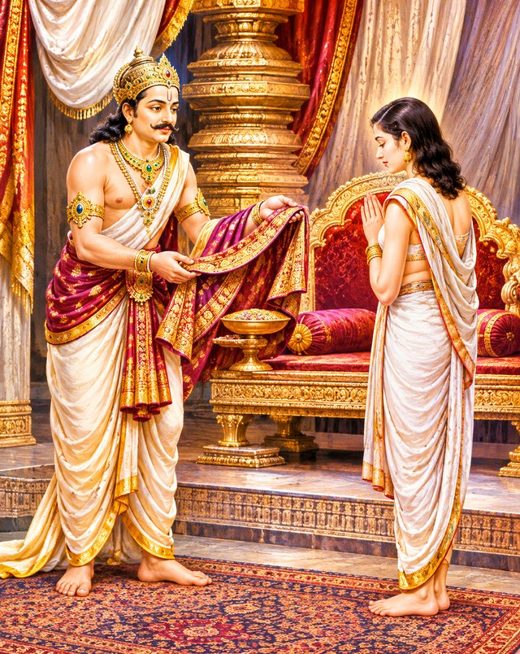
उनमें जो पुण्यात्मा होते हैं, उन्हें यमराज स्वागतपूर्वक आसन देकर पाद्य और अर्घ्यके द्वारा प्रेमपूर्वक सम्मानित करते हैं और कहते हैं कि शास्त्रोक्त कर्म करनेवाले आप महात्मा लोग धन्य हैं, जोकि आप लोगोंने दिव्य सुख प्राप्त करनेके लिये पुण्य–कर्म किया है तथा आप लोग सम्पूर्ण मनोवांछित पदार्थोंसे सम्पन्न निर्मल स्वर्गलोकको जायेँ। वहाँपर महान् भोगोंका उपभोग करके अन्तमें पुण्यके क्षीण हो जानेपर जो कुछ थोड़ा–सा अशुभ शेष रह जाय, उसे फिर यहाँ आकर आप लोग भोगेंगे; किंतु जो क्रूर कर्म करनेवाले हैं, वे यमराजको भयानक रूपमें देखते हैं। उनकी दृष्टिमें यमराजका मुख दाढ़ोंके कारण विकराल जान पड़ता है। नेत्र टेढ़ी भौहोंसे युक्त प्रतीत होते हैं। वे कुपित तथा काले, कोयलेके ढेर–से दिखायी पड़ते हैं। वे सब प्रकारके दण्डका भय दिखाकर उन पापियोंको डाँटते रहते हैं। उनके नेत्र प्रज्वलित अग्निके समान उद्दीप्त दिखायी देते हैं। वे ऐसे जान पड़ते हैं, मानो महासागरको पी रहे हैं और मुँहसे आग उगल रहे हैं।
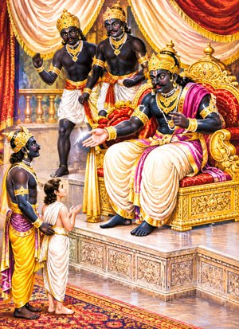
उनके अतिरिक्त असंख्य महावीर यमदूत, जिनकी अंगकान्ति काले कोयलेके समान काली होती है, सम्पूर्ण अस्त्र–शस्त्र लिये वे बड़े भयंकर जान पड़ते हैं। पापी लोग इन परिचारकोंसे घिरे हुए उन यमराज तथा चित्रगुप्तको देखते हैं। उस समय यमराज उन पापियोंको बहुत डाँटते हैं और भगवान् चित्रगुप्त धर्मयुक्त वचनोंके द्वारा उन्हें समझाते हैं।
नरकभेदनिरूपण
चित्रगुप्तजी कहते हैं कि हे पापकर्म करनेवालो! तुमलोगोंने स्वयं जो कर्म किया है, उसे तुम्हें भोगना पड़ रहा है। अब अपने कर्मोंको भोगो, इसमें किसीका दोष नहीं है। सनत्कुमारजी बोले–अपने कुत्सित कर्मों तथा बलपर गर्व करनेवाले राजालोग भी अपने घोर कर्मोंके करनेके कारण चित्रगुप्तके सामने उपस्थित हुए। तब धर्मके ज्ञाता चित्रगुप्तने यमराजकी आज्ञासे क्रोधयुक्त होकर उन्हें शिक्षा प्रदान करते हुए कहा–हे राजाओ! तुमलोगोंने राज्यभोगके मोहसे अन्यायपूर्वक जबरदस्ती जो प्रजाओंको दण्डित किया है, अब उसका फल भोगो।
उन राजाओंके कर्मको बतलाकर धर्मराज यमने उनके पापरूपी कीचड़की शुद्धिके लिये दूतोंसे यह कहा–हे चण्ड! महाचण्ड! इन राजाओंको बलपूर्वक पकड़कर क्रमसे नरककी अग्नियोंमें इन्हें शुद्ध करो।
इसके अनन्तर सनत्कुमारजीने नरककोटियोंके नाम बताये हैं। उनमें प्रथम रौरव नरक है, जहाँ पहुँचकर देहधारी जीव रोने लगता है। महारौरवकी पीड़ासे तो महान् पुरुष भी रो देते हैं। इसके बाद शीत और उष्ण नामक नरक हैं। इस प्रकार इन नरकोंकी संख्या अट्टाईस है और क्रमशः उनके पाँच–पाँच नायक कहे गये हैं। महानरक–मण्डल एक सौ चालीस नरकोंका बताया गया है।
सनत्कुमारजी कहते हैं–व्यासजी! इन सब भयानक पीड़ादायक नरकोंमें पापी जीवोंको अत्यन्त भीषण नरक–यातना भोगनी पड़ती है। जो धन रहते हुए भी तृष्णाके कारण उसका दान नहीं करते, भोजनके समयपर घर आये हुए अतिथिका अनादर करते हैं, वे पापका फल पाकर अपवित्र नरकमें गिरते हैं।
देवता, पितर, मनुष्य, प्रेत, भूत, गुद्यक, पक्षी, कृमि, कीट, कुत्ते और कौवे–ये सभी गृहस्थसे अपनी जीविका चलाते हैं। अतः इनके निमित्त अन्नका कुछ भाग बलिके रूपमें प्रदान करना चाहिये।
स्वाहाकार, स्वधाकार, वषट्कार तथा हन्तकार–ये धर्ममयी धेनुके चार स्तन हैं। स्वाहाकार नामक स्तनका पान देवता करते हैं, स्वधाका पितर लोग, वषट्कारका दूसरे–दूसरे देवता और भूतेश्वर तथा हन्तकार नामक स्तनका सदा मनुष्यगण ही पान करते हैं। जो मानव श्रद्धापूर्वक इस धर्ममयी धेनुका सदा ठीक–ठीक पालन करता है, वह अग्निहोत्री हो जाता है। जो स्वस्थ रहते हुए भी उनका त्याग कर देता है, वह अन्धकारपूर्ण नरकमें डूबता है। इसलिये उन सबको बलिभाग देनेके पश्चात् द्वारपर खड़ा हो क्षणभर अतिथिकी प्रतीक्षा करे। यदि कोई भूखसे पीड़ित अतिथि मिल जाय तो उसे अपने भोजनसे पहले यथाशक्ति शुभ अन्नका भोजन कराये। जिसके घरसे
अतिथि निराश होकर लौटता है, उसे वह अपना पाप देकर बदलेमें उसका पुण्य लेकर चला जाता है।
यमलोकके मार्गमें सुविधा प्रदान करनेवाले विविध दानोंका वर्णन
व्यासजी बोले–हे प्रभो! पाप करनेवाले मनुष्य बड़े दुःखसे युक्त होकर यममार्गमें गमन करते हैं। अब आप उन धर्मोंको कहिये, जिनके द्वारा वे सुखपूर्वक यममार्गमें गमन करते हैं। सनत्कुमारजीने कहा– “मुने! अपना किया हुआ शुभाशुभ कर्म बिना विचारे विवश होकर भोगना ही पड़ता है। अब मैं उन धर्मोंका वर्णन करता हूँ, जो सुख देनेवाले हैं। इस लोकमें जो लोग शुभ कर्म करनेवाले, शान्तचित्त एवं दयालु मनुष्य हैं, वे बड़े सुखके साथ भयानक यममार्गमें जाते हैं।
जो मनुष्य श्रेष्ठ ब्राह्मणोंको जूता और खड़ाऊँका दान करते हैं, जो छाता और शिविकाका दान करते हैं, शय्या और आसनका दान करते हैं, वे यमलोकके मार्गमें विश्राम करते हुए सुखपूर्वक जाते हैं। जो उद्यान लगानेवाले, छायादार वृक्ष लगानेवाले तथा मार्गके किनारे वृक्षका आरोपण करनेवाले हैं, वे धूपमें भी बिना कष्ट उठाये यमलोकको जाते हैं। जो देवता, अग्नि, गुरु, ब्राह्मण और माता–पिताकी पूजा करते हैं, वे मनुष्य स्वयं भी पूजित होते हुए यथेच्छ सुखपूर्वक यमपुरीको जाते हैं। दीपदान करनेवाले मनुष्य सभी दिशाओंको प्रकाशित करते हुए जाते हैं। गृहदान करनेसे दाता रोग–शोकसे रहित हो सुखपूर्वक यात्रा करते हैं। स्वर्ण और रत्नका दान करनेसे मनुष्य दुर्गम संकटोंको पार करता हुआ जाता है।
सभी दानोंमें अन्नदान श्रेष्ठ कहा गया है; क्योंकि वह तत्काल प्रसन्न करनेवाला, हृदयको प्रिय लगनेवाला एवं बल–बुद्धिको बढ़ानेवाला है। हे मुनिश्रेष्ठ! अन्नदानके समान कोई दूसरा दान नहीं है; क्योंकि अन्नसे ही प्राणी उत्पन्न होते हैं और अननके अभावमें मर जाते हैं।
अन्नका दान करनेवाला प्राणदाता तथा प्राणदान करनेवाला सर्वस्वका दाता कहा गया है। अन्न ही साक्षात् ब्रह्मा, विष्णु और महेश है; अतः अन्नदानके समान न कोई दान हुआ है और न होगा।
अन्न, पान, अश्व, गौ, वस्त्र, शय्या, छत्र एवं आसन–ये आठ प्रकारके दान यमलोकके लिये विशेषरूपसे श्रेष्ठ कहे गये हैं। इस प्रकारके श्रेष्ठ दानसे मनुष्य विमानद्वारा धर्मराजके लोकको जाता है। इसलिये इनका दान अवश्य करना चाहिये।
जलदान, सत्यभाषण और तपकी महिमा
सनत्कुमारजी कहते हैं कि हे व्यासजी! जलदान सब दानोंमें सबसे उत्तम है; क्योंकि जल सभी जीव–समुदायको तृप्त करनेवाला जीवन कहा गया है। इसलिये मनुष्यको चाहिये कि वह कुआँ, बावड़ी, तालाब एवं प्याऊ आदि बनवाये। जिसके बनवाये हुए जलाशयमें गौ, ब्राह्मण तथा साधुपुरुष सदा पानी पीते हैं, वह अपने सारे वंशका उद्धार कर देता है।
जो वीरान एवं दुर्गम स्थानमें वृक्षोंको लगाता है, वह अपनी बीती हुई तथा आनेवाली सभी पीढ़ियोंके सभी पितृकुलोंका उद्धार कर देता है। लगाये गये ये वृक्ष दूसरे जन्ममें उस व्यक्तिके पुत्र होते हैं। वृक्ष पुष्पोंके द्वारा देवगणोंकी, फलोंके द्वारा पितरोंकी, छायाके द्वारा सभी अतिथियोंकी पूजा करते हैं, अतः वृक्षोंको अवश्य लगाना चाहिये।
सत्यवादी पुरुष स्वर्गसे कभी नीचे नहीं गिरते, सत्य ही परब्रह्म है, सत्य ही परम तप है, सत्य ही श्रेष्ठ यज्ञ है। सत्यसे ही पृथ्वी टिकी हुई है। सत्यको परम धर्म कहा गया है और सत्यको ही परब्रह्म परमात्मा कहते हैं। जो मनुष्य अपने लिये, दूसरेके लिये अथवा अपने पुत्रादिके लिये भी झूठ नहीं बोलते, वे ही स्वर्गगामी होते हैं। अतः सदा सत्य बोलना चाहिये।
तदनन्तर तपकी बड़ी भारी महिमा बताते हुए सनत्कुमारजीने कहा–मुने! संसारमें ऐसा कोई सुख नहीं है, जो तपस्याके बिना सुलभ
होता हो। ज्ञान–विज्ञान, आरोग्य, सुन्दर रूप, सौभाग्य तथा शाश्वत सुख तपसे ही प्राप्त होते हैं। तपस्यासे ब्रह्मा बिना परिश्रमके ही सम्पूर्ण विश्वकी सृष्टि करते हैं। तपस्यासे ही विष्णु इसका पालन करते हैं। तपस्याके बलसे ही रुद्रदेव इसका संहार करते हैं तथा तपके प्रभावसे ही शेष अशेष भूमण्डलको धारण करते हैं।
वेद–पुराणोंके स्वाध्याय तथा विविध प्रकारके दानोंकी महिमा
सनत्कुमारजी कहते हैं–हे मुने! जो वनके कन्द–मूल–फल खा करके जंगलमें तपस्या करता है और जो वेदकी एक ऋचाका अध्ययन करता है, उन दोनोंका समान फल होता है। जैसे सूर्य और चन्द्रमाके बिना सम्पूर्ण संसारमें अन्धकार छा जाता है, उसी प्रकार पुराणके अध्ययनके बिना लोग ज्ञानरहित हो जाते हैं, इसलिये सदा पुराणका अध्ययन करना चाहिये।
पुराणका श्रवण करनेसे पापका नाश होता है, धर्मकी अभिवृद्धि होती है एवं व्यक्ति ज्ञानवान् होकर पुनः संसारके आवागमनके बन्धनमें नहीं पड़ता है, इसलिये धर्म, अर्थ और कामकी सिद्धि तथा मोक्षमार्गकी प्राप्तिके लिये प्रयत्नपूर्वक पुराणोंको सुनना चाहिये।
सनत्कुमारजी कहते हैं–हे व्यासजी! विभिन्न प्रकारके दान सदा सत्पात्रको ही देने चाहिये, वे आत्माका उद्धार करते हैं। स्वर्णदान, गोदान एवं भूमिदान–इन उत्तम दानोंको करके मनुष्य पापोंसे मुक्त हो जाता है। तुलादान, पृथ्वीदान तथा विद्यादान–ये प्रशस्त दान कहे गये हैं। गाय, छत्र, वस्त्र, जूता एवं अन्न–जल–ये वस्तुएँ याचकको देते रहना चाहिये। जो मनुष्य शुद्ध चित्तसे सुवर्णदान करते हैं, उन्हें देवतालोग सब कुछ देते हैं।
हे व्यासजी! इस लोकमें विधानके साथ गायका दान तथा तुलापुरुषका दान सभी दानोंमें सर्वश्रेष्ठ दान है। इसे करके मनुष्य वध आदिसे होनेवाले सभी पापोंसे छुटकारा पाता है।
नरकप्राप्ति करानेवाले असत्कर्मोंका वर्णन एवं शिवनाम–स्मरणकी महिमा
इसके बाद ब्रह्माण्डदानका माहात्म्य एवं ब्रह्माण्डका वर्णन करके सनत्कुमारजी बोले–हे व्यासजी! जो मनुष्य ब्राह्मण, देवता एवं गौओंके पक्षको छोड़कर अन्यत्र झूठी गवाही करता है अथवा मिथ्याभाषण करता है, वह रौरव नरकमें जाता है। भ्रूण [गर्भस्थ शिशु] –की हत्या करनेवाला, स्वर्ण चुरानेवाला, गायोंको चरनेसे रोकनेवाला, विश्वासघाती, सुरापान करनेवाला, ब्राह्मणका वध करनेवाला, दूसरोंके द्रव्यको चुरानेवाला तथा इनका साथ देनेवाला और गुरु, माता, गौ तथा कन्याका वध करनेवाला मरनेपर तप्तकुम्भ नामक नरकमें जाता है। जो द्विज अन्त्यजसे सेवा कराता है, नीचोंसे प्रतिग्रह ग्रहण करता है, यज्ञके अनधिकारियोंसे यज्ञ कराता है एवं अभक्ष्य वस्तुओंका भक्षण करता है–ये सब रुधिरौघ (पूयवह) नामक नरकमें जाते हैं। जो मनुष्य मन, वचन तथा कर्मसे वर्णाश्रमधर्मके विपरीत आचरण करते हैं, वे नरकमें गिरते हैं। हे व्यासजी! स्वायम्भुव मनुने बड़े पापोंके लिये महान् प्रायश्चित्त तथा अल्प पापोंके लिये अल्प प्रायश्चित्त कहा है। जिस पुरुषके चित्तमें पापकर्म करनेके अनन्तर पश्चात्ताप होता है, उसके लिये तो एकमात्र शिवजीका स्मरण ही सर्वोत्तम प्रायश्चित्त है। हे व्यासजी! नरक और स्वर्ग–ये पाप और पुण्यके ही दूसरे नाम हैं। इनमें एक तो दुःख देनेवाला है, दूसरा सुख देनेवाला है। ये सुख–दुःख तो मनके ही विकार हैं। ज्ञान ही परब्रह्म है, ज्ञान ही तात्विक बोधका कारण है। यह सारा चराचर विश्व ज्ञानमय ही है। उस परम विज्ञानसे भिन्न दूसरी कोई वस्तु नहीं है।
तपस्यासे शिवलोककी प्राप्ति
व्यासजी बोले–हे सनत्कुमार! अब आप उस शिवलोककी प्राप्तिका वर्णन करें, जहाँ जाकर शिवभक्त मनुष्य फिर नहीं लौटते हैं। सनत्कुमार कहते हैं–हे व्यासजी! शुद्ध कर्म करनेवाले एवं अत्यन्त
शुद्ध तपस्यासे युक्त जो मनुष्य प्रतिदिन शिवजीकी पूजा करते हैं, वे सब प्रकारसे वन्दनीय हैं। शिवजीकी कृपाका मूल हेतु तपस्या ही है। तपके प्रभावसे ही देवता, ऋषि और मुनि लोग स्वर्गमें आनन्द प्राप्त करते हैं। जो पुरुष इस मनुष्य–जन्मको पाकर अपना परम कल्याण नहीं करता है, वह मरनेके बाद बहुत कालतक शोक करता रहता है। सभी देवताओं एवं असुरोंके लिये यह मनुष्य–जन्म अति दुर्लभ है। अतः उसे प्राप्त करके वैसा कर्म करना चाहिये, जिससे नरकमें न जाना पड़े। जबतक शरीर स्वस्थ रहे, तबतक धर्माचरण करते रहना चाहिये; क्योंकि अस्वस्थ हो जानेपर मनुष्य कुछ भी करनेमें समर्थ नहीं होता।
हे मुनिसत्तम! जिन्होंने ‘शिव–शिव’ तथा ‘हर–हर’–इस नामका उच्चारण किया है, उन्हें नरक और यमराजसे भय नहीं होता है। संसाररूपी महारोगोंका नाश करनेवाला एकमात्र ‘शिव’ नाम ही है। इसके अतिरिक्त अन्य कोई उपाय नहीं दिखायी देता है।
मूर्ख प्राणी अधर्मका आचरण करनेसे हजारों जन्मोंतक जन्म–मरणके चक्रमें घूमता रहता है और उसी अधर्मके कारण अन्धकारमें पड़ा रहता है। अतः मनुष्य किसी श्रेष्ठ स्थानको प्राप्तकर प्रमाद न करे और विपत्तियोंको सहकर भी सर्वदा अपने स्थानकी रक्षा करे।
सनत्कुमार बोले–जिस प्रकार भीतर विष्ठासे परिपूर्ण घट बाहरसे शुद्ध होता हुआ भी अपवित्र ही होता है, उसी प्रकार शुद्ध किया हुआ यह शरीर भी अपवित्र कहा गया है। दुष्टात्मा तीर्थस्नानसे अथवा तपोंसे कदापि शुद्ध नहीं होता है। भावदुष्ट मनुष्य भले ही सम्पूर्ण गंगाजलसे तथा पहाड़भर मिट्टीसे भलीभाँति जन्मभर स्नान करता रहे, फिर भी शुद्ध नहीं होता। गंगा आदि तीर्थोंमें मछलियाँ तथा देवालयोंमें पक्षी नित्य निवास करते हैं, किंतु वे भावहीन होनेके कारण फल नहीं पाते। इसी प्रकार भावदुष्टको तीर्थस्नान एवं दानसे कोई फल प्राप्त नहीं होता।
ज्ञानरूपी निर्मल जलसे और वैराग्यरूपी मृत्तिकासे मनुष्योंके अविद्यारूपी मल–मूत्रके लेपकी दुर्गन्ध दूर हो जाती है। बुढ़ापेसे ग्रस्त हुआ मनुष्य असमर्थ रहता है। अतः यौवनावस्थामें ही धर्माचरण कर लेना चाहिये।
जो द्विज प्रातःकाल उठकर आलस्यरहित होकर एकान्तमें प्राणायाम करता है, वह जरा और मृत्युको जीतकर वायुके समान गतिशील होकर आकाशमें विचरण करता है तथा प्रशंसनीय सौख्य एवं परम सुख प्राप्त करता है।
भगवती उमाका कालिकावतार
इसके अनन्तर छायापुरुष, सर्ग, कश्यपवंश, मनुवंश, सत्यव्रतादिवंश, पितृकल्प तथा व्यासोत्पत्ति आदिका वर्णन सुननेके पश्चात् मुनियोंने सूतजीसे कहा–हे ब्रह्मवेत्ताओंमें श्रेष्ठ सूतजी! अब हम लोग आपसे भगवती जगदम्बाके मनोहर चरित्रको सुनना चाहते हैं। परब्रह्म महेश्वरकी जो सनातनी आधा शक्ति हैं, वे ही त्रिलोकीको उत्पन्न करनेवाली पराशक्ति हैं। उनके दक्षकन्या सती तथा हैमवती पार्वती ये दो अवतार हमने सुने। हे महामते! अब आप उनके अन्य अवतारोंका वर्णन कीजिये।
सूतजी बोले–जो मनुष्य देवीको छोड़कर दूसरे देवताओंकी शरण लेता है, वह मानो गंगाजीको छोड़कर मरुस्थलके जलाशयके पास जाता है। जिनके स्मरणमात्रसे धर्म, अर्थ, काम एवं मोक्ष चारों पुरुषार्थोंकी अनायास प्राप्ति होती है, उन देवी उमाकी आराधना कौन श्रेष्ठ पुरुष छोड़ सकता है?
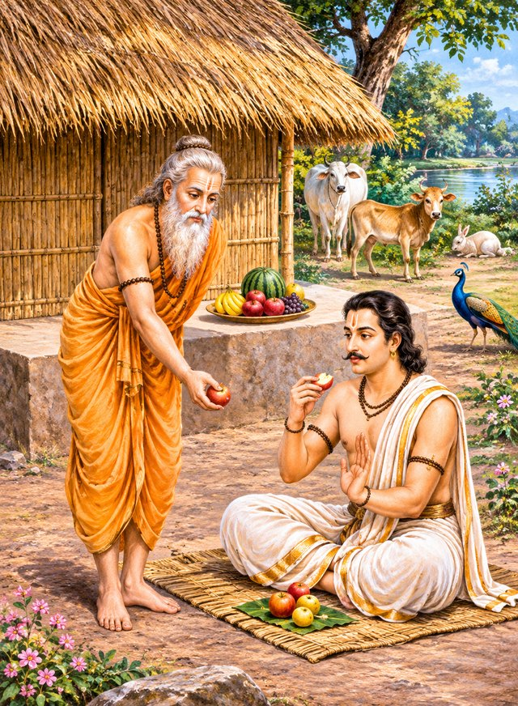
पूर्वकालमें महामना सुरथने महर्षि मेधासे यही बात पूछी थी। उस समय मेधाने जो उत्तर दिया, मैं वही बता रहा हूँ–पहले स्वारोचिष मन्वन्तरमें विरथ नामसे प्रसिद्ध एक राजा हो गये हैं, जिनके पुत्र सुरथ हुए, जो महान् बल और पराक्रमसे सम्पन्न थे। राजा सुरथके पृथ्वीपर शासन करते समय नौ ऐसे राजा हुए, जिन्होंने उनके हाथसे भूमण्डलका राज्य छीन लिया। शत्रुओंने सारा राज्य अपने अधिकारमें करके सुरथको कोलापुरसे निकाल दिया। राजा सुरथ अकेले ही घोड़ेपर सवार हो नगरसे बाहर निकले और वनमें चले गये। वहाँ उन्होंने एक श्रेष्ठ मुनिका आश्रम देखा, जहाँ वेदमन्त्रोंकी ध्वनि गूँज रही थी तथा सभी जीव–जन्तु शान्तभावसे रहते थे। वहाँ जानेपर मुनीश्वर मेधाने मीठे वचन तथा भोजन और आसनद्वारा नरेशका आदर–सत्कार किया।
एक दिन राजा सुरथ चिन्तित होकर कुछ विचार कर रहे थे, इतनेमें समाधि नामक एक वैश्य भी वहाँ आ पहुँचा, जिसने बताया कि मेरे पुत्रों और स्त्री आदिने धनके लोभमें मुझे घरसे निकाल दिया। अतः दुखी होकर मैं वनमें चला आया हूँ, परंतु यहाँ आकर भी मुझे उनका कुशल–समाचार न मिलनेकी चिन्ता लगी हुई है। इस प्रकार मोहसे व्याकुल हुए वैश्य और राजा दोनोंने मुनिवर मेधासे अपनी व्यथा सुनायी और कहा कि हम दोनोंका मन मोहसे व्याकुल हो गया है। ऋषि बोले–राजन्! शक्तिस्वरूपा जगदम्बा सबके मनको खींचकर मोहमें डाल देती हैं। हे नृपश्रेष्ठ! जिसके ऊपर जगदम्बा प्रसन्न होती हैं, वही मोहके घेरेको लाँघ पाता है। राजाने पूछा–मुने! वे देवी महामाया कौन हैं? किस प्रकार उनका प्रादुर्भाव हुआ? कृपा करके मुझे बताइये।
ऋषि बोले– ‘जलमें निमग्न योगेश्वर भगवान् केशव शेषकी शय्या बिछाकर योगनिद्रामें शयन कर रहे थे, उन्हीं दिनों भगवान् विष्णुके कानोंके मैलसे दो असुर उत्पन्न हुए, जो भूतलपर मधु और कैटभके नामसे विख्यात हैं। वे दोनों भगवान् विष्णुकी नाभिसे उत्पन्न ब्रह्माको देखकर उन्हें मार डालनेको उद्यत हो गये। उस समय उन दोनों दैत्योंको देखकर तथा विष्णुको क्षीरसागरमें शयन करते हुए जानकर ब्रह्माजी परमेश्वरीकी स्तुति करने लगे–हे अम्बिके! तुम इन दोनों दुर्जय असुरोंको मोहित करो और अजन्मा भगवान् नारायणको जगा दो।
ब्रह्माजीके प्रार्थना करनेपर जगज्जननी महाविद्या फाल्गुन शुक्ला द्वादशीको शक्तिके रूपमें प्रकट हो महाकालीके नामसे विख्यात हुईं।
इसके बाद जनार्दन हृषीकेश निद्रासे उठे और उन्होंने अपने सामने मधु–कैटभ नामक दोनों दैत्योंको देखा। उन दैत्योंके साथ विष्णुका पाँच हजार वर्षोंतक बाहुयुद्ध हुआ। तब महामायाके प्रभावसे मोहित हुए दानवोंने लक्ष्मीपतिसे कहा–तुम हमसे मनोवांछित वर ग्रहण करो। नारायण बोले–यदि तुमलोग प्रसन्न हो तो मेरे हाथसे मारे जाओ–यही मेरा वर है।
ऋषि कहते हैं–उन असुरोंने देखा कि सारी भूमि जलमें डूबी हुई है, तब वे केशवसे बोले–हम दोनोंको ऐसी जगह मारो, जहाँ जलसे भीगी हुई धरती न हो, भगवान् विष्णुने अपना परम तेजस्वी चक्र उठाकर उन दोनों दैत्योंको अपनी जंघापर रखकर उनके सिर काट दिये।
हे राजन्! इस प्रकार मैंने आपसे कालिकाकी उत्पत्ति कह दी। अब महालक्ष्मीके प्रादुर्भावकी कथा सुनिये।
महालक्ष्मीका अवतरण
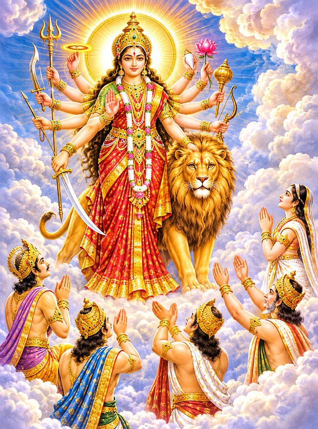
देवी उमा निराकार एवं निर्विकार होकर भी देवताओंका दुःख दूर करनेके लिये युग–युगमें साकार रूप धारण करके प्रकट होती हैं। वे लीलासे इसलिये प्रकट होती हैं कि भक्तजन उनके गुणों का गान करते रहें। ऋषि कहते हैं–हे राजन्! पूर्व समयमें महिषासुरके अत्याचारोंसे पीड़ित ब्रह्मादि देवोंकी प्रार्थनासे प्रादुर्भूत महालक्ष्मीद्वारा महिषासुरका वध हो जानेपर इन्द्रादि सभी देवता देवीकी स्तुति करने लगे। गन्धर्व गीत गाने लगे और अप्सराएँ नृत्य करने लगीं। इस प्रकार देवी महालक्ष्मीके अवतरणकी कथाके उपरान्त मेधा ऋषिने महासरस्वतीके प्रादुर्भावका प्रसंग सुनाया।
महासरस्वतीका प्राकट्य तथा उनके द्वारा शुम्भ–निशुम्भ आदिका वध
ऋषि कहते हैं–हे राजन्! पूर्व समयमें शुम्भ और निशुम्भ नामक दो सहोदर, प्रतापी दैत्य हुए। उन दोनों भाइयोंने तीनों लोकोंको आक्रान्त कर रखा था। उन दोनोंसे पीड़ित देवगण हिमालयपर्वतपर जाकर देवी उमाका स्तवन करने लगे। देवताओंको स्तुति करते देखकर गौरी देवीने उनसे पूछा– ‘आप लोग यहाँ किसकी स्तुति कर रहे हैं’ उसी समय पार्वतीके शरीरसे एक कन्या प्रकट हुई। उसने पार्वतीजीसे कहा–हे माता! महाबली शुम्भ–निशुम्भसे पीड़ित ये सभी देवता मेरी स्तुति कर रहे हैं। उस देवीने सभी देवताओंसे कहा–आप सब निर्भय होकर निवास कीजिये। मैं आपका कार्य सिद्ध करूँगी। ऐसा कहकर वे देवी उसी क्षण अन्तर्धान हो गयीं।
एक दिन शुम्भ–निशुम्भके चण्ड–मुण्ड नामक सेवकोंने उन देवीको देखा और उनके मनोहर रूपको देखते ही वे अत्यन्त मोहित हो गये। तदनन्तर उन्होंने जाकर अपने स्वामीसे सारा वृत्तान्त सुनाते हुए देवीकी अलौकिक सुन्दरताका वर्णन किया। चण्ड–मुण्डके द्वारा कहा गया यह वचन सुनकर उस असुरने देवीके पास अपना सुग्रीव नामक दूत भेजा और उससे कहा–‘हे दूत! तुम हिमालयपर्वतपर जाकर उस सुन्दर स्त्रीको प्रयत्नपूर्वक मेरे पास लाओ।’ उसकी आज्ञा पाकर उस सुग्रीवने हिमालयपर्वतपर जाकर महेश्वरी जगदम्बाको अपने स्वामीका सन्देश सुनाया तथा उनसे शुम्भ–निशुम्भको पतिरूपमें स्वीकार करनेका आग्रह किया। देवी बोलीं–‘हे दूत! जो युद्धमें मुझे जीत लेगा और मेरा अहंकार दूर करेगा, मैं उसे ही पतिरूपमें वरण करूँगी।’ तब सुग्रीव नामक दूतने देवीका यह वचन वहाँ जाकर विस्तारपूर्वक अपने राजासे कह दिया। दूतकी बात सुनकर शुम्भने क्रोधित हो अपने सेनापति धूम्रलोचनको उस सुन्दरीको बलपूर्वक लानेकी आज्ञा दी। इस प्रकार शुम्भकी आज्ञा प्राप्तकर धूम्रलोचन नामक दैत्यने हिमालयपर जाकर उमाके अंशसे उत्पन्न भुवनेश्वरीसे कहा–‘हे सुन्दरी! तुम मेरे स्वामीके पास चलो, नहीं तो मैं तुम्हें मार डालूँगा।’ देवी बोलीं–‘युद्धके बिना मेरा जाना असम्भव है।’
देवीद्वारा ऐसा कहे जानेपर वह दानव धूम्रलोचन उनकी ओर झपटा, किंतु महेश्वरीने ‘हुं’ के उच्चारणमात्रसे उसे उसी क्षण भस्म कर दिया। उसी समयसे ये देवी लोकमें धूमावती नामसे विख्यात हुईं। धूम्राक्षके मारे जानेका समाचार सुनकर शुम्भ अत्यन्त क्रोधित हुआ, तब उसने चण्ड–मुण्ड एवं रक्तबीज नामक असुरोंको भेजा। उन असुरोंसे वाद–विवाद तथा युद्ध होनेपर परमेश्वरीने लीलामात्रसे चण्ड–मुण्डसहित महान् असुर रक्तबीजको भी मार डाला।
ऋषि बोले–हे राजन्! उस महान् असुरने इन दैत्यवरोंके मारे जानेका समाचार सुनकर अपने दुर्जय गणोंको युद्धके लिये जानेकी आज्ञा दी। इसके साथ ही निशुम्भ और शुम्भ दोनों भाइयोंने रथपर आरूढ़ हो स्वयं भी युद्धके लिये प्रस्थान किया।
घोर युद्ध होने तथा राक्षसोंका महान् संहार हो जानेके पश्चात् देवी अम्बिकाने विषमें बुझे तीखे बाणोंद्वारा निशुम्भको मारकर धराशायी कर दिया। अपने असीम शक्तिशाली छोटे भाईके मारे जानेपर शुम्भ रोषसे भर गया और उसने रथपर बैठकर आठ भुजाओंसे युक्त हो महेश्वरप्रिया अम्बिकापर एक बड़ी भारी शक्ति छोड़ी, जिसकी शिखासे आगकी ज्वाला निकल रही थी, परंतु देवीने एक उल्काके द्वारा उसे मार गिराया। तत्पश्चात् चण्डिकाने त्रिशूल उठाकर उस असुरपर घातक प्रहार किया। शिवाके लोकपावन पाणिपंकजसे मृत्युको प्राप्त होकर वे दोनों असुर परमपदके भागी हुए।
उन महापराक्रमी दोनों भाइयोंके मारे जानेपर सभी दैत्य व्याकुल होकर दसों दिशाओंमें भाग गये। इन्द्रादि सभी देवता सुखी हो गये। राजन्! इस प्रकार शुम्भासुरका संहार करनेवाली देवी सरस्वतीके चरित्रका वर्णन किया गया, जो साक्षात् उमाके अंशसे उत्पन्न हुई थीं।
भगवती उमाका प्रादुर्भाव
मुनि बोले–सूतजी! अब आप भुवनेश्वरी उमाके अवतारका वर्णन करें, जो परब्रह्म मूलप्रकृति, निराकार होकर भी साकार तथा नित्यानन्दमयी सती कही जाती हैं।
सूतजी कहते हैं–एक बार देवताओं एवं दैत्योंमें परस्पर युद्ध हुआ, उसमें महामायाके प्रभावसे देवगणोंकी विजय हुई। इससे देवताओंको अहंकार हो गया और वे अपनी प्रशंसा करने लगे। उसी समय वहाँ एक
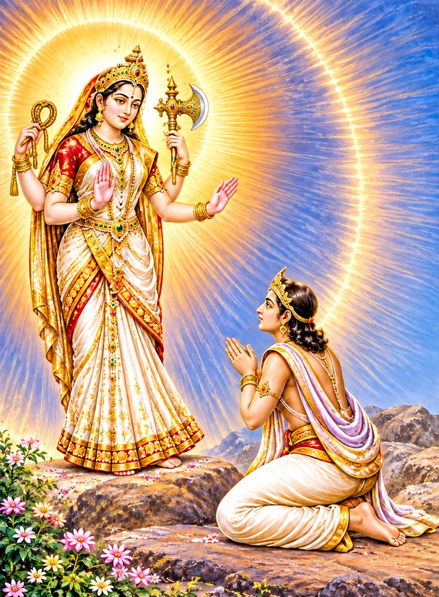
पुंजीभूत तेज प्रकट हुआ, जिसे देखकर देवता आश्चर्यचकित हो उठे। उन्हें यह पता नहीं था कि यह श्यामा (भगवती उमा)– का उत्कृष्ट प्रभाव है, जो देवताओंके अभिमानको चूर्ण करनेवाला है। देवताओंके अधिपतिने देवताओंको उस तेजकी परीक्षा करनेकी आज्ञा दी। सर्वप्रथम वायुदेव उस तेजःपुंजके निकट गये। तेजःपुंजके पूछनेपर वायुदेवता अभिमानपूर्वक बोले–“मैं वायु हूँ। सम्पूर्ण जगत्का प्राण हूँ। मैं ही समस्त विश्वका संचालन करता हूँ। तब उस महातेजने कहा यदि तुम जगत्के संचालनमें समर्थ हो तो इस तृणको अपने इच्छानुसार चलाओ तो सही, तब वायुदेवताने सभी उपाय करके अपनी सारी शक्ति लगा दी, परंतु वह तिनका अपने स्थानसे तिलभर भी नहीं हटा। इससे वायुदेव लज्जित हो गये और इन्द्रकी सभामें लौटकर अपनी पराजयका सारा वृत्तान्त सुनाया। तब इन्द्रने बारी–बारीसे समस्त देवताओंको भेजा, पर वे उसे जाननेमें समर्थ न हो सके, तब इन्द्र स्वयं ही गये। इन्द्रको आते देख वह तेज तत्काल अदृश्य हो गया। इससे इन्द्र बड़े विस्मित हुए। तब इन्द्रने यह विचार किया कि जिसका ऐसा चरित्र है, मुझे उसीकी शरणमें जाना चाहिये।
इसी बीच अकारणकरुणामूर्ति सच्चिदानन्दरूपिणी भगवती उमा उनका अभिमान दूर करनेके लिये चैत्र शुक्ल नवमीको मध्याह्ककालमें वहाँ प्रकट हुईं। तेजके मध्यमें विराजमान परमब्रह्मस्वरूपिणी महामायाने कहा–मैं निराकार होकर भी साकार हूँ। मैं ही परब्रह्म, परमज्योति, प्रणव और युगलरूपिणी हूँ। काली, लक्ष्मी और सरस्वती आदि सम्पूर्ण शक्तियाँ तथा ये सकल कलाएँ मेरे ही अंशसे प्रकट हुई हैं। मेरे ही प्रभावसे तुम लोगोंने सम्पूर्ण दैत्योंपर विजय पायी है।
सगुण एवं निर्गुण–यह मेरा दो प्रकारका रूप कहा गया है। प्रथम रूप मायामय है तथा दूसरा रूप मायारहित है। हे देवताओ! इस प्रकार मुझे जानकर और अपने गर्वका परित्याग करके भक्तिसे युक्त होकर मुझ सनातनी प्रकृतिकी आराधना करो। उसी समयसे वे देवता अभिमान छोड़कर एकाग्रचित्त हो, पूर्वकी भाँति पार्वतीकी आराधना करने लगे। इस प्रकार मैंने उमाके प्रादुर्भावका वर्णन पूर्ण किया।
देवीके द्वारा दुर्गमासुरका वध तथा उनके दशमहाविद्यासहित विभिन्न स्वरूपोंका प्राकट्य
मुनिगण बोले–महाप्राज्ञ सूतजी! हम सबलोग प्रतिदिन दुर्गाके चरित्रको निरन्तर सुनना चाहते हैं, अतः आप भगवतीकी अद्भुत लीलाका वर्णन कीजिये। सूतजी कहते हैं–मुनियो! पूर्वकालमें दुर्गम नामका एक महाबलवान् असुर था, उसने ब्रह्माजीके वरदानसे चारों वेदोंको हस्तगत कर लिया था तथा वह पृथ्वीतलपर बहुत उपद्रव करने लगा, जिससे सब लोग दुखी हो गये, उनके महान् दुःखको देखकर सब देवता महेश्वरी योगमायाकी शरणमें गये। देवगण बोले–हे महामाये! अपनी समस्त प्रजाओंकी रक्षा करें एवं अपने क्रोधको दूर करें। अन्यथा सभी लोग नष्ट हो जायँगे। तदनन्तर प्रजाओंको दुखी देखकर भगवतीके अनन्त नेत्रों में करुणाके आँसू छलक आये। वे व्याकुल होकर लगातार नौ दिन और नौ रात रोती रहीं, अपने नेत्रोंसे हजारों जलधाराएँ बहाने लगीं, उन धाराओंसे सभी लोग तथा समस्त औषधियाँ तृप्त हो गयीं। इस प्रकार ब्राह्मण, देवता और मनुष्योंसहित सभी सन्तुष्ट हो गये। उस समय समस्त देवता
एकत्र होकर बोले–देवि! अब कृपा करके दुर्गमासुरके द्वारा अपहत हुए वेद लाकर हमें दीजिये, तब देवीने ‘तथास्तु’ कहकर कहा– ‘देवताओ! अपने घरको जाओ, मैं शीघ्र ही वेद लाकर तुम्हें अर्पित करूँगी।’ इसके अनन्तर स्वर्ग, भूलोक तथा अन्तरिक्षमें कोलाहल मच गया। उसे सुनकर उस भयानक दैत्यने चारों ओरसे देवपुरीको घेर लिया फिर तो देवी और दैत्य दोनोंमें घोर युद्ध आरम्भ हो गया। समरांगणमें दोनों ओरसे तीखे बाणोंकी वर्षा होने लगी । इसी बीचमें देवीके शरीरसे सुन्दर स्वरूपवाली काली, तारा, छिन्नमस्ता, श्रीविद्या, भुवनेश्वरी, भैरवी, बगला, धूम्रा, श्रीमती त्रिपुरसुन्दरी तथा मातंगी–ये मनोहर रूपवाली दस महाविद्याएँ शस्त्रयुक्त हो प्रकट हो गयीं। तत्पश्चात् दिव्य मूर्तिवाली असंख्य मातृकाएँ प्रकट हुईं। उन मातृगणोंके साथ दैत्योंका भयंकर युद्ध आरम्भ हुआ। इसके बाद देवीने त्रिशूलकी धारसे उस दुर्गम दैत्यको मार डाला। इस प्रकार भगवतीने उस समय दुर्गमासुर नामक दैत्यको मारकर चारों वेद वापस ले देवताओंको दे दिये।
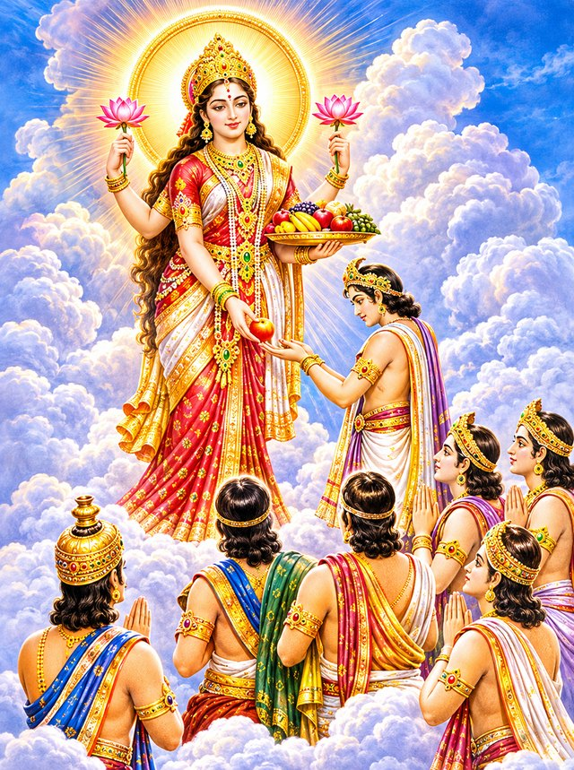
तब देवतालोग बोले–अम्बिके! हम लोगोंके लिये आपने असंख्य नेत्रोंसे युक्त रूप धारण कर लिया था। इसलिये मुनिजन आपको ‘शताक्षी’ कहेंगे। अपने शरीरसे उत्पन्न हुए शाकोंद्वारा आपने समस्त लोकोंका भरण–पोषण किया है। इसलिये ‘शाकम्भरी’ नामसे आपकी ख्याति होगी। आपने दुर्गम नामक महादैत्यका वध किया है, इसलिये लोग आप कल्याणमयी भगवतीको ‘दुर्गा’ कहेंगे। माता! आपतक मन, वाणी और शरीरकी पहुँच होनी कठिन है। सूर्य, चन्द्रमा और अग्नि–ये तीनों आपके नेत्र हैं। हम आपके प्रभावको नहीं जानते, इसलिये आपकी स्तुति करनेमें असमर्थ हैं। देवीने कहा–जैसे पूर्वकालमें तुम्हारी रक्षाके लिये मैंने दैत्योंको मारा है, उसी प्रकार आगे भी असुरोंका संहार करूँगी। जब मैं भ्रमरका रूप धारण करके अरुण नामक असुरका वध करूँगी, तब संसारके मनुष्य मुझे ‘भ्रामरी’ कहेंगे। फिर मैं भीम ( भयंकर) रूप धारण करके राक्षसोंको खाने लगूँगी, उस समय मेरा ‘भीमा देवी’ नाम प्रसिद्ध होगा। जब–जब पृथ्वीपर असुरोंकी ओरसे बाधा उत्पन्न होगी, तब–तब मैं अवतार लेकर प्रजाजनोंका कल्याण करूँगी, इसमें संशय नहीं है।
देवीके क्रियायोग एवं व्रत–उत्सव आदिका वर्णन
सूतजी कहते हैं–व्यासजीके द्वारा पार्वतीके अद्भुत क्रियायोगको सुननेकी जिज्ञासा करनेपर सनत्कुमारने कहा–हे द्वैपायन! ज्ञानयोग, क्रियायोग तथा भक्तियोग–यह श्रीमाताकी उपासनाके तीन मार्ग हैं। मुक्तिका प्रधान कारण योग है और उस योगके ध्येयका उत्तम साधन क्रियायोग है।
आश्विनमासके शुक्लपक्षमें नवरात्र–व्रत करना चाहिये। इसके करनेपर सम्पूर्ण कामनाएँ सिद्ध हो जाती हैं। इस नवरात्रके प्रभावका वर्णन करनेमें ब्रह्मा, महादेव तथा कार्तिकेय भी समर्थ नहीं हैं, फिर दूसरा कौन समर्थ हो सकता है?
यह उमासंहिता परम पुण्यमयी तथा शिवभक्तिको बढ़ानेवाली है। इसमें नाना प्रकारके उपाख्यान हैं। यह कल्याणमयी संहिता भोग तथा मोक्षको प्रदान करनेवाली है, अतः शिवाकी भक्ति चाहनेवाले पुरुषों को सदा इस परम पुण्यमयी उमासंहिताका श्रवण एवं पाठ करना चाहिये।
कैलाससंहिता
व्यासजीसे शौनकादि ऋषियों का संवाद
ऋषिगणोंके द्वारा शिवतत्त्वका ज्ञान बढ़ानेवाली कैलास–संहिताके वर्णनको सुननेकी इच्छा व्यक्त करनेपर व्यासजीने शिवतत्त्वसे युक्त दिव्य तथा उत्कृष्ट कैलास नामक संहिताका वर्णन करते हुए कहा–पूर्वकालमें हिमालयपर तप करनेवाले महातेजस्वी ऋषियोंने आपसमें विचारकर काशी जानेकी इच्छा की। उन्होंने काशी पहुँचकर मणिकर्णिकामें स्नानकर देवतादिका तर्पण किया। तदनन्तर देवाधिदेव विश्वेश्वरका पूजनकर शतरुद्रिय आदि मन्त्रोंसे उनकी स्तुति करके अपनेको कृतार्थ समझा और कहा– ‘आज हमलोग शिवकृपासे पूर्ण मनोरथवाले हो गये।’
उसी समय पंचक्रोशी परिक्रमा करनेके लिये आये हुए सूतजीको देखकर उनके पास जाकर सभीने प्रसन्नतापूर्वक उन्हें प्रणाम किया और कहा–हे महाभाग सूतजी! भगवान् व्यासजीने आपको सभी पुराणोंके गुरुरूपमें अभिषिक्तकर सर्वाधिक महत्त्व प्रदान किया है, अतः पौराणिकी विद्या आपके हृदयमें स्थित है। सभी पुराण वेदार्थका प्रतिपादन करते हैं। समस्त वेद प्रणवसे उत्पन्न हुए हैं, प्रणवका तात्पर्य स्वयं महेश्वर हैं, अतः महेश्वर आपके हृदयमें प्रतिष्ठित हैं। हे महामते! आप ही हम लोगोंके विशेष गुरु हैं, अतः आप परम कृपापूर्वक महेश्वरके श्रेष्ठ ज्ञानका उपदेश कीजिये।
सूतजी बोले–हे महर्षियो! पूर्व समयमें गुरुदेव व्यासजीने नैमिषारण्यनिवासी मुनियोंको जो उपदेश दिया था, उसीको मैं आपलोगोंसे कह रहा हूँ, जिसके सुननेमात्रसे लोगोंमें शिवभक्ति उत्पन्न हो जाती है, आपलोग सावधान होकर सुनें।
पूर्वकालमें ऋषिगण यज्ञाधिपति रुद्रको प्रसन्न करनेकी इच्छासे दीर्घसत्र करने लगे। उनकी यह भावना देखकर भगवान् वेदव्यास वहींपर प्रकट हो गये। उन्हें देखकर मुनिगणोंने सत्कारपूर्वक उन्हें उत्तम आसनपर विराजमान कराया और कहा–हे महाभाग! प्रणवके अर्थको प्रकाशित करनेकी इच्छावाले हमलोग नैमिषारण्य नामक इस तीर्थमें महासत्र सम्पादित कर रहे हैं। अतः हे दयानिधे! आप इस अपार भ्रमसागरमें डूबते हुए हमलोगोंको शिवज्ञानरूपी नौकासे पार कर दीजिये। इस प्रकार मुनियोंके द्वारा प्रार्थना किये जानेपर महामुनि व्यासजीने कहा–हे ब्राह्मणों! प्रणवार्थको प्रकाशित करनेवाला शिवज्ञान सर्वथा दुर्लभ है। शिवभक्तिसे रहित लोगोंको यह नहीं प्राप्त होता है। आपलोगोंने भगवान् सदाशिवकी उपासना की है। अतः मैं आपलोगोंसे उमा–महेश्वरका संवादरूप प्राचीन इतिहास कह रहा हूँ।
किसी समय हिमालयपर्वतपर पतिके निकट बैठी गौरी शिवजीसे कहने लगीं–हे देव! आपके द्वारा उपदिष्ट मन्त्र प्रणवयुक्त कहे गये हैं, अतः सबसे पहले मैं प्रणवके निश्चित अर्थको सुनना चाहती हूँ। प्रणव किस प्रकार उत्पन्न हुआ, यह वेदका आदि क्यों कहा जाता है, इसके जपकी विधि क्या है? हे महेशान! यदि आपकी मुझपर कृपा है तो यह सब मुझे विशेषरूपसे बताइये।
भगवान् शिव बोले–हे देवि! प्रणवके अर्थको जान लेना ही मेरा ज्ञान है। यह सभी विद्याओंका बीज है। यह वेदका आदि, वेदका सार और विशेषरूपसे मेरा स्वरूप है। मैं शिव इस ‘ॐ’ नामक एकाक्षर मन्त्रमें निवास करता हूँ। शिवको ही प्रणवस्वरूप तथा प्रणवको ही शिवस्वरूप कहा गया है। हे देवेशि! मैं काशीमें जीवोंकी मुक्तिके लिये सभी मन्त्रोंमें श्रेष्ठ इसी प्रणवका उपदेश करता हूँ।
यह प्रणव ब्रह्मासे लेकर स्थावरपर्यन्त सम्पूर्ण प्राणियोंका प्राण ही है। अतः इसे प्रणव कहा गया है। इस प्रणवका आदि अक्षर अकार है। उसके बाद उकार, मध्यमें मकार और अन्तमें नाद है। इनके संयोगसे ‘ॐ’ बनता है। ‘सर्वं खल्विदं ब्रह्म’ इस श्रुतिके अनुसार सारा प्रपंच ही ओंकारस्वरूप है। जिसे दृढ़ वैराग्य होता है, वही इस प्रणवका अधिकारी है।
इसके अनन्तर जीव और ब्रह्मकी एकत्व भावनासे प्रणवका वर्णन करते हुए भगवान् सदाशिव संन्यास–विधिका वर्णन करते हैं और भगवतीसे कहते हैं कि साधकको सावधानचित्त होकर ‘ॐ’ एकाक्षर मन्त्रका उच्चारण करते हुए उस दहराकाशके मध्य तुम्हारे साथ मेरा सदा स्मरण करना चाहिये। इस प्रकारके उपासकको मेरा लोक प्राप्त होता है और वह मुझसे ज्ञान पाकर मेरे सायुज्यका फल प्राप्त कर लेता है।
शौनकादि ऋषियोंसे वार्ता करनेके उपरान्त सूतजी तीर्थयात्राके प्रसंगसे पृथ्वीपर भ्रमण करने लगे। एक संवत्सर बीत जानेके बाद महामुनि सूतजी पुनः काशी आये। उन्हें देखकर ऋषिगण बहुत प्रसन्न हुए।
ऋषि बोले–हे मुने! विरजा होमके समय पहले आपने जो वामदेवका मत सूचित किया था, उसे हमने विस्तारपूर्वक नहीं सुना। अब हम बड़े आदर और श्रद्धाके साथ सुनना चाहते हैं। श्रीशिवकथाकी बात सुनकर सूतजीके शरीरमें रोमांच हो आया और वे प्रसन्न होकर बोले–महाभाग महात्माओ! तुम भगवान् शिवके भक्त तथा दृढ़तापूर्वक व्रतका पालन करनेवाले हो, यह जानकर ही मैं तुम लोगोंके समक्ष इस विषयका वर्णन करता हूँ–पूर्वकालके रथन्तर कल्पमें महामुनि वामदेव माताके गर्भसे बाहर निकलते ही शिवतत्त्वके ज्ञाताओंमें सर्वश्रेष्ठ माने जाने लगे। वे वेदों, आगमों, पुराणों तथा अन्य सब शास्त्रोंके भी तात्विक अर्थको जाननेवाले थे। उनके मनमें किसी वस्तुकी इच्छा नहीं थी तथा वे अहंकारशून्य थे। वे दिगम्बर महाज्ञानी महात्मा दूसरे महेश्वरके समान जान पड़ते थे। इस तरह घूमते हुए वामदेवजी मेरुके दक्षिण शिखर कुमारश्रृंगपर प्रसन्नतापूर्वक पहुँचे, जहाँ मयूरवाहन शिवकुमार सर्वदेववन्दित भगवान् स्कन्द रहते थे। उनके साथ उनकी शक्तिभूता ‘गजावल्ली’ भी थीं। वहीं स्कन्दस्वामीके समीप स्कन्दसर नामका एक प्रसिद्ध सरोवर था।
महामुनि वामदेवने शिष्योंके साथ उसमें स्नान करके शिखरपर बैठे हुए कुमारका दर्शन किया। वे उगते हुए सूर्यके समान तेजस्वी थे, मोर उनका वाहन था। स्कन्दका दर्शन और पूजन करके उन मुनीश्वरने बड़ी भक्तिसे उनका स्तवन किया।
प्रणव–महिमा
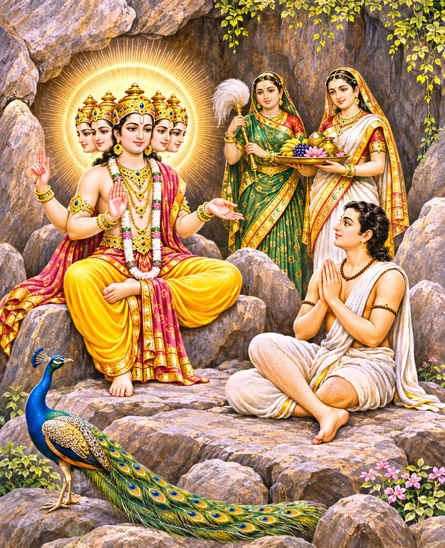
वामदेवने भगवान् स्कन्दकी स्तुति करके तीन बार उनकी परिक्रमा की और बारम्बार साष्टांग प्रणाम करके विनीत भावसे उनके पास खड़े हो गये। वामदेवजीके द्वारा किये गये स्तोत्रको सुनकर भगवान् स्कन्द बल बड़े प्रसन्न हुए और वामदेवजीसे बोले–मुने! मैं तुम्हारी भक्तिसे तुमपर बहुत प्रसन्न हूँ। यदि मुझसे कुछ सुनना हो तो कहो, मैं लोकपर अनुग्रह करनेके लिये उनका वर्णन करूँगा। वामदेवजी विनयपूर्वक बोले–महाप्राज्ञ! प्रणव सबसे उत्तम मन्त्र है तथा साक्षात् परमेश्वरका वाचक है। पशुओं (जीवों ) –के पाश (बन्धन)–को छुड़ानेवाले भगवान् पशुपति ही उसके वाच्यार्थ हैं। ‘ओमितीदं सर्वम्’ (तै० उ० १।८। १) ओंकार ही यह प्रत्यक्ष दिखनेवाला जगत् है। यह सनातन श्रुतिका कथन है। ‘ओमिति ब्रह्म’ (तै० उ० १।८।१) अर्थात् ‘ॐ’ यह ब्रह्म है तथा ‘सर्वं ह्येतद् ब्रह्म’ (माण्डूक्योपनिषद् २) यह सब–का–सब ब्रह्म ही है इत्यादि बातें भी श्रुतियों द्वारा कही गयी हैं। तात्पर्य यह है कि समष्टि और व्यष्टि सभी पदार्थ प्रणवके अर्थ हैं। प्रणवद्वारा सबका प्रतिपादन होता है। यह बात मैंने सुन रखी है। अतः कृपा करके आप प्रणवके अर्थका प्रतिपादन कीजिये। मुनिके इस प्रकार पूछनेपर स्कन्दने भगवान् सदाशिवको प्रणाम करके उस श्रेयका वर्णन आरम्भ किया, जिसे श्रुतियोंने भी छिपा रखा है।
श्रीस्कन्दने कहा–मुनीश्वर वामदेव! इस लोकमें जितने जीव हैं, वे सब नाना प्रकारके शास्त्रोंसे मोहित हैं। परमेश्वरकी अति विचित्र मायाने उन्हें परमार्थसे वंचित कर दिया है। अतः प्रणवके वाच्यार्थभूत साक्षात् महेश्वरको वे नहीं जानते। वे महेश्वर ही सगुण–निर्गुण अर्थात् त्रिदेवोंके जनक परब्रह्म परमात्मा हैं। मैं बारम्बार इस सत्यको दोहराता हूँ कि प्रणवके अर्थ साक्षात् शिव ही हैं। श्रुति, स्मृति, शास्त्रों एवं पुराणोंमें प्रधानतया उन्हींको प्रणवका वाच्यार्थ बताया गया है। जो परमात्मा स्वयं किसीसे और कभी उत्पन्न नहीं होता, वह परब्रह्म परमात्मा सम्पूर्ण ऐश्वर्यसे सम्पन्न होनेके कारण स्वयं ही सर्वेश्वर ‘शिव’ नाम धारण करता है। मुमुक्षु योगियोंको नित्य उनके इस स्वरूपका ध्यान करना चाहिये।
इस मानवलोकमें चार वर्ण प्रसिद्ध हैं। उनमेंसे जो ब्राह्मण, क्षत्रिय एवं वैश्य–ये तीन वर्ण हैं, उनका वैदिक आचारसे सम्बन्ध है। शूद्रोंका वेदाध्ययनमें अधिकार न होनेके कारण त्रैवर्णिकों की सेवा ही उनके लिये सारभूत धर्म है। श्रुति और स्मृतिमें प्रतिपादित कर्मका अनुष्ठान करनेवाला पुरुष अवश्य सिद्धिको प्राप्त होगा। वर्ण–धर्म और आश्रमधर्मके पालनजनित पुण्यसे परमेश्वरका पूजन करके बहुत–से श्रेष्ठ मुनि उनके सायुज्यको प्राप्त हो गये। ब्रह्मचर्यका पालन करनेसे ऋषियोंकी, यज्ञ–कर्मके अनुष्ठानसे देवताओंकी तथा सन्तानोत्पादनसे पितरोंकी तृप्ति होती है–ऐसा श्रुतिने कहा है। इस तरह ऋषिऋण, देवऋण तथा पितृऋण–इन तीनोंसे मुक्त हो वानप्रस्थ–आश्रममें प्रविष्ट होकर मनुष्य सुख–दुःख आदि द्वन्द्वोंको सहन करते हुए जितेन्द्रिय, तपस्वी, मिताहारी हो योगका अभ्यास करे, जिससे बुद्धि निश्चल तथा अतिदृढ़ हो जाय। इस प्रकार क्रमशः अभ्यास करके शुद्ध चित्त हुआ पुरुष सम्पूर्ण कर्मोंका संन्यास कर दे। समस्त कर्मोंका संन्यास करनेके पश्चात् ज्ञानमयी पूजाके द्वारा परमेश्वरको प्रसन्न करे, यह पूजा जीवकी साक्षात् शिवके साथ एकताका बोध कराकर जीवन्मुक्तिरूप फल देनेवाली है। यतियोंके लिये इस पूजाको सर्वोत्तम तथा निर्दोष समझना चाहिये। इसके अनन्तर श्रीस्कन्दजीने ज्ञानमयी पूजाका वर्णन करते हुए संन्यास–ग्रहणकी शास्त्रीय विधि, दण्डधारण आदिका प्रकार, प्रणवके अर्थोंका विवेचन, शैवदर्शनके अनुसार शिवतत्त्व, शिवसे जीव और जगत्की अभिन्नताका प्रतिपादन तथा महावाक्योंके अर्थका चिन्तन एवं उसका भावार्थ प्रस्तुत किया।
इसके बाद श्रीस्कन्दने यतियोंपर कृपा करके उनसे संन्यासियोंके क्षौर और स्नान–विधिका वर्णन किया तथा यतिके अन्त्येष्टि–कर्म, दशाह–एकादशाह कृत्य एवं द्वादशाह कृत्यका वर्णन तथा उसकी प्रक्रियाका विवेचन किया।
यह सब वर्णन करते हुए श्रीस्कन्दजी कहते हैं–मुने! मैंने जो कुछ वर्णन किया है, वह साक्षात् भगवान् शिवका कहा हुआ उत्तम रहस्य है, जो वेदान्तके सिद्धान्तके अनुरूप है। इस मार्गपर चलनेवाला यति ‘शिवोऽहमस्मि’ (मैं शिव हूँ) इस आत्मस्वरूप शिवकी भावना करता हुआ शिवस्वरूप हो जाता है।
सूतजी कहते हैं–इस प्रकार मुनीश्वर वामदेवको उपदेश देकर देवेश्वर कार्तिकेय कैलासशिखरपर चले गये। मुनि वामदेव भी कार्तिकेयको प्रणाम करके कैलास–शिखरपर जा पहुँचे और वहाँ उन्होंने उमासहित महेश्वरके मोक्षदायक चरणोंका दर्शन किया। तत्पश्चात् उन्होंने भाँति–भाँतिके स्तोत्रोंद्वारा जगदम्बा और पुत्रसहित परमेश्वर शिवका स्तवन किया। इसके बाद देवी पार्वती और महादेवजीके चरणकमलोंका आश्रय लेकर वे वहीं सुखपूर्वक रहने लगे। आप सभी ऋषि भी इसी प्रकार प्रणवके अर्थभूत महेश्वरका तथा मोक्षदायक तारकमन्त्र ‘ॐकार’ का ज्ञान प्राप्त करके यहीं सुखसे रहो तथा विश्वनाथजीके चरणों में सायुज्यरूपा उत्तम मुक्तिका चिन्तन करो। अब मैं भी गुरुदेवकी सेवाके निमित्त बदरिकाश्रमतीर्थको जाऊँगा।
वायवीयसंहिता (पूर्वखण्ड)
किसी समय धर्मक्षेत्र नैमिषारण्यतीर्थके प्रयागक्षेत्रमें सत्यव्रतपरायण मुनियोंने महायज्ञका आयोजन किया था। उन महर्षियोंके यज्ञका वृत्तान्त सुनकर महात्मा सूतजी वहाँ पधारे। मुनियोंने उनका यथोचित स्वागत एवं पूजन किया तथा बोले–हे महाभाग! हमलोगोंके कल्याणके लिये ज्ञानसे युक्त तथा वेदान्तके सारस्वरूप पुराणको हमें सुनाइये।
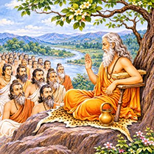
इसके अनन्तर सूतजीने शिवागमोक्त सिद्धान्तोंसे विभूषित पुराणानुक्रम एवं पुराणकी उत्पत्तिका वर्णन करते हुए चारों वेद, उनके छः अंग, मीमांसा, न्याय, पुराण एवं धर्मशास्त्र इसके अतिरिक्त आयुर्वेद, धनुर्वेद, गान्धर्ववेद तथा अर्थशास्त्र–इस प्रकार अठारह विद्याओंका वर्णन किया और कहा कि इन सबके आदिकर्ता साक्षात् महेश्वर हैं।
भगवान् सदाशिवने समस्त जगत्को उत्पन्न करनेकी इच्छा करते हुए सनातन ब्रह्मदेवको साक्षात् पुत्ररूपमें उत्पन्न किया। तत्पश्चात् उन्होंने अपने मध्यम पुत्र भगवान् विष्णुको जगत्के पालनके लिये रक्षाशक्ति प्रदान की।
ब्रह्माजीने प्रजासृष्टिका विस्तार करते हुए सर्वप्रथम पुराणोंका स्मरण किया। इसके पश्चात् उनके मुखसे वेद उत्पन्न हुए। उसके अनन्तर समस्त शास्त्र उत्पन्न हुए। विस्तृत विद्याओंको संक्षिप्त करनेके लिये प्रत्येक द्वापरके अन्तमें प्रभु विष्णु व्यासरूपसे इस पृथ्वीपर अवतार लेकर विचरण करते हैं।
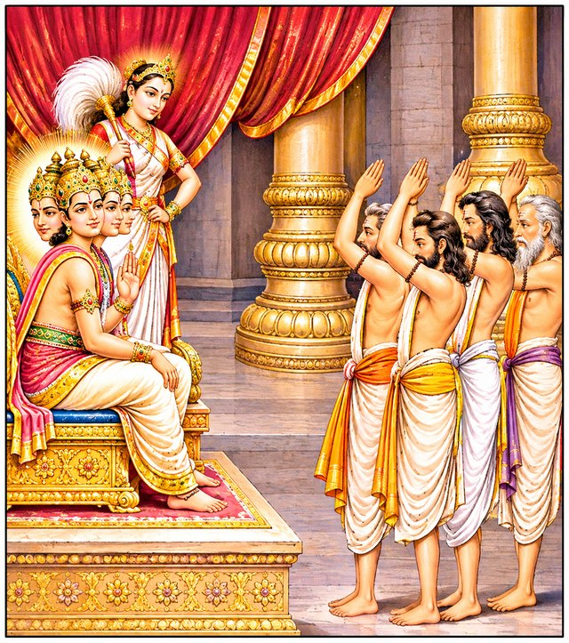
सूतजी कहते हैं–श्वेतवाराह कल्पमें ऋषियोंमें परस्पर विवाद हुआ, यह ब्रह्म है या नहीं है–इस प्रकार परब्रह्मका निरूपण बहुत कठिन होनेके कारण वे सभी मुनिगण सृष्टिकर्ता ब्रह्माजीके पास पहुँचे और प्रणामकर कहने लगे–हे भगवन्! हम लोग घोर अज्ञानान्धकारसे घिरे हुए हैं। अतः परस्पर विवाद करते हुए दुखी हैं। हमलोगोंको परमतत्त्वका ज्ञान अभीतक नहीं हो पाया है–ऐसा पूछे जानेपर ब्रह्माजीके नेत्र आश्चर्यसे खिल उठे और वे ध्यानमें मग्न होकर ‘रुद्र–रुद्र’ इस प्रकारका शब्द उच्चारण करते हुए बोले– ‘जो सम्पूर्ण जगत्के सृष्टिकर्ता हैं, जिनसे ये सभी ब्रह्मा, विष्णु, रुद्र एवं इन्द्रादि देवता उत्पन्न हुए, जिन्होंने सर्वप्रथम मुझे पुत्ररूपसे उत्पन्न किया, वेदोंका ज्ञान प्रदान किया; उन्हींकी कृपासे मैंने इस प्रजापति पदको प्राप्त किया, वे एकमात्र भगवान् रुद्र हैं, दूसरा कोई नहीं है।’ समस्त जीव इनके वशमें हैं। ये सबके प्रेरक हैं, ये परम भक्तिसे ही देखे जा सकते हैं, अन्य उपायोंसे नहीं। वह भक्ति शिवकी कृपासे ही प्राप्त होती है और उनकी कृपा भक्तिसे उत्पन्न होती है, जैसे अंकुरसे बीज और बीजसे अंकुर उत्पन्न होता है। ज्ञान और भक्तिके अनुरूप शिवकी कृपा प्राप्त होनेपर मुक्ति होती है। इस समय आप लोगोंने जो दिव्य सहस्त्र वर्षवाला दीर्घ यज्ञानुष्ठान किया है, उस यज्ञके अन्तमें मन्त्रद्वारा आवाहन करनेपर वायुदेव वहाँ पधारेंगे; वे ही आप लोगोंको कल्याणका साधन एवं उपाय बतायेंगे।
नैमिषारण्यकी यज्ञभूमिमें वायुदेवका पधारना
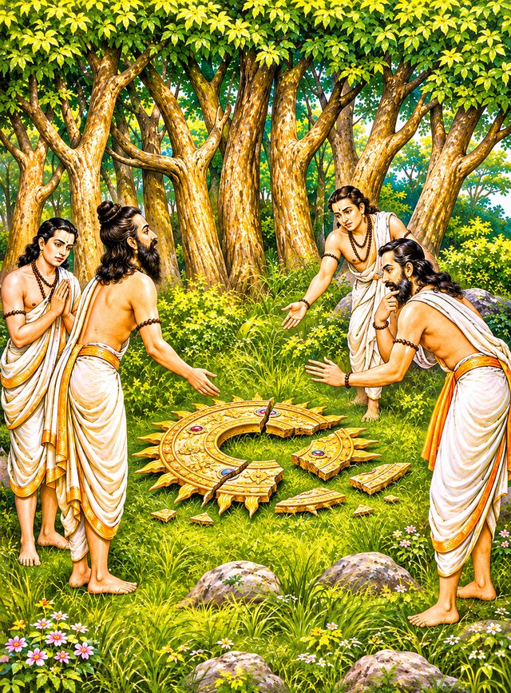
तदनन्तर ब्रह्माजीने कहा–मैंने इस मनोमय चक्रका निर्माण किया है। मैं इस चक्रको छोड़ रहा हूँ, जहाँ इसकी नेमि गिरकर टूट जाय, वही देश तपस्याके लिये शुभ होगा। ऐसा कहकर पितामहने उस सूर्यतुल्य मनोमय चक्रकी ओर देखकर और महादेवजीको प्रणामकर उसे छोड़ दिया। फेंका गया वह कान्तिमय चक्र विमल जलसे युक्त सरोवरवाले किसी वनके एक मनोहर शिलापटपर गिर पड़ा। इसी कारणसे वह वन मुनिपूजित नैमिषारण्य नामसे विख्यात हुआ। सूतजी कहते हैं–उन ऋषियोंने उस स्थानमें यज्ञानुष्ठान प्रारम्भ किया। कुछ समय बीत जानेपर वह यज्ञ जब समाप्त हो गया तब ब्रह्माजीकी आज्ञासे वहाँ स्वयं वायुदेव पधारे।
तब सभीने उठकर वायुदेवको प्रणामकर उन्हें स्वर्णमय आसन प्रदान किया, तत्पश्चात् उनकी भलीभाँति पूजा की। इसके बाद मुनियोंके द्वारा पूछे जानेपर शिवमें उनकी भक्ति बढ़ानेके लिये वायुदेवने सृष्टिकी उत्पत्ति एवं शिवका ऐश्वर्य संक्षेपमें बताया।
मुनियोंने पूछा– ‘आपने वह कौन–सा ज्ञान प्राप्त किया है, जो परमसे भी परम, सत्य एवं शुभ है तथा जिसमें उत्तम निष्ठा रखकर पुरुष परम आनन्दको प्राप्त करता है।’ वायुदेवता बोले–महर्षियो! मैंने पूर्वकालमें पशु, पाश और पशुपतिका जो ज्ञान प्राप्त किया था, सुख चाहनेवाले पुरुषको उसीमें ऊँची निष्ठा रखनी चाहिये। अज्ञानसे उत्पन्न होनेवाला दुःख ज्ञानसे ही दूर होता है। वस्तुके विवेकका नाम ज्ञान है। वस्तुके तीन भेद माने गये हैं–जड़ (प्रकृति), चेतन (जीव) और इन दोनोंका नियन्ता (परमेश्वर )–इन्हीं तीनोंको क्रमसे पाश, पशु तथा पशुपति कहते हैं। ब्रह्माजीसे लेकर स्थावर प्राणियोंतक सभी जीव पशु कहे गये हैं। उन सभी पशुओंके लिये ही यह उत्तम दृष्टान्त कहा गया है। यह जीव पाशोंमें बँधता और सुख–दुःख भोगता है, इसलिये ‘पशु’ कहलाता है। यह ईश्वरकी लीलाका साधनभूत है।
महर्षियो! इस विश्वका निर्माण करनेवाला कोई पति है, वही पशुओंको पाशसे मुक्त करनेवाला है। अतः वही पशुपति है। पशु, पाश और पतिका जो वास्तवमें पृथक्–पृथक् स्वरूप है, उसे जानकर ही ब्रह्मवेत्ता मनुष्य योनिसे मुक्त होता है। सृष्टिके आरम्भमें एक रुद्रदेव ही विद्यमान रहते हैं, दूसरा कोई नहीं रहता। वे ही इस जगत्की सृष्टि करके इसकी रक्षा करते हैं और सबका संहार कर डालते हैं।
इसके अनन्तर वायुदेवने विद्या –अविद्या, प्रकृति–पुरुष, आत्मतत्त्व–जीवतत्त्वका तात्त्विक विवेचन प्रस्तुत किया है।
संक्षेपमें सिद्धान्तकी बात यह है कि भगवान् शिव प्रकृति एवं पुरुषसे परे हैं, यही सृष्टिकालमें जगत्को रचते और संहारकालमें पुनः सबको आत्मसात् कर लेते हैं।
काल–महिमाका वर्णन
ऋषियोंद्वारा जिज्ञासा करनेपर वायुदेवने कालकी महिमाका वर्णन करते हुए कहा–सम्पूर्ण जगत् तो कालके वशमें है, पर काल जगत्के वशमें नहीं है। शिवजीका अप्रतिहत तेज कालमें सन्निविष्ट है, इसलिये कालकी महान् मर्यादा मिटायी नहीं जा सकती।
‘तदनन्तर वायुदेवने काल–महिमा, प्रलय, ब्रह्माण्डकी स्थिति, रुद्रोत्पत्ति एवं ब्रह्माजीद्वारा सृष्टि–रचना तथा सर्ग आदिका वर्णन किया।
ब्रह्माजीद्वारा सृष्टि–रचनाका उपक्रम
वायुदेवने कहा–ब्रह्माजीने पहले पाँच मानसपुत्रोंको उत्पन्न किया। सनक, सनन्दन, सनातन, ऋभु और सनत्कुमार–ये सब–के–सब योगी तथा वीतराग थे। उन्होंने सृष्टि–रचनाकी इच्छा नहीं की, तब ब्रह्माजीने पुनः सृष्टि–रचनाकी इच्छासे बड़ी भारी तपस्या की, पर इससे उनका कोई काम न बना। इस कारण क्रोधित होनेपर ब्रह्माजीके दोनों नेत्रोंसे आँसूकी बूँदें गिरने लगीं। इन अश्रुबिन्दुओंसे भूत–प्रेत उत्पन्न हुए। क्रोध–मोहके कारण उन्हें मूर्च्छा आ गयी। इसी क्रममें भगवान् नीललोहित शिव ब्रह्माजीके मुखसे ग्यारह रूपोंमें प्रकट हुए। महादेवजीने उन ग्यारह स्वरूपोंसे कहा कि तुम लोग आलस्यरहित होकर प्रजा–संतानकी वृद्धिके लिये प्रयत्न करो। उनके ऐसा कहनेपर वे व्याकुल होकर रोने और दौड़ने लगे। रोनेके कारण उनका नाम ‘रुद्र’ हुआ। इसके अनन्तर ब्रह्माने आठ नामोंद्वारा परमेश्वर शिवका स्तवन किया। ब्रह्माजीके इस प्रकार प्रार्थना करनेपर भगवान् रुद्रदेवकी आज्ञा प्राप्तकर ब्रह्माने अन्यान्य प्रजाओंकी सृष्टि आरम्भ की। उन्होंने अपने मनसे ही मरीचि, भृगु, अंगिरा, पुलस्त्य आदि बारह पुत्रोंकी सृष्टि की। तत्पश्चात् समाधिद्वारा अपने चित्तको एकाग्र करके रुद्रसहित ब्रह्माजीने देवताओं, असुरों, पितरों, विद्याधरों, गन्धर्वों, गुद्यकों, मनुष्यों एवं पशु–पक्षियों, जलचरों, सर्पों, कीटों इत्यादिको अपने अंगों–उपांगोंसे उत्पन्न किया।
वायुदेवने कहा–वास्तवमें अचिन्त्यरूप महेश्वर ही सब भूतोंके निर्माता हैं। उनके मुखसे ब्राह्मण प्रकट हुए हैं, वक्षस्थलके ऊपरी भागसे क्षत्रियोंकी उत्पत्ति हुई है, दोनों जाँघोंसे वैश्य तथा पैरोंसे शूद्र उत्पन्न हुए। इस प्रकार उनके अंगोंसे सम्पूर्ण वर्णोंका प्रादुर्भाव हुआ है।
ब्रह्माजीद्वारा भगवान् अर्धनारीश्वरकी स्तुति
वायुदेव बोले–जब ब्रह्माजीद्वारा रची गयी प्रजाओंका पुनः विस्तार नहीं हुआ, तब ब्रह्माजीने मैथुनी सृष्टिके लिये परमेश्वरको प्रसन्न करनेकी इच्छासे कठोर तप करना प्रारम्भ किया। भगवान् सदाशिव ब्रह्माजीके तपसे सन्तुष्ट होकर अर्धनारीश्वरके रूपमें प्रकट हो गये। तब ब्रह्माजी हाथ जोड़कर दण्डवत् प्रणाम करके वेदार्थसे युक्त सूक्ष्म अर्थोंसे परिपूर्ण सूक्तोंसे भगवान् अर्धनारीश्वरकी स्तुति करने लगे।
ब्रह्माजीकी स्तुतिसे प्रसन्न होकर मधुर वचन कहते हुए महादेवने अपने शरीरके वामभागसे देवी रुद्राणीको प्रकट किया। जिन दिव्य गुणसम्पन्न देवीको ब्रह्मवेत्ता लोग परात्पर परमात्मा शिवकी पराशक्ति कहते हैं, जिनमें जन्म, मृत्यु, जरा आदि नहीं हैं, वे भवानी शिवजीके अंगसे उत्पन्न हुईं।
ब्रह्माजी बोले–हे सर्वजगन्मयी देवी! सृष्टिकी बढ़ोत्तरीके लिये मैं मैथुनी सृष्टि करना चाहता हूँ। आपसे पहले नारीकुलका प्रादुर्भाव नहीं हुआ था। सम्पूर्ण शक्तियोंका आविर्भाव आपसे ही होता है। इस चराचर जगत्की वृद्धिकी लिये आप अपने अंशसे मेरे पुत्र दक्षकी पुत्री हो जाइये।
ब्रह्माके इस प्रकार याचना करनेपर देवी रुद्राणीने अपनी भौंहों के मध्य भागसे अपने ही समान कान्तिमती एक शक्ति प्रकट की। ब्रह्माजीकी प्रार्थनाके अनुसार वे देवी दक्षपुत्री हो गयीं तथा ब्रह्माजीको अनुपम शक्ति देकर वे महादेवजीके शरीरमें प्रविष्ट हो गयीं और महादेवजी भी अन्तर्धान हो गये। तभीसे इस जगतमें स्त्री–जातिमें भोग प्रतिष्ठित हुआ तथा मैथुनद्वारा प्रजाकी सृष्टि होने लगी। इससे ब्रह्माजीको भी संतोष और आनन्द प्राप्त हुआ।
इसके पश्चात् ऋषियोंकी कई शंकाओंका समाधान वायुदेवताके द्वारा किया गया तथा भगवान् शिव और भगवती पार्वतीकी लीलाओंका वर्णन भी सूतजीने किया।
वायुदेवता कहते हैं–मुनियो! परोक्ष तथा अपरोक्ष प्रकारभेदसे ज्ञान दो प्रकारका माना गया है। परोक्ष ज्ञानको अस्थिर कहा जाता है और अपरोक्ष ज्ञानको सुस्थिर। युक्तिपूर्ण उपदेशसे जो ज्ञान होता है, उसे परोक्ष कहते हैं। वही श्रेष्ठ अनुष्ठानसे अपरोक्ष हो जाता है। अपरोक्ष ज्ञानके बिना मोक्ष नहीं होता। अतः तुम लोग आलस्यरहित हो श्रेष्ठ अनुष्ठानकी सिद्धिके लिये प्रयत्न करो।
ऋषियोंने पूछा–वायुदेव! वह कौन–सा श्रेष्ठ अनुष्ठान है, जो मोक्षस्वरूप ज्ञानको अपरोक्ष कर देता है। वायुने कहा–भगवान् शिवका बताया हुआ जो परम धर्म है, उसीको श्रेष्ठ अनुष्ठान कहा गया है। उसके सिद्ध होनेपर स्वयं मोक्षदायक शिव अपरोक्ष हो जाते हैं।
उपमन्युपर भगवान् शंकरकी कृपा
धौम्यके बड़े भाई उपमन्युके द्वारा बाल्यावस्थामें दूधकी प्राप्तिके लिये माताकी आज्ञासे तपस्या करनेपर भगवान् शिवने किस प्रकार उपमन्युपर कृपा की और उन्हें वर प्रदान किया, इस प्रकार ऋषियों द्वारा जिज्ञासा करनेपर वायुदेवने विस्तारपूर्वक इसका वर्णन करते हुए कहा कि भगवान् विष्णुके अनुरोध करनेपर शिवजी पहले इन्द्रका रूप धारणकर उपमन्युके पास गये, परंतु उपमन्युद्वारा इन्द्रसे कुछ प्राप्त करना स्वीकार नहीं करनेपर सदाशिव भगवान् शंकर उपमन्युपर कृपा करते हुए अपने स्वरूपमें प्रकट हो गये तथा उपमन्युको अभीष्ट फल प्रदानकर महेश्वर वहीं अन्तर्धान हो गये। उपमन्यु भी परमेश्वरसे उत्तम वर पाकर सुखपूर्वक अपनी जन्मदात्री माताके स्थानपर चले गये।
वायवीयसंहिता (उत्तरखण्ड)
उपमन्युद्वारा श्रीकृष्णको पाशुपत ज्ञानका उपदेश
वायुदेवके पधारनेपर ऋषियोंने उनसे कहा– ‘भगवन्! भगवान् श्रीकृष्ण किसी समय धौम्यके बड़े भाई उपमन्युसे मिले थे और उनकी प्रेरणासे पाशुपत व्रतका अनुष्ठान करके उन्होंने परम ज्ञान प्राप्त कर लिया था। आप यह बतायें कि भगवान् श्रीकृष्णने परम उत्तम पाशुपत ज्ञान किस प्रकार प्राप्त किया?’
वायुदेवता बोले–महर्षियो! पूर्वकालमें भगवान् श्रीकृष्णने महर्षि उपमन्युको प्रणाम करके उनसे इस प्रकार कहा–भगवन्! महादेवजीने देवी पार्वतीको जिस पाशुपत ज्ञान तथा अपनी जिस सम्पूर्ण विभूतिका उपदेश दिया था, मैं उसीको सुनना चाहता हूँ। महादेवजी पशुपति कैसे हुए? पशु कौन कहलाते हैं?
श्रीकृष्णके इस प्रकार पूछनेपर उपमन्युने कहा–देवकीनन्दन! ब्रह्माजीसे लेकर स्थावरपर्यन्त जो भी संसारके चराचर प्राणी हैं, वे सब–के–सब भगवान् शिवके पशु कहलाते हैं और उनके पति (स्वामी) होनेके कारण देवेश्वर शिवको पशुपति कहा गया है। वे पशुपति अपने पशुओंको माया आदि पाशोंसे बाँधते हैं और भक्तिपूर्वक उनके द्वारा आराधित होनेपर वे स्वयं ही उन्हें उन पाशोंसे मुक्त कर देते हैं। यही है पाशुपत ज्ञान।
शिव और शिवाकी विभूतियोंका वर्णन
श्रीकृष्ण कहते हैं–भगवन्! मुझे यह जाननेकी इच्छा है कि परमेश्वरी शिवा और परमेश्वर शिवका यथार्थ स्वरूप क्या है? उन दोनोंने स्त्री और पुरुषरूप इस जगत्को किस प्रकार व्याप्त कर रखा है?
उपमन्यु बोले–देवकीनन्दन! साक्षात् महादेवी पार्वती शक्ति हैं और महादेवजी शक्तिमान् हैं। यह जगत् शिव और शिवाके शासनमें
है, इसलिये वे दोनों इसके ईश्वर या विश्वेश्वर कहे गये हैं। जैसे शिव हैं, वैसे ही शिवा देवी हैं तथा जैसी शिवा देवी हैं, वैसे ही शिव हैं। जिस तरह चन्द्रमा और उनकी चाँदनीमें कोई अन्तर नहीं है, उसी प्रकार शिव और शिवामें अन्तर नहीं है। शिवके बिना शक्ति नहीं रह सकतीं और न शक्तिके बिना शिव।
परमेश्वर शिव पुरुष हैं और परमेश्वरी शिवा प्रकृति। महेश्वर शिव रुद्र हैं और उनकी वल्लभा शिवादेवी रुद्राणी। विश्वेश्वर देव विष्णु हैं और उनकी प्रिया लक्ष्मी। जब सृष्टिकर्ता शिव ब्रह्मा कहलाते हैं तब उनकी प्रियाको ब्रह्माणी कहते हैं। भगवान् शंकर ही सारे संसारके पुरुष और महेश्वरी शिवा ही सम्पूर्ण स्त्रियोंके रूपमें व्यक्त हैं। अतः सभी स्त्री–पुरुष उन्हींकी विभूतियाँ हैं।
जैसे जलते हुए दीपककी शिखा समूचे घरको प्रकाशित करती है, उसी प्रकार शिव–पार्वतीका यह तेज व्याप्त होकर सम्पूर्ण जगत्को प्रकाश दे रहा है। ये दोनों शिवा और शिव सर्वरूप हैं, सबका कल्याण करनेवाले हैं, अतः सदा ही इन दोनोंका पूजन, नमन एवं चिन्तन करना चाहिये।
श्रीकृष्ण! आज मैंने तुम्हारे समक्ष अपनी बुद्धिकी अनुसार परमेश्वर शिव और शिवाके यथार्थ स्वरूपका वर्णन किया है, परंतु यह नहीं मान लेना कि इन दोनोंके यथार्थ रूपका पूर्णतः वर्णन हो गया।
उपमन्यु कहते हैं–यदुनन्दन! यह चराचर जगत् देवाधिदेव महादेवजीका ही स्वरूप है।
‘प्रणव’ की महिमा
शिव साक्षात् परमात्मा हैं। वे नित्य परिपूर्ण हैं। दूसरोंपर परम अनुग्रह ही उनके समस्त कर्मोंका फल है। ‘प्रणव’ उन परब्रह्म परमात्मा शिवका वाचक है। शिवके रुद्र आदि नामोंमें प्रणव ही सबसे उत्कृष्ट माना गया है। प्रणववाच्य शम्भुके चिन्तन और जपसे जो सिद्ध प्राप्त होती है, वही परा सिद्धि है। माण्डूक्योपनिषद्में प्रणवकी चार मात्राएँ बतायी गयी हैं–अकार, उकार, मकार और नाद। अकारको ऋग्वेद, उकारको यजुर्वेद, मकारको सामवेद और नादको अथर्ववेद कहा गया है। अकार सृष्टिकर्ता ब्रह्मा है। उकार पालनकर्ता श्रीहरि है, मकार संहारकर्ता रुद्र है, नाद परमपुरुष परमेश्वर है, वह निर्गुण एवं निष्क्रिय शिव है। इस प्रकार प्रणव अपनी तीन मात्राओंके द्वारा ही तीन रूपोंमें इस सम्पूर्ण जगत्का प्रतिपादन करके अपनी अर्धमात्रा (नाद)–के द्वारा शिवस्वरूपका बोध कराता है। इनसे श्रेष्ठ दूसरा कुछ भी नहीं है। उन प्रणवरूप परम पुरुष परमेश्वर शिवसे ही यह सम्पूर्ण जगत् परिपूर्ण है।
शिवके प्रसादसे प्राणियोंकी मुक्ति तथा पाँच प्रकारके शिवधर्मका वर्णन
उपमन्यु कहते हैं–श्रीकृष्ण! जो अपने हृदयमें शक्तिसहित भगवान् शिवका दर्शन करते हैं, उन्हीं को सनातन शान्ति प्राप्त होती है। जब शिव और शक्तिकी कृपा होती है, तब मुक्ति हाथमें आ जाती है। देवता, दानव, पशु–पक्षी तथा कीड़े–मकोड़े भी उनकी कृपासे मुक्त हो जाते हैं।
परमात्मा शिवने पाँच प्रकारका शिवधर्म बताया है–तप, कर्म, जप, ध्यान और ज्ञान। लिंग–पूजन आदिको कर्म कहते हैं; चान्द्रायण आदि व्रतका नाम तप है; वाचिक, उपांशु तथा मानस तीन प्रकारकी जो शिवमन्त्रकी आवृत्ति है, उसीको जप कहते हैं; शिवका चिन्तन ही ध्यान कहलाता है तथा शिवसम्बन्धी आगमों में जिस ज्ञानका वर्णन है, उसीको यहाँ ‘ज्ञान’ शब्दसे कहा गया है। अतः कल्याणकामी पुरुषको चाहिये कि वह परम कारण शिवमें भक्तिको बढ़ाये तथा विषयासक्तिका त्याग करे।
भगवान् शिवके प्रति श्रद्धाभक्तिकी आवश्यकताका प्रतिपादन
तदनन्तर श्रीकृष्णके प्रश्न करनेपर उपमन्यु बोले–श्रीकृष्ण! एक समय देवी पार्वतीने भगवान् शिवसे पूछा–महादेव! जो आत्मतत्त्व आदिके साधनमें नहीं लगे हैं तथा जिनका अन्तःकरण पवित्र एवं वशीभूत नहीं है, ऐसे मन्दमति मर्त्यलोकवासी जीवात्माओंके वशमें आप किस उपायसे हो सकते हैं? महादेवजी बोले–देवी! यदि साधकके मनमें श्रद्धाभक्ति न हो तो पूजन, तपस्या, जप, आसन आदि, ज्ञान तथा अन्य साधनोंसे भी मैं उसके वशी भूत नहीं होता हूँ। यदि मनुष्यों की मुझमें श्रद्धा हो तो जिस किसी भी हेतुसे मैं उनके वशमें हो जाता हूँ। श्रद्धा ही स्वधर्मका हेतु है और वही इस लोकमें वर्णाश्रमी पुरुषोंकी रक्षा करनेवाली है। वर्णाश्रमी पुरुषोंके सम्पूर्ण धर्म वेदोंसे सिद्ध हैं। अतः मेरे मुखसे प्रतिपादित वर्णधर्मका पालन अवश्य करना चाहिये।
सब प्राणियोंपर दया करनी चाहिये तथा अहिंसा धर्मका पालन करना चाहिये। सत्य बोलना, चोरीसे दूर रहना, ईश्वर और परलोकपर विश्वास रखना, मुझमें श्रद्धा रखना, इन्द्रियोंका संयम रखना, शास्त्रों को पढ़ना, मेरा चिन्तन करना, ईश्वरके प्रति अनुराग रखना, सदा ज्ञानशील होना सभीके लिये नितान्त आवश्यक है। फलकी कामनासे प्रेरित होकर कर्म करनेसे ही मनुष्य बन्धनमें पड़ता है, अतः कर्मके फलकी कामनाको त्याग देना चाहिये।
वर्णधर्म, नारीधर्म आदिका वर्णन
महादेवजी कहते हैं–मैं अब वर्णधर्मका वर्णन करता हूँ। तीनों काल स्नान, विधिवत् शिवलिंग–पूजन, दान, ईश्वर–प्रेम, सदा और सर्वत्र दया, सत्यभाषण, सन्तोष, आस्तिकता, अहिंसा, लज्जा, श्रद्धा, स्वाध्याय, योग, ब्रह्मधर्मका पालन, उपदेश–श्रवण, तपस्या, क्षमा, शौच, निषिद्ध वस्तुका सेवन न करना, भस्म धारण करना, रुद्राक्षकी माला पहनना और मद्य तथा मद्यकी गन्धतकका त्याग–ये सभी वर्णोंके सामान्य नियम हैं।
इसके बाद ब्राह्मण, क्षत्रिय, वैश्य, शूद्रके विशेष धर्मोंका वर्णन करनेके अनन्तर महादेवजी नारीधर्मका वर्णन करते हुए कहते हैं कि स्त्रियोंके लिये पतिकी सेवा ही सनातन धर्म है। यदि पतिकी आज्ञा हो तो नारी मेरा पूजन भी कर सकती है। जो स्त्री पतिकी सेवा छोड़कर व्रतमें तत्पर होती है, वह नरकमें जाती है। इसके अनन्तर भगवान् शिव विधवा स्त्रियोंके सनातन धर्मका वर्णन करते हुए कहते हैं कि व्रत,
दान, तप, शौच, भूमिशयन, केवल रात्रिमें ही भोजन, सदा ब्रह्मचर्यका पालन, भस्म अथवा जलसे स्नान, शान्ति, मौन, क्षमा, विधिपूर्वक सभी जीवोंको अन्नका वितरण, एकादशी आदि पर्वोपर विधिवत् उपवास एवं मेरा पूजन–ये विधवा स्त्रियोंके धर्म हैं।
महादेवजी आगे कहते हैं–जिनका चित्त भगवान् शिवमें लगा है और जिनकी बुद्धि सुस्थिर है, ऐसे लोगोंको इहलोकमें और परलोकमें सर्वत्र परमानन्दकी प्राप्ति होती है। ‘ॐ नमः शिवाय’ इस मन्त्रसे सब सिद्धियाँ सुलभ होती हैं, अतः परावर विभूति (उत्तम–मध्यम ऐश्वर्य)– की प्राप्तिके लिये इस मन्त्रका ज्ञान प्राप्त करना चाहिये।
पंचाक्षरमन्त्रके माहात्म्यका वर्णन
श्रीकृष्ण बोले–महर्षिप्रवर! अब मैं आपसे पंचाक्षरमन्त्रके माहात्म्यका तत्त्वतः वर्णन सुनना चाहता हूँ। उपमन्यु कहते हैं–देवकीनन्दन! यह पंचाक्षरमन्त्र वेदका सारतत्त्व है, मोक्ष देनेवाला है, शिवकी आज्ञासे सिद्ध है, सन्देहशून्य है तथा शिवस्वरूप वाक्य है। इस मन्त्रमें अक्षर तो थोड़े ही हैं, पर यह मन्त्र महान् अर्थसे सम्पन्न है। यह नाना प्रकारकी सिद्धियोंसे युक्त, दिव्य, लोगोंको निर्मल एवं प्रसन्न करनेवाला तथा परमेश्वरका गम्भीर वचन है। सर्वज्ञ शिवने सम्पूर्ण देहधारियोंके सारे मनोरथोंकी सिद्धिके लिये इस ‘ॐ नमः शिवाय’ मन्त्रका प्रतिपादन किया है। यह आद्य षडक्षरमन्त्र सम्पूर्ण विद्याओं (मन्त्रों)–का बीज है। जैसे वटके बीजमें महान् वृक्ष छिपा हुआ है, इसी प्रकार अत्यन्त सूक्ष्म होनेपर भी इस मन्त्रको महान् अर्थसे परिपूर्ण समझना चाहिये। ‘ॐ’ इस एकाक्षरमन्त्रमें तीनों गुणोंसे अतीत, सर्वज्, सर्वकर्ता, द्युतिमान्, सर्वव्यापी प्रभु शिव प्रतिष्ठित हैं।
‘ॐ नमः शिवाय’ –यह जो षडक्षर शिववाक्य है, इतना ही शिवज्ञान है और इतना ही परमपद है–यह शैव विधिवाक्य है, अर्थवाद नहीं। यह उन्हीं शिवका स्वरूप है जो सर्वज्ञ, परिपूर्ण और स्वभावतः निर्मल हैं।
देवी बोलीं–यदि मनुष्य पतित होकर सर्वथा कर्म करनेके योग्य न रह जाय तो उसके द्वारा किया गया कर्म नरककी प्राप्ति करानेवाला होता है, ऐसी दशामें पतित मानव इस विद्याद्वारा कैसे मुक्त हो सकता है?
महादेवजीने कहा–यदि पतित मनुष्य मोहवश अन्य मन्त्रोंके उच्चारणपूर्वक मेरा पूजन करे तो वह नरकगामी हो सकता है, परंतु पंचाक्षर मन्त्रके लिये ऐसा प्रतिबन्ध नहीं है। जो भक्तिपूर्वक पंचाक्षर मन्त्रसे एक बार मेरा पूजन कर लेता है, वह इस मन्त्रके ही प्रभावसे मेरे धाममें पहुँच जाता है।
मन्त्र–जपकी विधि–जो प्रतिदिन संयमसे रहकर केवल रातमें भोजन करता है और मन्त्रके जितने अक्षर हैं, उतने लाखका चौगुना जप आदरपूर्वक कर लेता है, वह पौरश्चरणिक कहलाता है । जो पुरश्चरण करके प्रतिदिन जप करता रहता है, उसके समान इस लोकमें दूसरा कोई नहीं है। जप तीन प्रकारसे किया जाता है, जिसमें मानस जप उत्तम है, उपांशु जप मध्यम है तथा वाचिक जप उससे निम्न कोटिका माना गया है। जप करते समय क्रोध, मद, छींकना, थूकना, जँभाई लेना तथा कुत्तों और नीच पुरुषोंकी ओर देखना वर्जित है। यदि कभी वैसा हो जाय तो आचमन करे अथवा शिव–शिवाका स्मरण करे या प्राणायाम करे।
सदाचारी मनुष्य शुद्ध भावसे जप और ध्यान करके कल्याणका भागी होता है। आचार परम धर्म है, आचार उत्तम धन है, आचार श्रेष्ठ विद्या है और आचार ही परम गति है। आचारहीन पुरुष संसारमें निन्दित होता है और परलोकमें भी सुख नहीं पाता, इसलिये सबको आचारवान् होना चाहिये–
आचारः परमो धर्म आचारः परमं धनम्।
आचारः परमा विद्या आचारः परमा गतिः॥
सदाशिव भगवान् शंकर भगवती पार्वतीसे कहते हैं–सदाचारसे हीन, पतित और अन्त्यजका उद्धार करनेके लिये कलियुगमें पंचाक्षर मन्त्रसे बढ़कर दूसरा कोई उपाय नहीं है। चलते–फिरते, खड़े होते तथा स्वेच्छानुसार कर्म करते हुए अपवित्र अथवा पवित्र मनुष्यद्वारा जप करनेपर भी यह मन्त्र निष्फल नहीं होता। किसी भी अवस्थामें पड़ा हुआ मनुष्य यदि मुझमें उत्तम भक्तिभाव रखता है तो उसके लिये यह मन्त्र निःसन्देह सिद्ध ही होगा। फिर भी छोटे–छोटे कुछ फलोंके लिये सहसा इस मन्त्रका विनियोग नहीं करना चाहिये; क्योंकि यह मन्त्र महान् फल देनेवाला है।
इसके अनन्तर उपमन्युने साधक–संस्कार और मन्त्र–माहात्म्यका वर्णन करते हुए कहा कि साधकको बिना भोजन किये ही एकाग्रचित्त होकर एक सहस्र मन्त्रका जप करना चाहिये। ऐसा करनेसे वह इस लोकमें विद्या, लक्ष्मी तथा सुख पाकर अन्तमें मोक्ष प्राप्त कर लेता है। नित्य–नैमित्तिक कर्ममें क्रमशः जलसे, मन्त्रसे और भस्मसे भी स्नान करके पवित्र होकर शिखा बाँधकर यज्ञोपवीत धारणकर कुशकी पवित्र हाथमें ले ललाटमें त्रिपुण्ड् लगाकर रुद्राक्षकी माला लिये पंचाक्षर मन्त्रका जप करना चाहिये।
नित्य–नैमित्तिक कर्मोंका वर्णन
श्रीकृष्णके द्वारा नित्य–नैमित्तिक कर्मोंके सुननेकी इच्छा करनेपर उपमन्युजी कहते हैं–प्रातःकाल शयनसे उठकर अपने दैनन्दिन कर्मका भलीभाँति चिन्तन करके अरुणोदयकालमें शौच, दन्तधावन आदि कार्योंसे निवृत्त होकर विधिवत् किसी पवित्र नदी, सरोवर अथवा घरमें ही प्रातःकालीन स्नानकर शुद्ध वस्त्र धारण करना चाहिये। यदि जलसे स्नान करनेमें व्यक्ति असमर्थ हो तो भीगे हुए शुद्ध वस्त्रसे अपने सम्पूर्ण शरीरको पोंछना चाहिये। भस्मस्नान अथवा मन्त्रस्नान शिवमन्त्रसे करना चाहिये। इसके बाद महादेवका ध्यान करके सूर्यस्वरूप शिवको अर्घ्य प्रदान करना चाहिये। प्रातःकालीन सन्ध्यासे निवृत्त होकर देवताओं, ऋषियों, पितरों एवं भूतोंके निमित्त तर्पण विधिपूर्वक करके अर्घ्य प्रदान करना चाहिये।
इसके अनन्तर उपमन्युजीने करन्यासकी विस्तृत विधिका वर्णन करते हुए यह निर्देश किया कि ललाटपर भस्मसे स्पष्ट त्रिपुण्ड् लगाये, इसके साथ ही दोनों भुजाओंमें, हृदयस्थलपर तिलक लगाकर सिरपर, कण्ठमें, कानमें तथा हाथमें रुद्राक्षोंको धारण करे। अपवित्र अवस्थामें रुद्राक्ष धारण नहीं करना चाहिये।
बतायी गयी रीतिसे न्यासद्वारा अपनेमें शिवतत्त्वका आधान करके तथा पशुभावनाका त्याग करके ‘मैं शिव हूँ’ इस प्रकार विचारकर शिवकर्म करे।
कर्मयज्ञ, तपयज्ञ, जपयज्ञ, ध्यानयज्ञ तथा ज्ञानयज्ञ–ये पाँच प्रकारके यज्ञ कहे गये हैं। इन पाँच यज्ञोंमें ध्यानयज्ञ तथा ज्ञानयज्ञकी विशेष महिमा है। जिसने ध्यान तथा ज्ञान प्राप्त कर लिया, उसने मानो भवसागर पार कर लिया। ज्ञानसे ध्यानयोग सिद्ध होता है और पुनः ध्यानसे ज्ञानोपलब्धि होती है, इन दोनोंसे मुक्ति हो जाती है।
अन्तर्याग एवं मानसिक पूजा–विधिका वर्णन
नित्य–नैमित्तिक कर्म एवं न्यासका वर्णन करनेके पश्चात् उपमन्युजीने अन्तर्याग पूजाका वर्णन किया। उपमन्युजी कहते हैं कि मनुष्य अन्तर्यागका अनुष्ठान करके पीछे बहिर्याग (बाह्य पूजन) करे। अन्तर्यागमें पहले पूजा–द्रव्योंको मनसे कल्पित और शुद्ध करके सर्वप्रथम गणेशजीका स्मरण करे, तत्पश्चात् सिंहासन, योगासन अथवा पद्मासनपर ध्यान करते हुए सर्वमनोहर साम्बशिवको विराजमान कराये। वे सदाशिव शुभ लक्षणोंसे युक्त हों, उनकी शुद्ध स्फटिकके समान निर्मल अंगकान्ति हो तथा वे प्रफुल्ल कमलके समान नेत्र, चार भुजाएँ और मनोहर चन्द्रकलाका मुकुट धारण किये हों। इस प्रकार ध्यान करके उनके वाम भागमें महेश्वरी शिवाके भी मनोहर रूपका चिन्तन करे। इस प्रकार महादेव और महादेवीका ध्यान करके श्रेष्ठ आसनपर सम्पूर्ण उपचारोंसे युक्त भावमय पुष्पोंद्वारा उनका पूजन करे।
इस तरह ध्यानमय आराधनाका सम्पूर्ण क्रम समाप्त करके महादेवजीका शिवलिंगमें, वेदीपर अथवा अग्निमें बाह्य पूजन करे।
शिवपूजनकी विधि एवं शिवभक्तिकी महिमा
उपमन्यु कहते हैं–भगवान् शिवकी अंगकान्ति शुद्ध स्फटिकके समान उज्ज्वल है। वे सम्पूर्ण वेदोंके सारतत्त्व हैं। भवरोगसे ग्रस्त प्राणियोंके लिये औषधरूप हैं और सबका कल्याण करनेके लिये जगतमें सुस्थिर शिवलिंगके रूपमें विद्यमान हैं। शिवलिंगमें या अन्यत्र मूर्ति आदिमें अर्धनारीश्वरकी भावनासे शिव–शिवाके लिये एक साथ सभी उपचारोंसे पूजन करना चाहिये।
सर्वप्रथम आसन और ध्यानके निमित्त पुष्प समर्पण करके पाद्य, अर्घ्य, आचमन तथा शुद्ध जलसे स्नान कराये। तदनन्तर पंचगव्य, घी, दूध, दही, मधु और शर्कराके साथ फल–मूलके सार–तत्त्वसे स्नान कराकर शुद्ध जलसे भगवान्को नहलाये।
पवित्र सुगन्धित जलसे शिवलिंगका अभिषेक करके उसे वस्त्रसे पोंछे, फिर नूतन वस्त्र एवं यज्ञोपवीत अर्पण करे, तत्पश्चात् गन्ध, पुष्प, आभूषण, धूप, दीप, नैवेद्य, पीनेयोग्य जल, मुखशुद्धि, आचमन, मुखवास तथा रत्नोंसे जटित सुन्दर मुकुट, आभूषण, नाना प्रकारकी पुष्पमालाएँ, छत्र, चँवर, व्यजन, दर्पण प्रदानकर सब मंगलमयी वाद्य–ध्वनियोंके साथ इष्टदेवका नीराजन करे (आरती उतारे)। उस समय गीत और नृत्यादिके साथ जय–जयकार भी होना चाहिये। फिर पुष्पांजलि अर्पित करके अपनी त्रुटियोंके लिये क्षमा–प्रार्थना करे। तत्पश्चात् देवताका विसर्जन करके अपने हृदयमें प्रभुका चिन्तन करे।
उपमन्युजी कहते हैं–हे कृष्ण! यह परम रहस्यमय तथ्य है कि परमेश्वर शिवकी पूजामें भाव और भक्तिका ही महत्त्व है। शिवमन्त्रका जप, ध्यान, होम, यज्ञ, तप, वेदाभ्यास, दान तथा स्वाध्याय–ये सब भाव (भक्ति) –के लिये ही हैं। भावरहित मनुष्य इन सबका अनुष्ठान करके भी मुक्त नहीं होता है।
पापके महासागरको पार करनेके लिये भगवान् शिवकी भक्ति नौकाके समान है। अन्त्यज, अधम, मूर्ख अथवा पतित मनुष्य भी यदि भगवान् शिवकी शरणमें चला जाय तो वह सबके लिये आदरणीय हो जाता है। अतः सर्वथा प्रयत्न करके भक्तिभावसे ही शिवकी पूजा करे; क्योंकि अभक्तोंको कहीं भी फल नहीं मिलता।
जो देवलोकमें महान् भोग और राज्य चाहते हैं, वे सदा भगवान् शिवके चरणारविन्दोंका चिन्तन करते हैं। सौभाग्य, कान्तिमान् रूप, बल, त्याग, दयाभाव, शूरता और विश्वमें विख्याति–ये सब बातें भगवान् शिवकी पूजा करनेवाले लोगोंको ही सुलभ होती हैं।
जो अपना कल्याण चाहता हो, उसे सब कुछ छोड़कर केवल भगवान् शिवमें मन लगाकर उनकी आराधना करनी चाहिये। जीवन बड़ी तेजीसे जा रहा है, जबतक वृद्धावस्थाका आक्रमण नहीं होता और जबतक इन्द्रियोंकी शक्ति क्षीण नहीं हो जाती है, तबतक ही भगवान् शंकरकी आराधना कर लो। भगवान् शंकरकी आराधनाके समान दूसरा कोई धर्म तीनों लोकोंमें नहीं है। इस बातको समझकर प्रयत्नपूर्वक भगवान् सदाशिवकी अर्चना निरन्तर करनी चाहिये।
इसके अनन्तर उपमन्युजीने अग्निकार्यके लिये कुण्ड और वेदी आदिके संस्कार, शिवाग्निकी स्थापना और उसके संस्कार, होम, पूर्णाहुति, भस्मके संग्रह एवं रक्षणकी विधि तथा हवनान्तमें किये जानेवाले कृत्यका वर्णन करते हुए काम्य कर्मके प्रसंगमें शक्तिसहित पंचमुख महादेवकी पूजाके विधानका वर्णन किया तथा आवरण–पूजाकी विस्तृत विधि तथा उक्त विधिसे पूजनकी महिमाका वर्णन करते हुए शिवके पाँच आवरणोंमें स्थित सभी देवताओंकी स्तुति तथा उनसे अभीष्ट पूर्ति एवं मंगलकी कामनाका दिग्दर्शन कराया।
ऐहिक एवं पारलौकिक फल देनेवाले कर्मों और उनकी विधिका वर्णन
इसके बाद उपमन्युने ऐहिक फल देनेवाले अर्थात् यहीं फल देनेवाले कर्म तथा परलोकमें फल देनेवाले पूजन, जप, ध्यान, तप और दानमय महान् कर्मोंकी विधिका वर्णन किया।
इसके अनन्तर श्रीकृष्णके यह पूछनेपर कि महेश्वरकी पूजा लिंगमें क्यों होती है? शिव लिंगस्वरूप कैसे हुए? उपमन्युजीने कहा यह लिंग ही मूल प्रकृति है और यह चराचर जगत् उसीसे उत्पन्न हुआ है। शिव तथा शिवाका नित्य अधिष्ठान होनेके कारण यह लिंग उनका स्थूल विग्रह कहा जाता है। अतः उसीमें नित्य अम्बासहित शिवकी पूजा की जाती है। लिंगका आधार–वेदिका साक्षात् महादेवी पार्वती हैं और उसपर अधिष्ठित लिंग स्वयं महेश्वर हैं। उन दोनोंके पूजनसे ही शिव तथा पार्वती पूजित हो जाते हैं। वह देवी परमात्मा शिवकी परमाशक्ति है। वह शक्ति परमात्माकी आज्ञाको प्राप्त करके चराचर जगत्की सृष्टि करती है। उसकी महिमाका वर्णन सैकड़ों वर्षोंमें भी नहीं किया जा सकता है।
योग एवं उसके अंग
श्रीकृष्णके द्वारा परम दुर्लभ योगका वर्णन सुननेकी इच्छा करनेपर उपमन्युजी बोले–हे श्रीकृष्ण! जिसकी दूसरी वृत्तियोंका निरोध हो गया है, ऐसे चित्तकी भगवान् शिवमें जो निश्चला वृत्ति है, उसीको ‘योग’ कहा गया है। प्रायः योग आठ या छः अंगोंसे युक्त होते हैं। यम, नियम, आसन, प्राणायाम, प्रत्याहार, धारणा, ध्यान और समाधि–ये योगके आठ अंग बताये गये हैं। कहा गया है कि उत्तम योगका अभ्यास करनेवाले योगीके सारे अन्तराय शीघ्र नष्ट हो जाते हैं और सम्पूर्ण विघ्न भी धीरे–धीरे दूर हो जाते हैं। जिसके आहार–विहार उचित एवं परिमित हों, जो कर्मोंमें यथायोग्य समुचित चेष्टा करता हो तथा जो उचित समयसे सोता और जागता हो एवं सर्वथा आलस्यरहित हो, उसीको योगाभ्यासमें तत्पर होना चाहिये तथा उसे ही सफलता प्राप्त होती है।
ध्यान और उसकी महिमा
उपमन्युजी ध्यानकी महिमाका वर्णन करते हुए कहते हैं–भगवान् शिवका चिन्तन एवं ध्यान करनेपर सब सिद्धियाँ प्रत्यक्ष और सिद्ध हो जाती हैं। जिस–जिस रूपमें मनकी स्थिरता लक्षित हो, उस–उसका बारम्बार ध्यान करना चाहिये। कुछ लोग मनकी स्थिरताके लिये स्थूल रूपका ध्यान करते हैं। स्थूल रूपके चिन्तनमें लगकर जब चित्त निश्चल हो जाता है, तब सूक्ष्म रूपमें वह स्थिर होता है। जिनके सारे पाप नष्ट हो गये हैं, उन्हीं की बुद्धि ज्ञान और ध्यानमें लगती है। जिनकी बुद्धि पापसे ग्रसित है, उनके लिये ज्ञान और ध्यानकी बात भी अत्यन्त दुर्लभ है। जैसे बहुत छोटा दीपक भी महान् अन्धकारका नाश कर देता है, इसी तरह थोड़ा–सा योगाभ्यास भी महान् पापका विनाश कर डालता है। श्रद्धापूर्वक क्षणभर भी परमेश्वरका ध्यान करनेवाले पुरुषको जो महान् श्रेय प्राप्त होता है, उसका कोई अन्त नहीं है।
ध्यानके समान कोई तीर्थ नहीं है, ध्यानके समान कोई तप नहीं है, ध्यानके समान कोई यज्ञ नहीं है; इसलिये ध्यान अवश्य करे। अपने आत्मा एवं परमात्माका बोध प्राप्त करनेके कारण योगीजन आत्मतीर्थमें अवगाहन करते और आत्मदेवके ही भजनमें लगे रहते हैं। उन्हें ईश्वरके सूक्ष्म स्वरूपका प्रत्यक्ष दर्शन होता है। भगवान् शंकरको अन्तःकरणमें ध्यान लगानेवाले भक्त ही अधिक प्रिय हैं, बाह्य उपचारोंका आश्रय लेनेवाले नहीं।
वायुदेवका प्रस्थान, मुनियोंका वाराणसी जाना और आकाशस्थित ज्योतिर्मय लिंगके दर्शन करना
सूतजी कहते हैं–उपमन्युसे श्रीकृष्णने जो ज्ञान–योग प्राप्त किया था, उन मुनियोंको उसका उपदेश देकर आत्मदर्शी वायुदेव उसी समय सायंकाल आकाशमें अन्तर्धान हो गये। तदनन्तर प्रातःकाल नैमिषारण्यके समस्त तपस्वी मुनि सरस्वती नदीमें अवभृथ स्नानकर वाराणसीमें पहुँचे। वहाँ उन्होंने आकाशमें एक दिव्य और परम अद्भुत प्रकाशमान तेज देखा। कुछ ही क्षणोंमें वह तेज अदृश्य हो गया। इस महान् आश्चर्यको देखकर वे महर्षि ‘यह क्या है’–यह जाननेकी इच्छासे ब्रह्मवनको चले गये। उनके जानेसे पहले ही वायुदेव वहाँ जा पहुँचे और ब्रह्माजीको ऋषियोंके उस दीर्घकालिक यज्ञकी सारी बातें बतायीं तथा अपने नगरको चले गये।
इसके अनन्तर वे सभी ऋषि ब्रह्माजीके पास पहुँचे और उन्होंने अपनी सारी बातें उन्हें बतायीं। आकाशमें तेजःपुंजके दिखायी देनेकी बात कही तथा कहा कि हम लोग उस तेजःपुंजको ठीक–ठीक जान न सके। मुनियोंका यह कथन सुनकर विश्वस्रष्टा ब्रह्माने सिर हिलाकर गम्भीर वाणीमें कहा–महर्षियो! तुमने दीर्घकालिक सत्रद्वारा चिरकालतक प्रभुकी आराधना की है, इसलिये वे प्रसन्न होकर तुम लोगोंपर कृपा कर रहे हैं। तुमने वाराणसीमें आकाशमें जो दीप्तिमान् दिव्य तेज देखा था, वह साक्षात् ज्योतिर्मय लिंग ही था, उसे महेश्वरका उत्कृष्ट तेज समझो। तुम लोग मेरुपर्वतके दक्षिण शिखरपर जहाँ देवता रहते हैं, जाओ। वहीं मेरे पुत्र सनत्कुमार निवास करते हैं, वे वहाँ नन्दीके आनेकी प्रतीक्षामें हैं। ब्रह्माजीके इस प्रकार आदेश देकर भेजनेपर वे मुनि मेरुपर्वतके दक्षिणवर्ती कुमारशिखरपर गये।
मुनियोंको सनत्कुमार और नन्दीके दर्शन
सूतजी कहते हैं–वहाँ मेरुपर्वतपर सागरके समान एक विशाल सरोवर है, जिसका नाम स्कन्दसर है। उसका जल अमृतके समान स्वादिष्ट, शीतल और स्वच्छ है। वहाँ शिष्ट पुरुष जलमें स्नान करते देखे जाते हैं। सरोवरके किनारे पितृतर्पण करनेके उपरान्त छोड़े हुए तिल, अक्षत, फूल तथा कुश आदिसे युक्त वह सरोवर स्नानादि धर्मकृत्योंके सम्पादनार्थ आये हुए द्विजोंका मानो परिचय–सा देता रहता है। इस सरोवरके उत्तर तटपर एक कल्पवृक्षके नीचे हीरेकी शिलासे बनी हुई वेदीपर कोमल मृगचर्म बिछाकर सदा बालरूपधारी सनत्कुमारजी बैठे थे। नैमिषारण्यके मुनियोंने वहाँ सनत्कुमारजीका दर्शन किया तथा सनत्कुमारजीके पूछनेपर उन ऋषियोंने अपने आगमनका कारण बताना आरम्भ किया। उसी समय सूर्यके समान तेजस्वी एक विमान दृष्टिगोचर हुआ। वहाँ मृदंग, ढोल और वीणाकी ध्वनि गूँज उठी। उस विमानके मध्य भागमें दो चँवरोंके बीच चन्द्रमाके समान उज्ज्वल मणिमय दण्डवाले शुभ्र छत्रके नीचे दिव्य सिंहासनपर शिलादपुत्र नन्दी देवी सुयशाके साथ बैठे थे। उन्हें देखकर ऋषियोंसहित ब्रह्मपुत्र सनत्कुमारका मुख प्रसन्नतासे खिल उठा। सनत्कुमारने देव नन्दीको साष्टांग प्रणाम करके उनकी स्तुति की और मुनियोंका परिचय देते हुए कहा—ये छः कुलोंमें उत्पन्न ऋषि हैं, जो नैमिषारण्यमें दीर्घकालसे सत्रका अनुष्ठान करते थे। ब्रह्माजीके आदेशसे आपका दर्शन करनेके लिये ये लोग पहलेसे ही यहाँ आये हुए हैं। ब्रह्मपुत्र सनत्कुमारका यह कथन सुनकर नन्दीने दृष्टिपातमात्रसे उन सबके पाशोंको तत्काल काट डाला और ईश्वरीय शैवधर्म एवं ज्ञानयोगका उपदेश देकर वे फिर महादेवजीके पास चले गये।
सूतजी कहते हैं—सनत्कुमारने वह समस्त ज्ञान मेरे गुरु व्यासजीको दिया। पूजनीय व्यासजीने मुझे संक्षेपसे वह सब कुछ बताया और उस ज्ञानको मैंने संक्षेपमें आप लोगोंको बताया। अब मैं सफल–मनोरथ होकर जा रहा हूँ। हम लोगोंका सदा सब प्रकारसे मंगल हो।
सूतजी आशीर्वाद देकर चले गये और उस महायज्ञके पूर्ण हो जानेपर वे सदाचारी मुनि काशीके निकट निवास करने लगे तथा पशुपाशसे छूटनेकी इच्छासे उन सबने पूर्णतया पाशुपतव्रतका अनुष्ठान किया और वे महर्षि परमानन्दको प्राप्त हो गये।
शिवपुराणके पाठ एवं श्रवणकी महिमा
व्यासजी कहते हैं—इस पुराणको बड़े आदरपूर्वक पढ़ना अथवा सुनना चाहिये। श्रद्धाहीन, शठ, भक्तिसे रहित तथा धर्मध्वजी (पाखण्डी)—को इसका उपदेश नहीं देना चाहिये।
जो मनुष्य भक्तिपरायण हो इसका श्रवण करेगा, वह भी इहलोकमें सम्पूर्ण भोगोंका उपभोगकर अन्तमें मोक्ष प्राप्त कर लेगा। यह श्रेष्ठ शिवपुराण भगवान् शिवको अत्यन्त प्रिय है। यह वेदके तुल्य माननीय, भोग और मोक्ष देनेवाला तथा भक्तिभावको बढ़ानेवाला है।
भगवान् शंकर इसके वक्ता और श्रोताका सदा कल्याण करें— ‘शं करोतु स शङ्करः॥’